Цель задания --- знакомство с моделями пространственных объектов и базой пространственных данных. Визуализация данных на карте. Оформление легенды и компоновки карты.
Параметр
Значение
Поток
Гидрометпоток
Теоретическая подготовка
Не требуется
Практическая подготовка
Модели пространственных данных, модели пространственных объектов, базы пространственных объектов, картографические проекции
Исходные данные
Климатические пояса по Алисову (полигональный слой), границы морей и океанов IHO (International Hydrographic Organization), направления основных течений OSCAR (Ocean Surface Current Analyses – Real time), крупнейшие мировые реки и озера, города (данные Esri).
Результат
Тематическая карта «Климат и основные объекты гидросферы» масштаба 1:90 000 000
Ключевые слова
Модели пространственных данных, модели пространственных объектов, базы пространственных данных, классы пространственных объектов, визуализация пространственных данных, геоинформационное картографирование
Контрольный лист
[x] Добавить на карту слои базы пространственных данных и оформить их
[x] Настроить подписи объектов
[x] Создать компоновку карты, легенду и координатную сетку
[x] Экспортировать результат в графический файл
Аннотация
Задание посвящено знакомству с созданием тематических карт на основе баз пространственных данных. Вы познакомитесь с представлением площадных, линейных, точечных объектов в базе пространственных данных. Научитесь создавать карты на их основе, оформлять легенду, сетку координат и зарамочные элементы карты.
В каталоге Ex01 находится база геоданных Ex01.gdb, содержащая исходные данные для выполнения задания.
База геоданных --- это структурированное хранилище, внутри которого можно создавать слои данных, группировать их и связывать различными отношениями.
Внутри базы геоданных могут быть объекты следующих типов:
--- слои векторных данных (классы пространственных объектов),
— слои растровых данных;
— обычные таблицы;
Класс пространственных объектов (feature class) --- это набор пространственных объектов одного типа геометрии (точки, линии, полигоны или объемные тела). Для класса могут быть определены атрибуты, а его представлением является таблица, содержащая как обычные столбцы (текстовые, числовые и т.д.) так и специальное поле Shape, в котором хранится информация о геометрии. Каждая строчка в таблице — это описание одного объекта.
Запустите приложение ArcMap и откройте окно Catalog, нажав кнопку 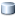 на панели инструментов
Раскройте папку D:/GIS в дереве каталогов и найдите в ней директорию Ex01 в вашем каталоге, содержащую исходные данные для выполнения первого задания. Если директории D:/GIS нет в списке, подключитесь к ней c помощью кнопки .
Раскройте базу данных MapData.gdb и изучите ее содержимое, состоящее из следующих классов:
Класс
Содержание
Cities
Города
Climates
Климатические зоны
Coast
Побережье
Countries
Страны
Currents
Данные о течениях
Lakes
Озера
Rivers
Крупнейшие реки
Seas
Моря
К какому типу геометрии относятся данные классы?
Дважды щелкните на слое Climates и перейдите на вкладку XY Coordinate System.
Внимательно прочитайте информацию. Этот слой хранится в Географической системе координат (GCS), отнесенной к эллипсоиду WGS-1984. Это означает, что координаты каждого объекта хранятся в виде широты и долготы. В любой момент этот слой можно спроецировать в любую проекцию. При этом координаты будут представлены в метрических единицах, а система координат получит название Проецированной системы координат (PCS).
Добавьте на карту слой Countries, просто перетащив его из окна каталога.
Дважды щелкните на названии слоя Countries и перейдите на вкладку Symbology.
Внимательно изучите список способов изображения слева. Они разделены на категории Features (единый символ), Categories (качественные характеристики), Quantities (количественные характеристики), Charts (картодиаграммы), Multiple Attributes (способы изображения по нескольким атрибутам).Разверните каждую группу и щелкните на каждом способе. Сопоставьте их с традиционной классификацией способов изображения:
Выберите способ единого символа (Features > Single symbol)
Щелкните на кнопке с изображением символа и измените оформление следующим образом:
Параметр
Значение
Цвет заливки (Fill Color)
Без заливки
Цвет обводки (Outline Color)
Серый 50% 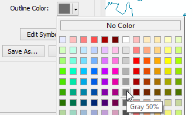
Толщина обводки (Outline width)
0,5
Диалог свойств слоя:
Результат:
Измените проекцию карты на проекцию Робинсона (Robinson). Ее можно найти в группе Projected Сoordinate Systems > World. Обратите внимание на то, как изменятся очертания объектов:
Добавьте на карту слой Coast, расположите его поверх слоя Countries и измените цвет линии на Delft Blue:
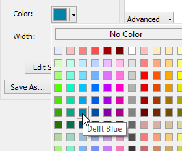
Добавьте на карту слой Rivers расположите его поверх слоя Coast и измените цвет линии на Delft Blue, а толщину сделайте равной 0,5 пиксела.
Добавьте на карту слой Lakes, расположите его поверх слоя Rivers и измените его оформление следующим образом:
Параметр
Значение
Цвет заливки
Sodalite Blue
Цвет обводки
Delft Blue
Толщина обводки
0,5
Результат:
Сохраните карту в свою директорию Ex01.
Добавьте на карту слой Cities, расположите его поверх слоя Lakes и измените его параметры следующим образом:
Параметр
Значение
Символ
Circle 1
Цвет
Черный
Размер
4
Добавьте на карту слой Seas, расположите его внизу таблицы содержания и измените его параметры следующим образом:
Параметр
Значение
Цвет заливки
Нет заливки
Цвет обводки
Серый 50%
Толщина обводки
0,5
Прозрачность
50%
Результат:
Добавьте на карту слой Сlimates, расположите его внизу таблицы содержания.
Откройте таблицу атрибутов слоя Сlimates, щелкнув на его названии правой кнопкой мыши и выбрав команду Open Attribute Table. Найдите в ней столбец Type, просмотрите его значения. Это поле таблицы хранит информацию о типе климата для каждой области. Вы будете использовать ее для классификации при отображении данного слоя.
Найдите поля Shape и ObjectID.
В поле ObjectID хранится уникальный идентификатор каждого объекта. Он нужен системе для того, чтобы каждый объект можно было гарантированно найти по некому однозначному критерию.
В поле Shape (вспомните, что слой полигональный) хранится список координат вершин полигона. Геометрия объектов редактируется специальными инструментами, поэтому содержимое поля Shape скрыто от пользователя.
Климатические пояса показываются на картах способом качественного фона. Для этого измените оформление слоя Climates следующим образом:
Параметр
Значение
Тип визуализатора
Categories > Unique values
Поле классификации
Type
Сортировка значений
От арктического к экваториальному
Цвета полигонов
Традиционные цвета климатических поясов (выберите вручную)
Обводка полигонов
Нет обводки
Показывать остальные значения
Нет
Диалог настройки символики слоя должен выглядеть следующим образом:
Добавьте на карту слой Сurrents, расположите его поверх слоя Сlimates. Этот слой содержит данные о течениях OSCAR (Ocean Surface Current Analyses – Real time), осредненные с 1993 по 2003 год.
Течения относятся к векторным полям. Существует множество способов визуализации векторных полей. В картографии распространен способ градиентного поля, при котором стрелки размещаются по регулярной сетке, их поворот соответствует направлению векторного поля в точке, а длина — скорости. Для реализации способа градиентного поля вам нужно выбрать символ (стрелку), а также указать атрибутивные поля слоя, в соответствии с которыми будет меняться их направление и длина.
Измените тип символа слоя на символьный маркер и задайте его параметры следующим образом:
Параметр
Значение
Шрифт
Esri Geology
Символ
Unicode 83
Размер
28
Цвет
Серый 70%
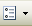
Нажмите ОК и еще раз ОК.
Чтобы задать направление стрелки, не выходя из диалога свойств слоя на вкладке Symbology нажмите Advanced > Rotation… и настройте следующие параметры вращения:
Параметр
Значение
Поле
Direction
Направление
Арифметическое
Для изменения размера стрелки в зависимости от скорости течения нажмите Advanced > Size… Выберите в списке поле Length. Нажмите ОК.
Экспортируйте карту из режима компоновки в формат PNG с разрешением 300 точек на дюйм с помощью команды File > Export Map. Сохраните его в свою директорию.
Ответьте на вопросы в отчетном файле. После окончания положите ваш отчет в сетевую папку для проверки вашим преподавателем
Оформление социально-экономической карты
Введение
Цель задания --- знакомство с моделями пространственных объектов и базой пространственных данных. Визуализация данных на карте. Оформление легенды и компоновки карты.
Параметр
Значение
Поток
Экономический поток
Теоретическая подготовка
Модели пространственных данных, модели пространственных объектов, базы пространственных объектов, картографические проекции
Практическая подготовка
Не требуется
Исходные данные
Сетка субъектов Федерации с привязанной статистикой по населению, государственная граница России, крупнейшие города России, крупнейшие озера, страны.
Модели пространственных данных, модели пространственных объектов, базы пространственных данных, классы пространственных объектов, визуализация пространственных данных, геоинформационное картографирование
Контрольный лист
[x] Добавить на карту слои базы пространственных данных и оформить их
[x] Настроить подписи объектов
[x] Создать компоновку карты, легенду и координатную сетку
[x] Экспортировать результат в графический файл
Аннотация
Задание посвящено знакомству с созданием тематических карт на основе баз пространственных данных. Вы познакомитесь с представлением площадных, линейных, точечных объектов в базе пространственных данных. Научитесь создавать карты на их основе, оформлять легенду, сетку координат и зарамочные элементы карты, познакомитесь с применением картограмм и картодиаграмм в геоинформационном картографировании.
В каталоге Ex01 находится база геоданных MapData.gdb, содержащая исходные данные для выполнения задания.
База геоданных — это структурированное хранилище, внутри которого можно создавать слои данных, группировать их и связывать различными отношениями.
Внутри базы геоданных могут быть объекты следующих типов:
--- слои векторных данных (классы пространственных объектов),
— слои растровых данных;
— обычные таблицы;
Класс пространственных объектов (feature class) --- это набор пространственных объектов одного типа геометрии (точки, линии, полигоны или объемные тела). Для класса могут быть определены атрибуты, а его представлением является таблица, содержащая как обычные столбцы (текстовые, числовые и т.д.) так и специальное поле Shape, в котором хранится информация о геометрии. Каждая строчка в таблице — это описание одного объекта.
Запустите приложение ArcMap и откройте окно Каталога
Подключитесь к рабочему каталогу Ex01 в окне Сatalog:
Раскройте базу данных MapData.gdb и изучите классы пространственных объектов внутри нее:
Класс
Содержание
Borders
Государственная граница РФ
Cities
Города
Lakes
Озера
Regions
Субъекты федерации
Countries
Страны
К какому типу геометрии относятся данные классы?
Дважды щелкните на слое Regions и перейдите на вкладку XY Coordinate System.
Внимательно прочитайте информацию. Этот слой хранится в Географической системе координат (GCS), отнесенной к эллипсоиду WGS-1984. Это означает, что координаты каждого объекта хранятся в виде широты и долготы. Этот слой можно спроецировать в любую проекцию. При этом координаты будут представлены в метрических единицах, а система координат получит название Проецированной системы координат (PCS).
Добавьте на карту слой Regions. Для этого просто перетащите его из окна Каталога на карту.
Переименуйте его в «Плотность населения». Для этого дважды (медленно) щелкните на названии слоя или выделите его и нажмите клавишу F2:
Измените проекцию карты на равновеликую коническую проекцию Альберса. Ее можно найти по следующему пути:
Projected Coordinate Systems > Continental > Asia > Asia North Albers Equal Area Conic
Обратите внимание на то, как изменится форма отображаемых объектов.
Откройте таблицу атрибутов слоя. Найдите в ней столбец Density, просмотрите его значения. Это поле таблицы хранит значения плотности населения по субъектам.
Найдите поля Shape и ObjectID.
В поле ObjectID хранится уникальный идентификатор каждого объекта. Он нужен системе для того, чтобы каждый объект можно было гарантированно найти по некому однозначному критерию.
В поле Shape хранится геометрия объектов. Если слой точечный — это будут просто пары координат X и Y для каждого объекта. Для линейных и полигональных слоев это будет уже упорядоченный набор пар координат вершин границы объекта. Геометрия редактируется специальными инструментами, поэтому содержимое поля Shape скрыто от пользователя.
Дважды щелкните на названии слоя и на вкладке Symbology и выберите способ изображения Quantity — Graduated colors (Картограммы).
Выберите в списке Value Field поле Density, система автоматически сформирует список классов, созданных методом естественных интервалов.
Существует множество методов классификаций: равных интервалов, квантилей, стандартных отклонений и т.д. По умолчанию всегда выбирается метод естественных интервалов, т.к. считается, что он в среднем неплохо отражает особенности распределения. Следует знать, однако, что этот метод классификации плохо справляется с распределениями, обладающими значительной асимметрией и эксцессом (heavy-tail distribution).
Измените число классов на 7:
Измените метод классификации. Для этого нажмите Classify. В появившемся диалоговом окне выберите в списке сверху ручной метод задания интервалов (Manual) и в правом столбце замените первые шесть значений на следующие: 1, 10, 25, 50, 100, 250. Максимальное значение оставьте без изменений. Жмите ОК:
На вкладке Symbology выберите цветовую шкалу Yellow To Dark Red:
Инвертируйте сортировку классов, чтобы наверху оказались максимальные градации:
Инвертируйте цветовую шкалу, чтобы цвета соответствовали градациям:
В основном диалоге настройки символов исправьте подписи классов (столбец Label) в соответствии с нижеприведенным фрагментом:
Нажмите ОК.
Переименуйте показатель в «чел/кв. км»:
Результат:
Сохраните карту
Скопируйте и вставьте слой «Плотность населения». Переименуйте его в «Численность населения»:
Разместите новый слой поверх слоя плотности населения.
Измените его способ изображения на Картодиаграммы (Quantities > Graduated Symbols).
Выберите для отображения поле SUM_Все_население. Появится шкала классификации картодиаграмм.
Измените цвет кружка на голубой. Для этого нажмите кнопку Template, выберите значок Circle 2 с тонкой обводкой и смените цвет заливки:
Установите число классов равным 6:
Аналогично предыдущему слою выберите ручной метод классификации и введите следующие границы классов: . Максимальную границу оставьте прежней:
Нажмите ОК
Инвертируйте порядок классов и порядок символов в классификации (аналогично предыдущему слою) так чтобы наверху оказались максимальные значения.
Установите на вкладке Symbology максимальный и минимальный размер значка равным 18 и 4 пункта соответственно:
Отредактируйте подписи классов по аналогии с картограммами:
Задайте символ фона картодиаграмм в виде полигона с пустой заливкой и пустой обводкой. Для этого щелкните на кнопке Background и выберите режим No Color для заливки и для обводки:
Переключитесь в вид компоновки через команду меню View > Layout View
Настройте макет страницы следующим образом:
Размер А4
Альбомная ориентировка
Установите масштаб карты равным . Подгоните размер фрейма данных таким образом, чтобы он был слегка больше контура России. Для этого используйте стрелку 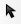 на панели Tools. Разместите его в правом верхнем углу карты.
Отцентрируйте контур России внутри фрейма (рамки). Для этого используйте лапу на панели Tools.
Смените цвет фрейма данных (фона) на светло-голубой.
Результат:
Добавьте на карту легенду, включив в нее только слои Численность населения и Плотность населения. Нажмите Далее.
В следующем диалоге название легенды оставьте пустым:
Далее все параметры оставьте по умолчанию.
Добавьте сетку координат со следующими параметрами:
Параметр
Значение
Тип сетки
градусная
Шаг по широте
10
Шаг по долготе
10
Отключите отображение нулевых минут и секунд
Разместите над картой текст заголовка карты, используя панель Drawing или меню Insert:
Разместите под картой по центру численный масштаб .
Разместите в правом нижнем углу карты текст «Выполнил» и свое ФИО.
Ответьте на вопросы в отчетном файле. После окончания положите ваш отчет в сетевую папку для проверки преподавателем
Оформление карты четвертичных отложений
Введение
Цель задания --- знакомство с моделями пространственных объектов и базой пространственных данных. Визуализация данных на карте. Оформление легенды и компоновки карты.
Параметр
Значение
Поток
Физико-географический поток
Теоретическая подготовка
Модели пространственных данных, модели пространственных объектов, базы пространственных объектов, картографические проекции
Практическая подготовка
Не требуется
Исходные данные
База данных ГИС “Сатино”.
Результат
Карта четвертичных отложений Сатинского учебного полигона масштаба 1:30 000
Ключевые слова
Модели пространственных данных, модели пространственных объектов, базы пространственных данных, классы пространственных объектов, визуализация пространственных данных, геоинформационное картографирование
Контрольный лист
[x] Добавить на карту слои базы пространственных данных и оформить их
[x] Настроить подписи объектов
[x] Создать компоновку карты, легенду и координатную сетку
[x] Экспортировать результат в графический файл
Аннотация
Задание посвящено знакомству с созданием тематических карт на основе баз пространственных данных. Вы познакомитесь с представлением площадных, линейных, точечных объектов в базе пространственных данных. Научитесь создавать карты на их основе, оформлять легенду, сетку координат и зарамочные элементы карты.
Скопируйте папку Ex03 с сервера в каталог под своей фамилией.
Откройте приложение ArcMap
ArcMap — это основное приложение ArcGIS, предназначенное для редактирования и анализа данных, создания новых объектов и оформления карт.
Откройте окно Catalog, нажав кнопку на панели инструментов.
Catalog (Каталог) — это файловый менеджер для управления пространственными данными. Его задачи в чем-то аналогичны Проводнику в Windows или Finder в Mac OS X: создание, копирование, удаление и т.д., но видит она только файлы тех форматов, которые можно использовать в ГИС.
Приложение ArcMap
Раскройте папку D:/GIS в дереве каталогов и найдите в ней директорию Ex03 в вашем каталоге, содержащую исходные данные для выполнения первого задания. Если директории D:/GIS нет в списке, подключитесь к ней c помощью кнопки .
Внутри директории Ex03 раскройте содержимое объекта под названием Satino.gdb — это база пространственных данных, созданная в формате File Geodatabase (файловая база геоданных).
База геоданных — это структурированное хранилище, внутри которого можно создавать слои данных, группировать их и связывать различными отношениями. В базе геоданных Satino.gdb есть две группы: General (общегеографические данные) и Thematic (тематические данные).
Внутри базы геоданных есть данные трех типов:
--- слои векторных данных (классы пространственных объектов),
— слои растровых данных;
— обычные таблицы;
Класс пространственных объектов (feature class) --- это набор пространственных объектов одного типа геометрии (точки, линии, полигоны или объемные тела). Для класса могут быть определены атрибуты, а его представлением является таблица, содержащая как обычные столбцы (текстовые, числовые и т.д.) так и специальное поле Shape, в котором хранится информация о геометрии. Каждая строчка в таблице — это описание одного объекта.
Представьте, что вы работаете с двумя слоями: один содержит точки наблюдений скорости течения реки Протвы, другой — представление самой реки на меженный уровень в виде площадного объекта. Съемка точек производилась с помощью GPS-приемника, координаты измерены в виде геодезических широт и долгот на эллипсоиде WGS-1984. Береговая линия реки получена с топографического плана и сохранена в проекции UTM, координаты точек границы представлены семизначными числами в метрах.
Как совместить эти два слоя, чтобы составить карту фактического материала? Очевидно, надо преобразовать координаты одного слоя в систему координат другого слоя: либо в метры в проекции UTM, либо в градусы на эллипсоиде WGS-1984.
Дважды щелкните на слое WaterPolygon в группе General и перейдите на вкладку XY Coordinate System.
Найдите строку Projection.
В какой проекции хранятся координаты?
Как вы помните, проекции обладают разными искажениями. В частности, проекция Меркатора вытягивает все приполярные объекты вдоль меридианов, следовательно, величины плоских прямоугольных координат зависят о того, какая проекция используется.
Найдите строку Linear Unit.
В каких единицах измерения записаны координаты в проекции слоя WaterPolygon? Это могут быть градусы, метры, футы (в США) и т.д.
Откройте свойства слоя HydroMeasures, лежащего к корне базы геоданных. Этот слой хранится в Географической системе координат (ГСК) — широтах и долготах, отнесенных к эллипсоиду WGS-1984. Т.е. у него нет проекции.
Закройте свойства слоя HydroMeasures.
Перенесите в таблицу содержания слой WaterPolygon из группы General.
Обратите внимание на то, что слой добавился под названием Гидрография (полигоны). У него был русскоязычный псевдоним (alias). Его можно задать в свойствах слоя в Каталоге.
Объекты базы геоданных, такие как слои, наборы данных, атрибутивные поля, обычно называют латинскими буквами, однако вы можете дать им русскоязычные псевдонимы, которые будут отображаться вместо названий в ArcMap.
Добавьте в таблицу содержания слой HydroMeasures. Обратите внимание на то, что слои совместились, несмотря на то, что у них различные системы координат!
Откройте панель инструментов Tools (инструменты), щелкнув правой кнопкой мыши вверху окна и выбрав ее из списка.
Попробуйте инструменты навигации с панели Tools: увеличить/уменьшить 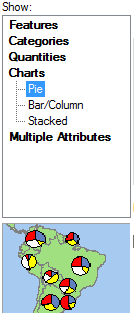 и переместить 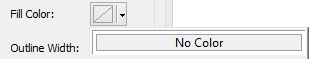. Обратите внимание на то, как будет меняться масштаб вверху окна.
Для быстрого доступа к инструментам увеличить, уменьшить и переместить используйте клавиши Z, X и C соответственно.
Выберите инструмент Identify и щелкните мышью на любом объекте, либо растяните прямоугольник вокруг объектов.
Какую информацию позволяет узнать инструмент идентификации?
Откройте атрибутивную таблицу слоя Гидрография (полигоны), щелкнув на нем правой кнопкой мыши и выбрав команду Open Attribute Table.
Найдите поля Shape и ObjectID.
Звездочка (*) рядом с названием поля означает, что для него внутри базы геоданных построен индекс — невидимая вспомогательная таблица, позволяющая быстро находить объекты по их атрибутам или местоположению. Соответственно, различают атрибутивный и пространственный индекс.
В поле ObjectID хранится уникальный идентификатор каждого объекта. Он нужен системе для того, чтобы каждый объект можно было гарантированно найти по некому однозначному критерию.
В поле Shape (вспомните, что слой полигональный) хранится список координат вершин полигона. Геометрия объектов редактируется специальными инструментами, поэтому содержимое поля Shape скрыто от пользователя.
Карта — язык географии, и квалифицированный географ должен уметь пользоваться современным диалектом этого языка. В основе языка карт, как вы помните, лежат символы и способы изображения.
Удалите из таблицы содержания слой HydroMeasures и добавьте слой QDeposit (четвертичные отложения). Перетащите его вниз списка и дважды щелкните на нем.
Перейдите на вкладку Symbology. Здесь вы встретите многие знакомые вам способы изображения.
Просмотрите список в левой части диалога и попробуйте назвать способы изображения, основываясь на вспомогательных иллюстрациях. Обсудите их с преподавателем.
Четвертичные отложения показываются качественным фоном. В ArcGIS этот способ изображения называется Categories (категории).
Выберите пункт Categories в списке слева, и в нем же выберите режим Unique values (уникальные значения).
Вверху вы должны увидеть два списка: поле, из которого необходимо взять уникальные значения, и цветовая шкала.
Выберите поле Отложения в списке Value Field, и нажмите внизу диалога кнопку Add All Values. Программа просканирует всем строчкитаблицы, найдет уникальные значения, которые там есть, и подставит их в список. В крайнем правом поле отображается количество объектов каждого уникального значения:
Диалог настройки способа изображения
Обратите внимание на то, что типам объектов были автоматически присвоены символы из той цветовой шкалы, которая выбрана справа вверху.
Снимите галочку All other values, расположенную вверху списка.
Разверните список цветовых шкал Color Ramp и выберите любую другую на свой вкус. Цвета объектов в легенде автоматически поменяются.
Вы помните, однако, что есть официальные и неофициальные договоренности относительно цветов, используемых на геологических, геоморфологических, почвенных, геоботанических картах. Вы можете задать каждому типу индивидуально тот цвет, который требуется. Более того, вы можете сохранить набор цветов как шкалу.
Щелкните дважды на любом символе в легенде. Перед вами появится диалог настройки символа, в котором вы можете поэкспериментировать.
Закройте диалог настройки символа и нажмите ОК в диалоге свойств слоя.
Теперь слой Четвертичные отложения показан методом качественного фона с использованием тех цветов, которые были назначены каждому типу.
В предыдущем разделе вы изучили возможные способы изображения и показали типы рельефа методом качественного фона. Однако карты без подписей встречаются крайне редко. Если в слое есть поле с теми значениями, которые надо вынести в качестве подписей, это делается автоматически.
Убедитесь, что включен механизм расстановки подписей Maplex. Для этого откройте панель инструментов Labeling и поставьте соответствующую галочку:
Откройте снова свойства слоя Четвертичные отложения и перейдите на вкладку Labels.
Отметьте галочкой опцию Label features in this layer. Эта опция включает подписи для слоя.
В поле Label Field выберите значение Индекс Подписи будут браться из этого поля. Рядом расположены элементы настройки шрифта, с которыми вы можете поэкспериментировать:
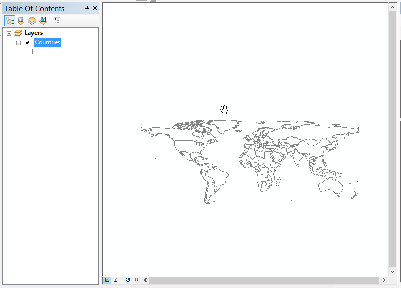Диалог настройки подписей для объектов
Нажмите кнопку Placement Properties. Появившийся диалог позволяет вам настроить, как именно будут размещены подписи относительно самих объектов. Это очень мощный инструмент, который управляет множеством нюансов расстановки подписей.
В диалоге Placement Properties нажмите кнопку Position и изучите возможные варианты. Попробуйте применить разные варианты. В конце верните способ по умолчанию — горизонтально внутри.
Закройте все диалоговые окна, последовательно нажимая кнопку OK в каждом из них.
Нажмите кнопку 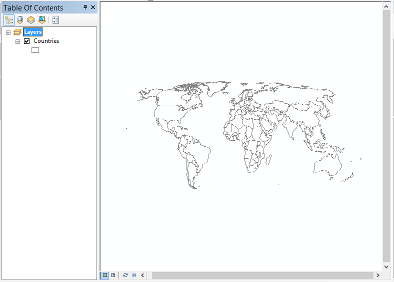 на панели Tools, чтобы вся карта уместилась в окне просмотра. Окно приложения примет вид, примерно соответствующий тому, что показано на рисунке ниже:
Карта четвертичных отложений с индексами в произвольной цветовой шкале
Обратите внимание, что на вашей карте все объекты подписаны одинаково. Если требуется, чтобы подписи объектов были разными в зависимости от типа объекта, на вкладке Labels свойств слоя необходимо сменить режим Label all the features the same way на режим Define classes… и произвести настройку.
Если карту необходимо подготовить к печати, снабдить заголовком, масштабом, легендой и градусной сеткой, используется режим компоновки.
Выберите пункт меню View > Layout View. Приложение перейдет в режим компоновки.
Откройте панель инструментов Layout. С ее помощью вы можете осуществлять навигацию в режиме компоновки:
Панель инструментов Layout
Откройте меню Insert и изучите его содержание.
Обсудите с преподавателем, какие элементы компоновки можно создать.
Вставьте название карты (Insert > Title). В появившемся диалоге введите текст «Карта четвертичных отложений». Сдвиньте название в угол листа.
Вставьте легенду (Insert > Legend). Добавьте туда только слой четвертичных отложений. Разберитесь самостоятельно с мастером создания легенды.
Настройка легенды разнесена на несколько диалоговых окон. Изучите назначение каждого из них. Обсудите их с преподавателем.
Сетка прямоугольных координат строго привязана к местоположению самой карты, поэтому она является ее свойством. Для того, чтобы вставить ее, выполните следующие шаги:
Дважды щелкните на заголовке фрейма данных Layers и перейдите на вкладку Grid.
Нажмите кнопку New Grid.
Перед вами окажется диалог с тремя типами возможных сеток. Чем они отличаются? Обсудите их с преподавателем.
Выберите режим Measured Grid, который создает сетку в плоских прямоугольных координатах. Изучите модерждание каждого последующего диалога, параметры оставьте по умолчанию
Нажмите ОК в свойствах фрейма данных. Теперь поверх вашей карты должна отображаться сетка прямоугольных координат.
Разместите на карте линейный масштаб в метрах.
Снимок экрана №2. Компоновка карты с легендой и масштабом
Сохраните карту через команду меню File > Save as в свою директорию под названием Ex03.mxd.
Атрибуты играют важную роль в геоинформационных системах. На их основе происходит визуализация данных, также они участвуют в большинстве операций пространственного анализа. Необходимо овладеть техникой их создания, редактирования и использования.
Редактирование атрибутов может понадобиться при заполнении полей для новых объектов, исправлении ошибок и заполнении пустых значений.
Переключитесь обратно в режим View > Data View.
Добавьте на карту слой WaterLine (линейные объекты гидрографии).
Исправьте его символ на голубую линию толщиной 1.5 пиксела, чтобы он лучше читался на карте.
Включите подписи по полю RiverName на вкладке Labels, задайте им синий цвет, криволинейное размещение и нажмите OK в диалоге свойств слоя.
Появились ли подписи ручьев?
По всей видимости, с полем RiverName что-то не в порядке. Давайте проинспектируем атрибутивную таблицу.
Зажмите клавишу Ctrl и дважды кликните на названии слоя Гидрография (линии). Откроется его атрибутивная таблица.
Таблицу также можно открыть через контекстное меню слоя, выбрав пункт Open Attribute Table. Свойства слоя также доступны из пункта Properties в контекстном меню. Однако вариант с двойным нажатием более быстрый и, скорее всего, более удобный.
Похоже, что создатель слоя забыл внести в него названия водотоков. Следует исправить этот недочет.
Пристыкуйте таблицу в нижнюю часть окна, чтобы она не загораживала карту.
Выделите в таблице содержания слой Гидрография (линии) и в его контекстном меню выберите пункт Edit Features > Start Editing. Включится режим редактирования, который позволяет вручную править атрибуты и геометрию объектов. Должна появиться панель редактора:
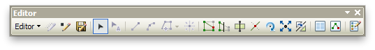Панель редактирования Editor
Чтобы не выделять лишних объектов, в контекстном меню слоя Гидрография (линии) выберите пункт Selection > Make this the only selectable layer
Возьмите с панели редактора инструмент выбора (отмечен на рисунке) и выделите с его помощью ручей Язвицы (на севере полигона). Он автоматически подсветится в таблице. Введите название в ячейку поля RiverName:
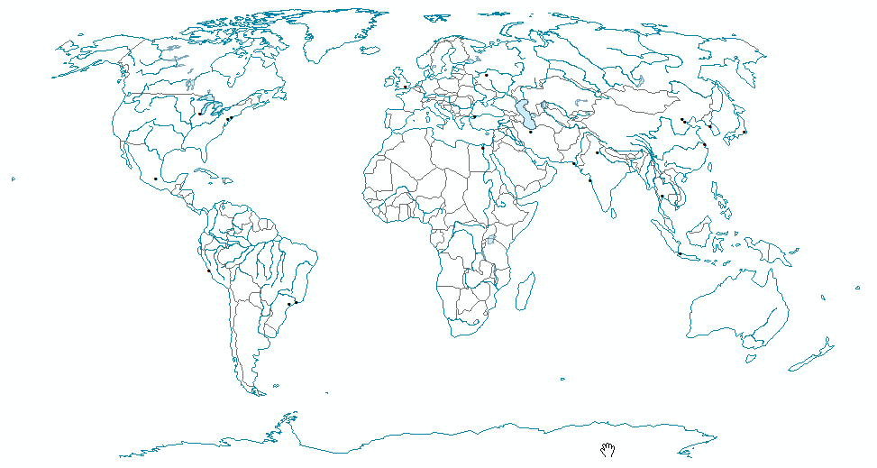Редактирование таблицы атрибутов слоя
Найдите на карте Чолоховский ручей (на юге полигона), выделите его и в контекстном меню выберите пункт Attributes. Перед вами откроется окно редактора атрибутов --- это еще один способ редактирования таблицы, ориентированный на индивидуальную работу с каждым объектом:
Редактор атрибутов
Найдите поле RiverName и введите название ручья.
Завершите редактирование, выбрав на панели редактора пункт меню Editor > Stop Editing. В появившемся диалоге нажмите Да.
Появились ли теперь подписи ручьев Язвицы и Чолоховский?
Снимок экрана №3. Окно карты с подписями ручьев
Сохраните документ карты еще раз. Сохраните ваш отчетный файл и положите его в сетевую папку преподавателя.
Поля можно не только заполнять вручную, их можно вычислять и копировать значения из других полей. Но для начала необходимо научиться их создавать.
Предположим, что бригада топографов произвела съемку границы леса в целях ее сравнения с данными 10-летней давности. Чтобы построить карту границы леса и совместить ее с другими данными, необходимо знать координаты опорных геодезических пунктов, которые участвовали в планово-высотном обосновании. Эти пункты есть в базе геоданных Satino.gdb.
Добавьте на карту слой GeoPoints (геодезические пункты).
Смените через свойства слоя значок на белый треугольник с точкой посередине (он есть в библиотеке).
Откройте атрибутивную таблицу слоя.
Есть ли координаты точек в таблице слоя Геодезические пункты? В каком поле они должны храниться?
Координаты объектов точечного слоя можно вывести в числовое поле. Для этого создадим два поля X и Y.
Выберите в окне таблицы пункт меню Table Options — Add Field....
В диалоге введите X (латиницей) в название поля Name.
Теперь необходимо задать тип поля. Раскройте ниспадающий список Type.
Какой тип должно иметь поле для хранения координат геодезических пунктов и почему? Обсудите с преподавателем все варианты, которые есть в списке и случаи, когда их необходимо использовать.
Установите тип поля Float. Остальные параметры оставьте по умолчанию. Нажмите OK.
Повторите операцию, создав поле Y.
Нажмите правой кнопкой на заголовке поля X и выберите в контекстном меню Calculate Geometry....
В появившемся диалоге из ниспадающего списка выберите величину X Coordinate of Point и единицы измерения Meters.
Обратите внимание, что инструмент Calculate Geometry позволяет вам вычислять координаты не только в проекции данных (data source), но и в проекции карты (data frame).
Нажмите OK.
Повторите вычисление координаты для поля Y
Какого порядка величины получились в полях X и Y? Вспомните, куда направлена ось X в проеции UTM/Гаусса-Крюгера. Нет ли здесь противоречия?
В ArcGIS используется стандартная система плоских прямоугольных координат, в которой ось X направлена на восток, а ось Y — на север. То же самое касается и проекций Гаусса-Крюгера и UTM
Цель задания --- знакомство с моделями пространственных объектов и базой пространственных данных. Визуализация данных на карте. Оформление легенды и компоновки карты.
Параметр
Значение
Поток
Общий
Теоретическая подготовка
Модели пространственных данных, модели пространственных объектов, базы пространственных объектов, картографические проекции
Практическая подготовка
Не требуется
Исходные данные
Картографическая база данных на территорию Швейцарии
Результат
Общегеографическая карта Швейцарии в масштабе 1:1 750 000.
Ключевые слова
Модели пространственных данных, модели пространственных объектов, базы пространственных данных, классы пространственных объектов, визуализация пространственных данных
Контрольный лист
[x] Добавить на карту слои базы пространственных данных и оформить их
[x] Настроить подписи объектов
[x] Создать компоновку карты и легенду
[x] Экспортировать результат в графический файл
Аннотация
Задание посвящено знакомству с созданием тематических карт на основе баз пространственных данных. Вы познакомитесь с представлением площадных, линейных, точечных объектов в базе пространственных данных. Научитесь создавать карты на их основе, оформлять легенду, сетку координат и зарамочные элементы карты.
Запустите приложение ArcMap и откройте окно Сatalog
Подключитесь к рабочему каталогу Ex04 в окне Сatalog.
В каталоге Ex04 находится база геоданных MapData.gdb, содержащая исходные данные для выполнения задания. Внутри базы геоданных могут быть объекты следующих типов:
--- слои векторных данных (классы пространственных объектов),
— слои растровых данных;
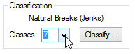 — обычные таблицы;
Раскройте базу данных MapData.gdb и изучите ее содержимое:
Добавьте на карту и оформите векторные слои, содержащиеся в базе данных MapData.gdb, все кроме слоя Countries. Для каждого слоя выберите единый символ. В качестве образца оформления используйте рисунок ниже.
Учтите, что:
Слой Snow располагается между отмывкой и цветовой окраской рельефа. Это позволяет показать заснеженные территории, но при этом сохранить светотеневую пластику.
При выборе значка для аэропорта следует воспользоваться поиском по символам, набрав ключевое слово «airport»
Недостатком полученной карты является то, что все населенные пункты показаны одинаково. Чтобы исправить этого, необходимо разделить их по категориям численности населения. Для этого:
В диалоге настройки символов слоя включите режим отображения Categories (unique values), используя значения поля Население_диапазон
Отсортируйте классы численности в нужном порядке, используя стрелочки.
Настройте размер кружка таким образом, чтобы его диаметр менялся от 3 до 7 пунктов
Результат: 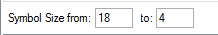
Перейдите на вкладку Labels и переключите подписи в режим нескольких классов.
Импортируйте классы с помощью кнопки Get Symbol Classes.
Настройте подписи следующим образом:
Шрифт Calibri черного цвета
Размер шрифта должен увеличиваться от низшего класса (менее 10 000) до самого крупного (от 250 000 до 500 000) с 8 до 12 пунктов.
Подписи городов крупнее 100 000 человек должны быть жирным шрифтом.
Подгоните размер фрейма данных таким образом, чтобы карта оказалась в верхней части листа
Установите масштаб равным 1:1 750 000
Результат: 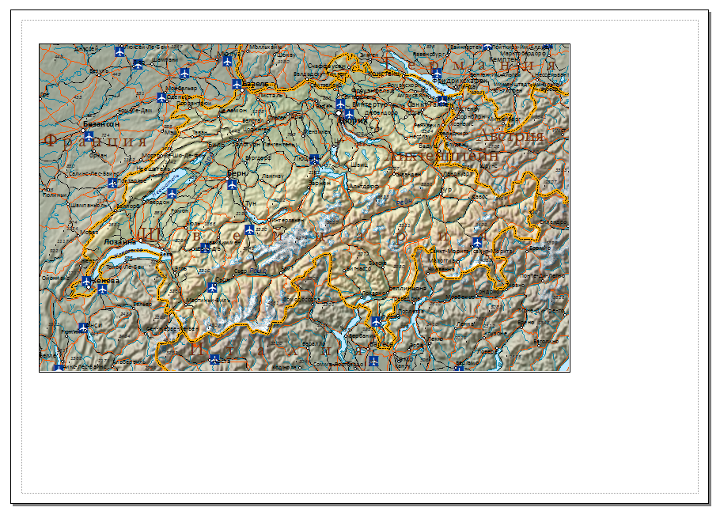
Используя настройки по умолчанию, вставьте легенду, включив в нее все слои, кроме Elevation, Countries и Hillshade
Результат:
Измените название показателя для слоя Cities на «число жителей». Уменьшите размер шрифта до 9 и сделайте его курсивным.
Уменьшите размер шрифта для стиля названия слоя Cities до 10 пунктов.
Переименуйте все слои в таблице содержания на русский язык в соответствии с таблицей в начале упражнения. Обратите внимание на то, что в легенде они переименуются автоматически.
Переименуйте заголовок легенды на русский язык.
Увеличьте интервал между слоями в легенде до 10 пунктов.
Результат: 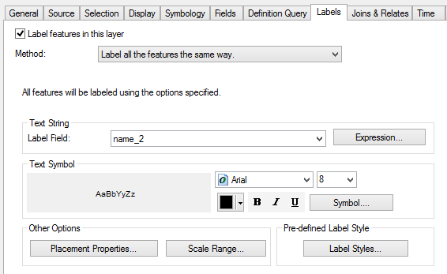
Вставьте на карту координатную сетку типа Graticule с шагом 1° по широте и долготе. Отключите для градусной сетки показ минут и секунд.
Вставьте название карты над картой по центру, используя следующие параметры:
Параметр
Значение
Шрифт
Arial
Размер шрифта
16
Начертание
Полужирный
Разрядка
10 пунктов
Вставьте километровую масштабную линейку по нижеприведенному образцу, чтобы завершить оформление карты:
Цель задания — знакомство с привязкой, трансформированием и цифрованием геоизображений, элементами базовых технологий ГИС (оверлей, пространственные запросы).
Поток
Гидрометпоток, Физпоток
Теоретическая подготовка
Системы координат и проекции на картах, привязка геоизображений, трансформирование геоизображений, цифрование геоизображений. Методы трансформации: аффинное, проективное, полиномиальное, метод резинового листа (сплайны). Пространственные запросы, атрибутивные запросы, оверлей.
Практическая подготовка
Знание основных компонент интерфейса ArcGIS Desktop (каталог, таблица содержания, карта). Работа с базой геоданных. Настройка символики и подписей объектов.
Исходные данные
Слои картографической основы (карт масштаба 1:2 500 000), растровая карта гидрогеологического районирования на район среднего течения Дона.
Результат
Слой гидрогеологического районирования в базе данных. Слой рек, обогащенный данными о принадлежности участков рек к артезианским бассейнам. Проект карты с оформленной компоновкой
[ ] Создать в базе геоданных класс пространственных объектов для районов
[ ] Наполнить класс районов путем цифрования растровой карты
[ ] Заполнить названия районов
[ ] Осуществить оверлей для обогащения слоя рек данными о принадлежности к бассейнам, выполнить пространственный и атрибутивный запрос
[ ] Подготовить проект гидрогеологической карты с компоновкой
Аннотация
Задание посвящено знакомству с привязкой растровых карт, созданием и наполнением баз пространственных данных путем цифрования, использовании оверлея, пространственных и атрибутивных запросов. Эти методы входят в число базовых технологий геоинформатики. С их помощью в дальнейшем вы сможете решать множество задач. Одним из источников питания рек являются артезианские воды. К артезианским водам относятся подземные воды, находящиеся в водоносных горизонтах, перекрытых и подстилаемых водоупорными (или относительно водоупорными) слоями горных пород, и обладающие гидростатическим напором. В задании предлагается перевести в векторный вид карту гидрогеологического районирования среднего течения Дона и далее наполнить этой информацией участки рек, чтобы в дальнейшем определять источник питания каждой реки.
Оформление базовых слоев
Скопируйте каталог Ex02 в свою папку.
Откройте приложение ArcMap, создайте новый документ карты и сохраните его в свою папку Ex02.
Подключитесь в окне каталога к папке Ex02. Убедитесь, что в ней находится база геоданных Don.gdb и растровый файл DonArtesian.png.
Раскройте базу геоданных и перенесите на карту классы Lakes и Rivers
Присвойте слою Lakes символ с голубой заливкой и синей обводкой.
Настройте оформление слоя Rivers следующим образом:
Выберите способ изображения по категориям (уникальные значения).
В качестве поля для отображения используйте атрибут Тип. Нажмите Add All Values.
Покрасьте все реки в синий цвет. Для этого щелкните на заголовке первого столбца Symbol и вызовите команду Properties for all symbols. Выберите точно такой же цвет, что вы использовали для обводки озер.
Установите следующие параметры толщины линий:
Параметр
Значение
Реки постоянные крупные
2 пункта
Реки постоянные средние
1,5 пункта
Остальные классы
1 пункт
Диалог примет следующий вид:
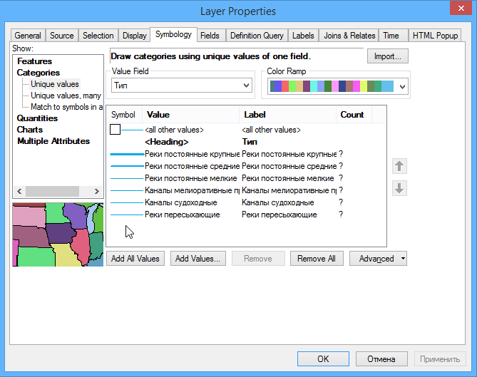Рисунок 5
Включите опцию подписи рек. Перейдите на вкладу Labels и отметьте флажок Label features in this layer. Выберите поле Название в качестве поля для подписей, смените их цвет на темно-синий и установите криволинейное размещение вдоль линии. Нажмите ОК. В результате операции все реки будут подписаны.
Чтобы были подписаны только крупнейшие реки, необходимо использовать определяющий запрос на языке SQL. Для этого откройте снова свойства слоя и на вкладке Labels выберите метод «Define classes of features and label each class separately». Нажмите кнопку SQL query… и введите в поле следующий текст запроса:
"CLASS" = 2 OR "CLASS" = 3
Чтобы избежать ошибок ввода, вы можете дважды щелкнуть на поле CLASS в списке слева — оно подставится в запрос. Добавьте знак =. Далее нажмите кнопку Get unique values и найдите 2-й класс. Щелкните на нем дважды — после этого название поля подставится в текст запроса. После этого введите оператор OR и повторите ввод для 3-го класса. Диалог примет следующий вид:
Нажмите ОК в диалоге свойств слоя. Карта примет следующий вид:
Сохраните документ карты в свою папку Ex02 под именем Don.mxd.
Снимок экрана №1 — Реки
Привязка карты
Внимательно прочтите раздел Привязка растровых данных (Georeferencing) в файле Описание функций.
Добавьте на карту из базы данных слой DonArtesian.png. и поместите его непосредственно под слоем Rivers. При добавлении слоя появится диалоговое окно, предупреждающее о том, что файл не имеет привязки. Закройте его.
Поместите карту в центр окна ArcMap.
Откройте панель инструментов Georeferencing. Убедитесь, что в ее списке выбран файл DonArtesian. Выберите в ее меню команду Fit to Display, чтобы переместить непривязанный растр на середину области отображения.
Поместите растр непосредственно под слоем Rivers.
Используя инструмент расстановки контрольных точек, укажите пять контрольных точек в разных частях карты. Желательно, чтобы точки были равномерно распределены по полю карты (по краям и в центре) и не располагались на одной линии — это обеспечит хорошие коэффициенты трансформации. В качестве точек используйте места впадения притоков и впадения рек в водохранилища. Например, можно использовать точку впадения реки Хопёр в реку Дон:
Ознакомьтесь с доступными методами трансформирования по контрольным точкам. Для этого в меню Georeferencing выберите команду Transformation. По умолчанию выбрано аффинное преобразование.
Какие еще виды трансформирования доступны? Чем проективное преобразование отличается от аффинного?
Оставьте выбранным аффинное преобразование.
Осуществите трансформирование растра. На панели инструментов Georeferencing выберите команду меню Georeferencing > Update Georeferencing. Контрольные точки удалятся.
Картографическое изображение примет следующий вид:
Снимок экрана №2 — Привязанная растровая карта
Сохраните документ карты в формате mxd в папке отчета.
Создание слоя гидрогеологического районирования
Прочтите раздел Создание классов пространственных объектов в файле Описание функций.
Создайте новый класс пространственных объектов в базе геоданных Don.gdb. Для этого:
На первом шаге назовите слой Artesian, выберите площадную модель пространственных объектов (Polygon features).
На втором шаге выберите систему координат. Оптимально использовать ту же систему, что используется в базовых данных. Для этого ее можно импортировать у существующего слоя. Нажмите Add Coordinate Systems > Import, найдите и укажите любой слой в базе данных Don.gdb.
На 3-м и 4-м шагах оставьте все параметры по умолчанию.
На 5-м шаге добавьте в первую пустую строку новое поле Basin. Тип поля — Text. В этом поле вы будете хранить название гидрогеологического бассейна.
Нажмите Finish.
Добавьте получившийся слой на карту и разместите его вверху таблицы содержания.
Отключите слои рек и озер.
Прочтите раздел Редактирование в файле Описание функций, особенно уделив внимание разделам Создание объектов и Цифрование в режиме автозавершения (auto-complete).
Включите режим редактирования слоя. Для этого в его контекстном меню выберите команду Edit Features > Start Editing.
Откройте список шаблонов слоя и посмотрите доступные опции редактирования в нижней части окна.
Оцифруйте все бассейны. Выполняйте работу в следующей последовательности.
Сначала оцифруйте Донецко-Донской бассейн (IV) с помощью обычного инструмента Polygon.
Далее последовательно пристыкуйте к нему оставшиеся бассейны с помощью инструмента Auto Complete Polygon. Замкните их по границе листа.
После того как редактирование районов завершено, сохраните изменения, выбрав команду Editor — Save Edits.
Откройте таблицу атрибутов слоя районов. Поочередно выделяя каждый из них (для этого щелкните в самом начале строки), введите в поле Basin его название, ориентируясь по карте. Слово «бассейн» не вводите:
После ввода названий снова сохраните изменения.
Завершите редактирование, выбрав команду Editor > Stop Editing.
Измените оформление слоя в соответствии с цветами на исходном растре.
Включите подписи районов по полю Basin.
Отключите слой растровой карты. Включите снова слои рек и озер и переместите их вверх таблицы содержания. Картографическое изображение примет следующий вид:
Сохраните документ карты в папке отчета.
Снимок экрана №3 — Слой артезианских бассейнов
Пространственный запрос
Для получения информации о взаимном положении объектов или поиске объектов, основанном на их местоположении, вы можете использовать три метода:
Вычисление расстояний
Пространственный запрос
Оверлей
Вычисление расстояний позволяет оценить попарные расстояния между объектами, найти для каждого объекта ближайший к нему. Пространственный запрос осуществляет выборку объектов, находящихся в указанных топологических отношениях с другими объектами. Например, вы можете сказать «выбрать реки, находящиеся целиком внутри (completely within) Московского артезианского бассейна» или смягчить запрос, указав «выбрать реки, пересекающие (intersect) Московский артезианский бассейн». Частным случаем пространственного запроса также является поиск объектов по координатам, диапазону координат или произвольно заданной области. В этом случае пользователь чаще всего обводит на карте прямоугольником интересующую его зону, при этом выбираются объекты, пересекающие или находящиеся целиком внутри выделенной зоны.
Рассмотрим, как можно выберать реки, принадлежащие Приволжско-Хоперскому бассейну.
Выделите на карте Приволжско-Хоперский бассейн, используя инструмент на панели Tools.
Откройте диалог пространственной выборки (меню Selection > Select by Location)
Выберите в диалоге пространственной выборки слой Rivers в качестве выбираемого (target) и слой Artesian в качестве выбирающего (source). Отметьте галочкой пункт Use Selected Features — это позволит выбирать с использованием уже выбранных объектов.
Выберите метод выборки «intersect the source layer feature» —пересечение.
Нажмите Apply. Будут выбраны реки, пересекающие выбранный артезианский бассейн:
Снимок экрана №4 — Пространственный запрос методом пересечения
Выберите метод выборки «are completely within the source layer feature» (полностью внутри).
Нажмите Apply. Будут выбраны реки, находящиеся полностью внутри выбранного бассейна:
Снимок экрана №5 — Пространственный запрос методом «внутри»
Очистите выборку с помощью инструмента Clear Selected Features:
Оверлей
Оверлей (от англ. overlay — наложение), в отличие от пространственного запроса, создает новые данные путем геометрической композиции входных слоев. Полученные участки наследуют атрибуты от каждого слоя. Эта операция базируется на стандартных отношениях множеств, таких как пересечение, объединение и симметрическая разность. Оверлей позволяет понять, какие комбинации объектов встречаются в пространстве. Так, если в качестве аргументов служат реки и бассейны, то в результате выполнения оверлея реки будут разрезаны на участки в соответствии с границами бассейнов.
Для выполнения оверлея вы будете использовать инструменты геообработки.
Геообработка (geoprocessing) в терминологии ArcGIS — это анализ и преобразование пространственных данных. Инструменты геообработки находятся в Арктулбоксе (ArcToolbox), где они сгруппированы по назначению. Некоторые наборы инструментов, такие как Spatial Analyst и 3D Analyst, с которыми вы познакомитесь на следующих занятиях, являются дополнительными модулями ArcGIS.
С помощью оверлея можно разбить речную сеть на сегменты, принадлежащие разным бассейнам, а полученным сегментам автоматически присвоить название бассейна.
Щелкните по базе данных Don.gdb правой кнопкой мыши и выберите пункт Make Default Geodatabase. Эта команда указывает системе, что все результаты обработки данных (новые слои) следует помещать в выбранную базу геоданных.
Откройте ArcToolbox с помощью кнопки на главной панели инструментов.
Раскройте группу инструментов Analysis Tools > Overlay. Здесь можно найти различные режимы оверлея.
Запустите инструмент Identity, который находит геометрическое пересечение двух слоев и присваивает атрибуты второго слоя участкам первого слоя.
Заполните его параметры следующим образом:
Параметр
Значение
Input features
Rivers
Identity Features
Artesian
Output Feature Class
<Ваша папка>\Ex02\Don.gdb\Rivers_Identity
JoinAttributes
ALL
Диалог инструмента примет следующий вид:
После выполнения инструмента слой будет добавлен на карту. Раскройте его таблицу атрибутов, чтобы убедиться, что каждому участку реки присвоена принадлежность к артезианскому бассейну (часть строк будет пустой, так как созданный вами слой артезианских бассейнов покрывает не всю территорию):
Атрибутивный запрос
Атрибутивный запрос позволяет искать объекты по значениям их атрибутов. В результате выполнения оверлея вы можете найти участки рек, принадлежащие артезианским бассейнам, по информации, содержащейся в поле Basin.
Откройте диалог атрибутивной выборки (меню Selection > Select by Attributes).
Выберите в качестве выбираемого слой Rivers_Identity.
Введите следующий текст запроса:
"Basin" = 'Приволжско-Хоперский'
На карте будут выделены водотоки, принадлежащие данному артезианскому бассейну. Обратите внимание на то, что выборка теперь полностью совпадает с границами бассейна.
Откройте таблицу атрибутов слоя Rivers_Identity и укажите опцию Show Selected records, чтобы показывать только выбранные объекты:
Скомпонуйте окна приложения таким образом, чтобы было видно одновременно окно атрибутивного запроса, таблицу атрибутов слоя со столбцом Basin, а также картографическое изображение с выделенными реками. Окно приложения примет следующий вид:
Сохраните документ карты.
Снимок экрана №6 — Атрибутивный запрос
Оформление карты
Отключите слой Rivers_Identity и завершите оформление карты, добавив на нее слои Boundaries (границы) и Cities (города). Используйте для их отображения способ Категорий и настройте отображение разными символами классов границ, а также городов в соответствии с численностью населения. При оформлении подписей городов используйте метод Классифицированных подписей (прочтите соответствующий раздел в файле Описание функций). Пример результирующего изображения:
Снимок экрана №7 — Карта
Переключитесь в режим компоновки и оформите легенду карты. Добавьте название «Гидрогеологическое районирование среднего течения Дона», а также масштаб и свои ФИО.
Экспортируйте результирующую карту в файл с расширением png и вставьте его в отчет.
Ответы на вопросы
Заполните отчетный файл и положите его в сетевую папку для проверки преподавателем.
Создание тематической базы геоданных административного деления города
Введение
Цель задания — знакомство с привязкой, трансформированием и цифрованием геоизображений, элементами базовых технологий ГИС (оверлей, пространственные запросы).
Поток
Экономический
Теоретическая подготовка
Системы координат и проекции на картах, привязка геоизображений, трансформирование геоизображений, цифрование геоизображений. Методы трансформации: аффинное, проективное, полиномиальное, метод резинового листа (сплайны). Пространственные запросы, атрибутивные запросы, оверлей.
Практическая подготовка
Знание основных компонент интерфейса ArcGIS Desktop (каталог, таблица содержания, карта). Работа с базой геоданных. Настройка символики и подписей объектов.
Исходные данные
Cлои картографической основы OpenStreetMap, растровая карта районов Лондона.
Результат
База данных со слоем границ районов Лондона. Результаты выборки и статистика по количеству отелей в пределах каждого района. Картодиаграммы по числу отелей в каждом районе. Проект карты с оформленной компоновкой
Ключевые слова
Системы координат, проекции, трансформирование координат, пространственная привязка, цифрование, оверлей, пространственные запросы, атрибутивные запросы, библиотеки символов, картодиаграммы
Контрольный лист:
Привязать растровую карту к опорным данным
Дополнить класс районов путем цифрования растровой карты
Заполнить названия новых районов
Определить путем пространственного запроса количество отелей в каждом районе.
Построить картодиаграммы по полученным значениям с использованием нестандартных библиотек символов
Подготовить проект карты с компоновкой
Аннотация
Задание посвящено знакомству с привязкой растровых карт, созданием и наполнением баз пространственных данных путем цифрования, оформлением карт на основе баз данных. В этом задании вы также познакомитесь с запросами, с помощью которых можно ограничивать число отображаемых объектов.
В задании предлагается выполнить координатную привязку карты районов Лондона и оцифровать недостающие районы для создания персональной БГД «Административные районы Лондона». Далее, используя запросы к БГД, по каждому району определить количество входящих в него отелей, и построить социально-экономическую карту, которая показывает способом картодиаграмм количество отелей в каждом районе. Работа завершается оформлением компоновки карты.
Внимательно прочтите раздел Привязка растровых данных (Georeferencing) в файле Описание функций.
Добавьте на карту из окна каталога слой InnerLondon.png и поместите его под слои Water и Roads. При добавлении слоя появится диалоговое окно, предупреждающее о том, что файл не имеет привязки. Закройте его.
Расположите карту в центре окна ArcMap.
Откройте панель инструментов Georeferencing. Выберите в ее меню команду Fit to Display, чтобы переместить непривязанный растр на середину области отображения.
Используя инструмент расстановки контрольных точек на панели Georeferencing, укажите по крайней мере 3 контрольные точки в разных частях города:
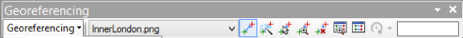
Щелкайте сначала на растре, затем на векторном слое. В качестве точек используйте перекрестки дорог, которые вы можете найти как на растре, так и на картографической основе. Например, и на растре и на основе хорошо распознается перекресток на западной окраине Хемпстеда:
Желательно, чтобы точки были равномерно распределены по полю карты (по краям и в центре) и не располагались на одной линии — это обеспечит хорошие коэффициенты трансформации.
Ознакомьтесь с доступными методами трансформирования по контрольным точкам. Для этого в меню на панели Georeferencing выберите команду Transformation. По умолчанию выбрано аффинное преобразование. При пяти контрольных точках будет доступно также проективное преобразование. Оставьте выбранным аффинное преобразование:
Осуществите трансформирование растра. Для этого на панели инструментов Georeferencing выберите команду меню Georeferencing > Update Georeferencing. После выполнения трансформирования контрольные точки удалятся.
Картографическое изображение примет следующий вид:
Отключите слой дорог и слой гидрографии, оставив видимой только подложку.
Добавьте на карту класс пространственных объектов Districts. Он содержит районы северного берега Темзы. Вам необходимо его дополнить, оцифровав районы южного берега реки:
Прочтите раздел Редактирование в файле Описание функций, особенно уделив внимание разделам Создание объектов и Цифрование в режиме автозавершения (auto-complete).
Включите режим редактирования слоя Districts. Для этого в его контекстном меню выберите команду Edit Features > Start Editing.
Откройте список шаблонов слоя, нажав кнопку Create Features на панели Editor и посмотрите доступные опции.
Оцифруйте недостающие городские районы. Выполняйте работу в следующей последовательности:
Сначала оцифруйте район Wandsworth с помощью обычного инструмента Polygon.
Далее последовательно пристыкуйте к нему оставшиеся районы южного берега с помощью инструмента Auto-Complete Polygon.
Участки, примыкающих к реке, аккуратно проведите по береговой линии аналогично районам северного берега.
После того как редактирование районов завершено, сохраните изменения, выбрав команду Editor > Save Edits.
Откройте таблицу атрибутов слоя районов (Ctrl + двойной щелчок мышью по названии слоя). Поочередно выделяя каждый из новых районов, введите в поле Name его название, ориентируясь по карте.
После ввода названий снова сохраните изменения.
Завершите редактирование, выбрав команду Editor > Stop Editing.
Измените оформление слоя следующим образом: сделайте пустую заливку, а обводку сделайте оранжевого цвета толщиной 1,5 пункта.
Включите подписи районов по полю Name.
Отключите слой растровой карты.
Включите слой дорог и установите ему прозрачность, равную 60%.
Картографическое изображение примет следующий вид:
Снимок экрана №3. Оцифрованные городские районы с подписями
В данной части работы предлагается определить количество отелей, которые попадают в пределы каждого района, затем построить картодиаграммы по полученным значениям. Для этого будет использован следующий алгоритм:
Выбрать текущий район.
Выбрать здания, попадающие в его пределы (пространственный запрос).
Из полученной выборки оставить только здания, являющиеся отелями (атрибутивный запрос).
Записать число отобранных зданий в атрибут Hotels текущего района.
Эти операции необходимо повторить для каждого района.
Перед выполнением анализа следует создать атрибутивное поле, в котором будет храниться число отелей. Для этого:
Остановите сеанс редактирования, если это не было сделано ранее (Editor > Stop Editing).
Откройте таблицу атрибутов слоя.
Выберите команду меню Add Field… (если она не активна, это значит, что вы не остановили сеанс редактирования на панели Editor).
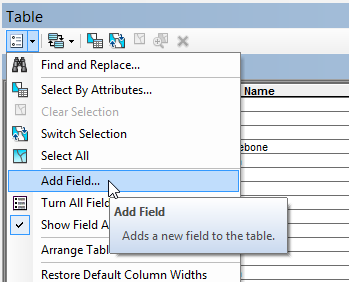
Введите название поля Hotels и тип поля Short Integer. Диалог примет следующий вид:
Нажмите ОК. Поле будет добавлено в слой.
Добавьте на карту класс building_points из базы геоданных London.gdb. Разместите его под слоем districts. В данном слое каждая точка соответствует зданию.
Для удобства работы организуйте пространство следующим образом:
Откройте атрибутивные таблицы слоев districts и buildings и расположите их друг над другом в левой части окна:
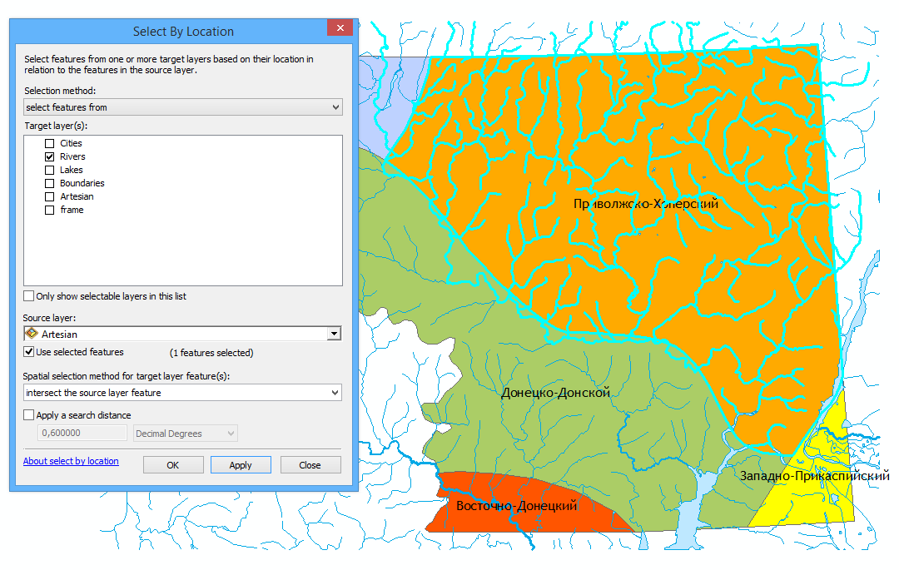
Включите редактирование слоя districts и выберите в его таблице первую строчку (нужно щелкнуть на заголовке слева от строки).
Откройте диалог пространственной выборки (Selection > Select by Location) и диалог атрибутивной выборки (Selection > Select by > Attributes). Расположите их рядом.
Выберите в диалоге пространственной выборки слой building_points в качестве выбираемого (target) и слой districts в качестве выбирающего (source). Отметьте галочкой пункт Use Selected Features --- это позволит выбирать с использованием уже выбранного района. Диалог примет следующий вид:
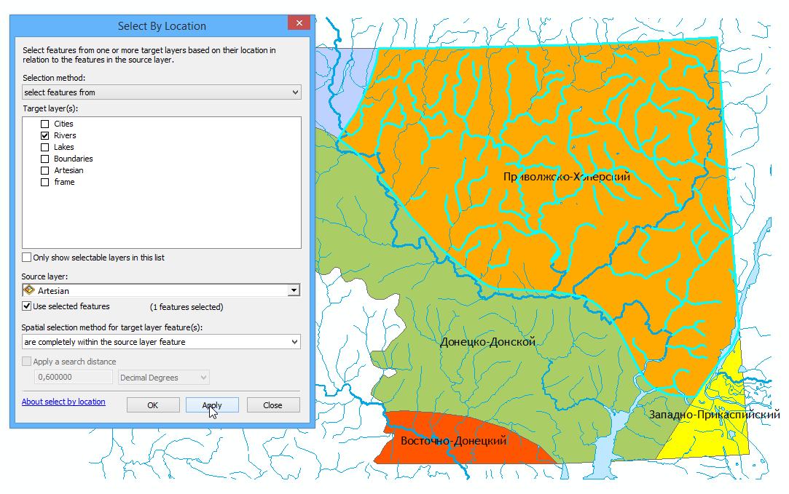
Нажмите кнопку Apply --- на карте должны выбраться здания, попавшие в пределы выбранного района. Не закрывайте диалог.
Перейдите в диалог атрибутивной выборки. В качестве выбираемого слоя укажите building_points и смените режим выборки на Select from current selection. В этом режиме будет осуществляться подвыборка среди уже выбранных объектов.
Введите следующий атрибутивный запрос, чтобы отобрать отели:
"type" = 'hotel'
Диалог примет следующий вид:
Нажмите Apply. Не закрывайте диалог атрибутивной выборки. На карте останутся выбранными только те здания текущего района, которые являются отелями. Чтобы ознакомиться с их списком, перейдите в атрибутивную таблицу слоя building_points и включите режим показа только выбранных объектов (Show selected records):
Внизу таблицы вы можете увидеть число выбранных объектов (на рисунке их 8, у вас может получиться другое число, если выделен другой район).
Внесите указанное число в атрибутивную таблицу слоя districts для текущего выбранного района:
Выберите следующий район в таблице слоя districts (на рисунке выше это будет район Islington).
Повторите шаги 5--10 для всех оставшихся районов. На всем протяжении выполнения этих операций у вас должны быть открыты таблицы обоих слоев, а также диалоговые окна атрибутивной и пространственной выборки.
Сохраните документ карты
Законченная таблица должна содержать в поле Hotels число отелей для каждого района:
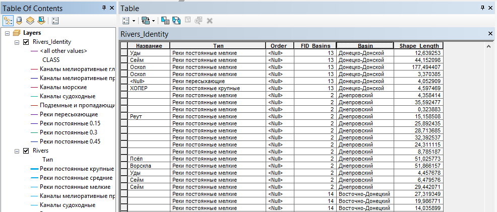
Снимок экрана №4. Атрибутивная таблица с числом отелей по каждому району
Создайте точки для размещения картодиаграмм числа отелей. Для этого
Щелкните правой кнопкой мыши по базе данных London.gdb и выберите пункт Make Default Geodatabase, чтобы результаты обработки складывались в эту базу.
Откройте ArcToolbox и запустите инструмент геообработки Data Management Tools > Features > Feature to Point.
Укажите в качестве Input Features слой Districts. Исправьте название выходного класса на Hotels. Диалог примет следующий вид:
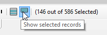
Нажмите ОК. Созданный слой точек будет добавлен на карту.
Создайте картодиаграммы на основе полученных точек. Для этого:
Включите режим Graduated Symbols на вкладке Symbology.
Выберите поле Hotels в качестве поля по которому будет производиться классификация.
Аналогично первому упражнению, отредактируйте границы классов. Предлагается выделить следующие классы: менее 5, 5-9, 10-19, 20-29, 30 и более. Для этого необходимо нажать кнопку Classify и заменить границы первых четырех классов на 4, 9, 19, 29. Максимальное значение не трогайте. Нажмите ОК.
Измените шаблон картодиаграммы на значок отеля. Для этого сначала прочтите разделы Подключение библиотек символов и поиск символов по названию в файле Описание функций. Нажмите кнопку Template на вкладке Symbology. Далее подключите библиотеку Civic и найдите в ней символ Hotel Information 1. Выберите его и нажмите ОК.
Отредактируйте подписи классов, изменив первый на «less than 5», а последний — на «30 and more».
Измените максимальный и минимальный размер значка на 48 и 16 соответственно. Диалог настройки символов примет следующий вид:
Требуется отредактировать оформление слоев, чтобы получить картографическое изображение хорошего стиля и качества.
Расположите слои в следующем порядке сверху вниз: Hotels — Roads — Water — Districts — InnerLondon.
В настройках слоя Districts:
Измените цвет заливки на серый 10%.
Измените символ обводки на Boundary, County. Увеличьте его толщину до 6 пунктов, а цвет установите серый 20%.
Замените стандартный шрифт подписей на более современный Euphemia, установите размер 8 и жирное начертание. Включите гало подписей, чтобы они хорошо читались на фоне.
Для слоя Water отключите обводку, оставив только голубую заливку.
Необходимо запретить подписям районов перекрывать значки картодиаграмм. Для этого откройте панель Labeling, откройте на ней меню Labeling и убедитесь, что включен механизм размещения подписей Maplex. Далее нажмите кнопку Label Weight Ranking:
В открывшемся диалоге исправьте значение Feature Weight для слоя Hotels на 1000.
Любому слою может быть присвоен вес от 0 до 1000. Чем выше вес, тем меньше вероятность, что слой будет перекрываться подписями.
Нажмите ОК. Картографическое изображение примет следующий вид:
Снимок экрана №5. Картодиаграммы числа отелей по городским районам
Оформите компоновку карты с легендой в соответствии со следующим образцом.
Для этого:
Установите масшта равным 1:100 000.
Для заголовка карты используйте также шрифт Euphemia синего цвета.
Под заголовок подложите прямоугольник серого цвета 30%.
Добавьте масштабную линейку в милях синего цвета.
Добавьте легенду к слою Hotels, отключите в ней названия самого слоя и единиц измерения, чтобы остались только плашки и их подписи.
Добавьте к фрейму данных рамку серого цвета 30%. Для этого в свойствах фрейма данных на вкладке Frame выберите границу Border и измените ее параметры. Выровняйте прямоугольник названия по верхнему правому углу карты.
По завершению оформления Экспортируйте карту в файл формата PNG в вашей директории Ex2 с разрешением 150 точек на дюйм, чтобы вставить ее в отчет.
Заполните отчетный файл и положите его в сетевую папку для проверки преподавателем.
Привязка и цифрование туристской карты
Введение
Цель задания --- знакомство с привязкой, трансформированием и цифрованием геоизображений.
Параметр
Значение
Поток
Общий
Теоретическая подготовка
Системы координат и проекции на картах, привязка геоизображений, трансформирование геоизображений, цифрование геоизображений. Методы трансформации: аффинное, проективное, полиномиальное, метод резинового листа (сплайны).
Практическая подготовка
Знание основных компонент интерфейса ArcGIS Desktop (каталог, таблица содержания, карта). Работа с базой геоданных. Настройка символики и подписей объектов.
Исходные данные
Растровые карты для привязки, база пространственных данных на территорию Швейцарии.
Результат
База данных со следующими слоями: границы природных зон; линии туристического маршрута; остановки вдоль маршрута; проект карты карта с компоновкой
Ключевые слова
Системы координат, проекции, трансформирование координат, пространственная привязка, цифрование, классы пространственных объектов, база пространственных данных,
Контрольный лист
[x] Привязать растровые карты к опорным данным
[x] Создать базу геоданных и классы пространственных объектов
[x] Наполнить классы пространственных объектов путем цифрования привязанных карт
[x] Наполнить атрибуты объектов значениями
[x] Разработать символику и подписи для слоев карты
[x] Подготовить компоновку карты
[x] Экспортировать карту в графический файл
Аннотация
Задание посвящено знакомству с привязкой растровых карт, созданием и наполнением баз пространственных данных путем цифрования, оформлением карт на их основе.
В задании предлагается привязать в координатную систему карту природных зон и карту туристического маршрута по территории Швейцарии. По результатам цифрования этих карт вы составите туристскую карту, показывающую прохождение маршрута по разным природным зонам.
Добавьте на карту слой Countries из базы данных упражнения 3.
Добавьте на карту растр SwissRegions.gif. Появится диалог, предупреждающий вас, что добавляемый файл не имеет пространственной привязки. Нажмите ОК:
Убедитесь, что контур страны отображается примерно посередине экрана.
Откройте панель инструментов Georeferencing. Выберите в меню команду Fit to Display, чтобы переместить непривязанный растр на середину области отображения:
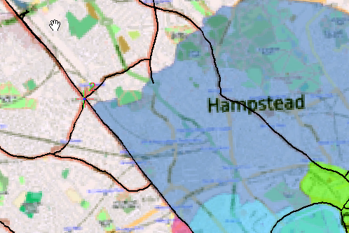
Сделайте растровый слой прозрачным на 50%.
Используя инструмент расстановки контрольных точек, укажите 3-6 соответствующих точек по границе страны на характерных выступах контура:
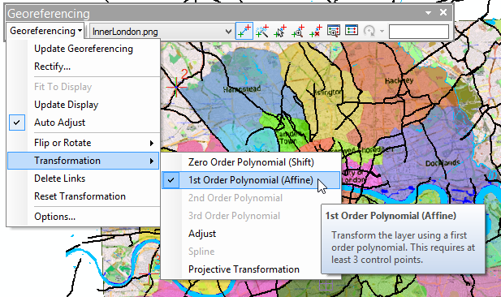
Выберите команду меню Georeferencing > Update Georeferencing, чтобы завершить привязку растра. При этом по умолчанию будет примененоаффинное преобразование с минимизацией среднеквадратической ошибки отклонения исходных и целевых координат:
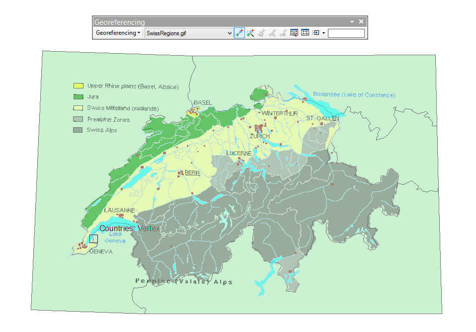
Добавьте на карту слой WineSafariRoute.jpg.
Выберите его в списке на панели Georeferencing:
Отключите слой SwissRegions.gif в таблице содержания.
Привяжите растр WineSafariRoute аналогично предыдущему растру, используя контрольные точки:
1.Выберите команду Georeferencing > Update georeferencing, чтобы завершить привязку второго растра.
Создание базы данных и классов пространственных объектов
Оставьте включенными только слои Regions, SwissRegions и Countries.
Уберите прозрачность у слоя SwissRegions.
Откройте сеанс редактирования для слоя Regions. Появится панель редактирования Editor, а также окно шаблонов объектов Create Features:
Щелкните на шаблоне объекта Regions в окне Create Features и выберите режим цифрования Polygon:
Оцифруйте регион Prealpine Zones в центре карты. По завершению дважды щелкните мышкой:
Чтобы появилась возможность пристыковать остальные регионы к границам стран, выделите в слое Countries все страны, кроме Швейцарии, скопируйте их в буфер обмена и вставьте в слой Regions:
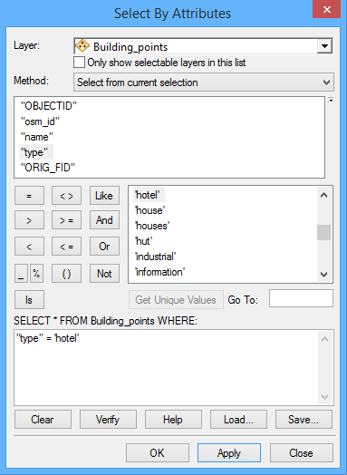
Выделите опять шаблон Regions в окне Create Features.
Используя режим Auto-Complete Polygon, оцифруйте границы оставшихся регионов в следующем порядке:
Сначала небольшие регионы, примыкающие к границам:
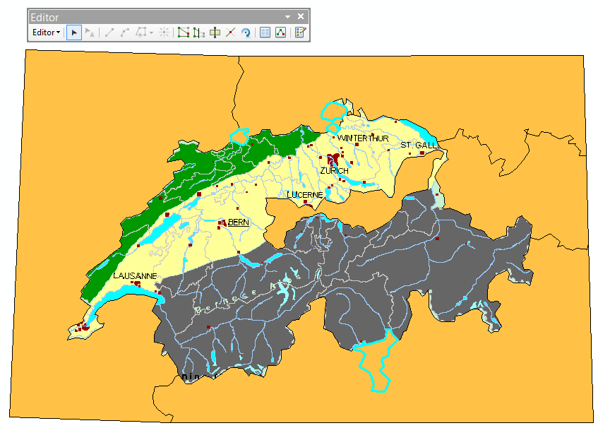
Затем область второго порядка (горы Юра):
Наконец, границу между центральными регионами:
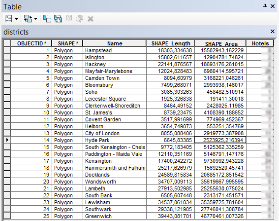
Выделите в слое Regions границы стран и удалите их.
Выберите команду Editor > Save Edits, чтобы сохранить результаты редактирования.
Оцифруйте объекты слоев Places и Routes, используя инструменты панели Сreate Features:
Начните с расстановки точек:
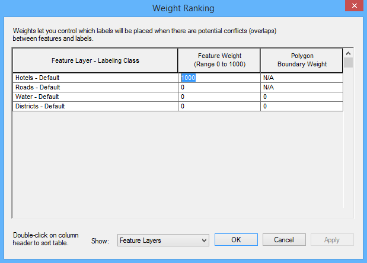
Увеличьте масштаб, чтобы были хорошо видны изгибы линий:
Проведите линии через получившиеся точки, повторяя контур исходной линии на растровой подложке. Каждую линию начинайте в точке и завершайте двойным щелчком в перекрестке:
Результат:
Заполните названия городов в слое Places.
Сохраните изменения и завершите сеанс редактирования.
Цель задания --- научиться использовать статистические данные для построения социально-экономических карт методом картограмм и картодиаграмм.
Параметр
Значение
Поток
Экономический
Теоретическая подготовка
Соединение таблиц в реляционных базах данных, внешний и внутренний ключ соединения, картограммы, картодиаграммы
Практическая подготовка
Знание основных компонент интерфейса ArcGIS Desktop (каталог, таблица содержания, карта). Работы с базой пространственных данных. Настройка символики и подписей объектов.
Исходные данные
Слои статистических единиц Евросоюза NUTS и таблицы показателей с портала NUTS
Результат
Карта количества транспортных средств в Швейцарии по единицам 3-го уровня, карта плотности и структуры населения Швейцарии по единицам 3-го уровня
Ключевые слова
Статистические данные, картограммы, картодиаграммы, соединение таблиц, визуализация статистических данных.
Контрольный лист
[x] Скачать слои административно-территориального деления с сайта NUTS.
[x] Скачать статистические таблицы NUTS на уровень 3.
[x] Присоединить таблицы статистики к слою административных единиц.
[x] Создать карту количества автомобилей способом картодиаграмм.
[x] Создать карту населения способом картограмм и секторных картодиаграмм.
Аннотация
В основе многих социально-экономических карт лежат статистические данные, которые обычно предоставляются в табличном виде. Задание посвящено знакомству с созданием карт в среде ГИС на основе табличных данных. В качестве примера используется официальная статистика Евросоюза, размещенная на сайте NUTS. Попутно при выполнении задании вы познакомитесь с операцией соединения таблиц.
На главной странице NUTS выберите в правой части окна пункт меню Statistics on regions and cities.
На сайте статистики NUTS выберите пункт Database, чтобы перейти к просмотру таблиц базы данных:
Найдите таблицу плотности населения по регионам Population density - NUTS 3 regions (demo_r_d3dens) и нажмите иконку слева от нее:
Нажмите Table Customization > Show, чтобы настроить содержание таблицы:
Установите режим Codes, чтобы в первом столбце отображались уникальные идентификаторы вместо названий единиц.
Нажмите кнопку Download, чтобы скачать таблицу:
В появившемся окне нажмите кнопку Download in Excel format, не меняя никаких настроек.
Скачайте аналогичным образом таблицу Stock of vehicles by category and NUTS 2 regions (tran_r_vehst), содержащую статистику по количеству зарегистрированных транспортных средств в регионах.
Найдите таблицу Population on 1 January by broad age groups and sex - NUTS 3 regions и откройте ее.
Нажмите кнопку Select Data в заголовке сайта:
В левой части окна выберите вкладку AGE, отметьте галочками все пункты и нажмите UPDATE, чтобы обновить таблицу:
Нажмите вкладку VIEW Table в верхней части окна, чтобы перейти к просмотру таблицы.
Схватите мышкой показатель Age и переместите его в таблицу на место показателя TIME:
В результате таблица должна приобрести искомую структуру, в которой показана структура населения по 3 категориям: до 15 лет (дети), 15-64 года (трудоспособные) и старше 64 лет (пенсионеры). Помимо этого есть поле Unknown для населения неустановленной возрастной категории:
Включите режим показа кодов вместо названий единиц.
Откройте ArcMap и создайте новый документ карты в каталоге Ex08.
Добавьте на карту слой Countries из базы данных предудыщего упражнения.
Добавьте на карту слой NUTS_RG_03M_2010 из базы данных, которую вы скачали с сайта. Она находится в каталоге PGDB/data:
Присвойте добавленному слою символ полигона без заливки с обводкой красного цвета и переименуйте его в NUTS.
Выделите в таблице слоя NUTS строку, в которой NUTS\_ID = “CH”, которая соответствует региону Швейцарии. Обратите внимание на то, что таблица может быть отсортирована не по алфавиту, а по статусу единицы:
Выделите все регионы, находящиеся внутри выделенной единицы, используя пространственный запрос со следующими параметрами:
Параметр
Значение
Слой искомых объектов
NUTS
Слой-источник
NUTS
Пространственный запрос
Are within the layer feature
Результат:
Создайте новый слой на основе выбранных объектов он получит название «NUTS selection».
Скопируйте слой NUTS selection, вставьте и назовите его Транспортные средства (NUTS 2).
С помощью определяющего запроса в окне конструктора запроса включите единицы 2-го уровня, введя строку:
\[STAT\_LEVL\_CODE\] = 2
При вводе строки используйте двойной щелчок на названии вместо ввода текста вручную.
Результат:
Добавьте на карту лист Data таблицы Vehicles и переименуйте его в Vehicles:
Раскройте таблицу слоя Транспортные средства, чтобы просмотреть состав атрибутивных полей. Таблица содержит поле NUTS_ID, содержащее уникальные идентификаторы единиц NUTS.
Присоедините таблицуVEHICLES к слою Транспортные средства, используя следующие параметры:
Параметр
Значение
Ключевое поле слоя
NUTS_ID
Присоединяемая таблица
VEHICLES
Ключевое поле таблицы
GEO
Раскройте таблицу слоя Транспортные средства (NUTS 2), чтобы убедиться в результате:
Включите для слоя способ градуированных символов (картодиаграммы), используя следующие параметры:
Параметр
Значение
Поле показателя
2011 год
Размер значка
От 15 до 60
Метод классификации
Равноинтервальный с шагом 200 (Defined Interval)
Фоновый символ
Без заливки
Цвет диаграммы выберите по своему вкусу. Диалог примет следующий вид:
Переименуйте название показателя в таблице слоев в «тысяч штук».
Скопируйте слой NUTS selection и назовите его «Плотность населения (NUTS 3)».
Включите единицы 3-го уровня, по аналогии с единицами 2-го уровня.
Добавьте на карту лист Data таблицы Density и переименуйте его в DENSITY.
Присоедините таблицу DENSITY к слою Плотность населения, используя те же поля, что и в случае слоя транспорта.
Включите для слоя метод отображения Graduated Colors (картограммы), используя следующие параметры:
Параметр
Значение
Поле статистики
2011 год
Цветовая шкала
От желтого к коричневому (по умолчанию)
Метод классификации
Дженкса (естественных интервалов)
Количество интервалов
5
Диалог свойств слоя примет следующий вид:
Переименуйте название показателя в таблице содержания в «чел/кв. км.».
Перенесите слой со статистикой транспорта так, чтобы он располагался поверх слоя плотности населения и увеличьте толщину обводки полигонов до 1.5 пиксела.
Результат позволяет одновременно показывать статистику по двум уровням иерархии:
Отображение структурных картодиаграмм по единицам 3-го уровня
Скопируйте слой NUTS selection и назовите его «Структура населения (NUTS 3)».
Включите единицы 3-го уровня.
Добавьте на карту лист Data таблицы Population и переименуйте его в POPULATION.
Присоедините таблицу POPULATION к слою Структура населения.
Определите русскоязычные псевдонимы полям на вкладке Fields:
Y_LT15 — моложе 15 лет,
Y_15_64 — от 15 до 64 лет,
Y_GE65 — старше 64 лет,
TOTAL — человек.
Результат:
Включите для слоя метод отображения Pie Charts (секторные диаграммы), используя следующие параметры:
Параметр
Значение
Поля статистики
моложе 15 лет, от 15 до 64 лет, старше 64 лет
Цвета
Выберите на свой вкус
Минимальный размер
5
Размер
По полю “Человек” (TOTAL)
Диалог примет следующий вид:
Результат:
Структура населения в целом очень похожа по регионам, при этом незначительно варьируется численность населения пенсионного и нетрудоспособного населения.
Включите слои плотности населения и структуры населения. Отключите слой транспортных средств.
Включите отображение названия слоя в легенде для слоя Структура населения.
Уберите незначащие нули в подписях классов слоя плотности населения, оставив один знак после запятой.
Результат:
Экспортируйте карту в графический файл формата PNG c разрешением 300 dpi.
Анализ распределения типов подстилающей поверхности
Введение
Цель задания --- научиться определять соотношение типов подстилающей поверхности по регулярной сетке для метеорологических моделей и моделей формирования поверхностного стока средствами ГИС-технологий.
Параметр
Значение
Поток
Гидрометпоток
Теоретическая подготовка
Оверлей пространственных объектов, соединение таблиц в реляционных базах данных, внешний и внутренний ключ соединения.
Практическая подготовка
Знание основных компонент интерфейса ArcGIS Desktop (каталог, таблица содержания, карта). Работы с базой пространственных данных. Настройка символики и подписей объектов. Владение базовыми ГИС-технологиями: пространственные и атрибутивные запросы, оверлей.
Исходные данные
Cлои картографической основы OpenStreetMap
Результат
Слой регулярной сетки, для каждой ячейки которого определено соотношение типов подстилающей поверхности. Картодиаграммы типов подстилающей поверхности. Проект карты с компоновкой.
Ключевые слова
Регулярная сетка, оверлей, соединение таблиц, картодиаграммы
Контрольный лист
[x] Построить регулярную сетку с заданными параметрами.
[x] Определить долю каждого типа подстилающей поверхности в площади ячеек.
[x] Присоединить получившиеся столбцы к слою регулярной сетки.
[x] Экспортировать результаты в текстовый файл.
[x] Визуализировать результат способом картодиаграмм.
[x] Оформить карту в режиме компоновки.
Аннотация
В задачах климатического и метеорологического моделирования, а также моделирования поверхностного стока важную роль играет характер подстилающей поверхности, а именно соотношение водопроницаемых и водоупорных поверхностей, соотношение леса, воды, открытых грунтов, городских территорий и т.д. Подготовка этих данных осуществляетсясредствами ГИС на основе картографических данных и данных дистанционного зондирования.
В задании вам предлагается сформировать регулярную сетку и с помощью оверлея определить соотношение типов поверхностей по каждой ячейке. Результаты далее экспортируются в текстовый файл для дальнейшего использования при моделировании, а на основе полученных данных оформляется карта соотношения типов поверхностей методом картодиаграмм.
Создайте новую базу геоданных. Для этого в окне каталога щелкните правой кнопкой мыши по вашей папке <Фамилия>\Ex09 и выберите New > File Geodatabase.
Назовите базу геоданных Ex09.
Щелкните по Ex09.gdb правой кнопкой мыши и выберите пункт Make Default Geodatabase. Эта команда указывает системе, что все результаты автоматической обработки данных следует помещать в выбранную базу геоданных.
Откройте ArcToolbox с помощью иконки на панели инструментов.
Запустите инструмент геообработки Data Management Tools > Feature Class > Create Fishnet и заполните его параметры следующим образом.
Параметр
Значение
Output Feature Class
<Ваша папка>/Ex09/Ex09.gdb/fishnet_1000
Template Extent
Same as Layer Buildings
Cell Size Width
1000
Cell Size Height
1000
Number of Rows
0
Number of Columns
0
Create Label Points
Нет
Geometry Type
POLYGON
Остальные параметры оставьте по умолчанию. Диалог инструмента примет следующий вид:
Нажмите ОК. После выполнения расчетная сетка будет добавлена на экран.
Разместите слой Fishnet поверх других слоев и смените его символ на черную линию толщиной 1 пункт.
Добавьте в нее поле, которое будет хранить значение доли водных объектов. Для этого выберите в главном меню таблицы команду Add Field… и заполните параметры появившегося диалога следующим образом:
Параметр
Значение
Name
Hydro
Type
Float
Остальные параметры оставьте по умолчанию.
Добавьте аналогичным образом поля Green, Industrial, Building, а также Other, которое будет использоваться для хранения доли прочих поверхностей.
Используя калькулятор поля, заполните каждое поле значением 0.
Соединение таблиц (join) — операция, в результате которой к одной таблице добавляются столбцы из другой таблицы. При этом требуется, чтобы строки добавленных столбцов присоединились к нужным строкам основной таблицы. Порядок строк и их число в обеих таблицах, как правило, не одинаковы. Чтобы установить соответствие между строками исходной и присоединяемой таблицы, необходимо иметь в каждой таблице поле с общими для них значениями. Это поле именуется ключевым.
Откройте слой Fishnet на редактирование.
Присоедините таблицу Fishnet_1000_Hydro к слою Fishnet. Для этого откройте свойства слоя Fishnet, перейдите на вкладку Joins & Relates и нажмите Add в группе Joins.
Укажите его параметры следующим образом:
Параметр
Значение
OID
Поле, содержащее уникальный идентификатор каждой записи
Fishnet_1000_Hydro
Присоединяемая таблица
OID
Поле в присоединяемой таблице, которое соответствует полю 1 в исходной
Keep Only Matching Records
Будут сохранены только те записи, для которых найдены совпадения поля OID
При указании свойств соединения отметьте флажком опцию Keep Only Matching records. Диалог соединения таблиц примет следующий вид:
Используя калькулятор поля, перенесите значения из присоединенного столбца PERCENTAGE в столбец Hydro слоя Fishnet. Для этого щелкните правой кнопкой мыши по заголовку столбца Hydro и выберите в контекстном меню команду Field Calculator. В появившемся диалоге введите следующий текст команды (см рисунок ниже):
[fishnet_1000_Hydro.PERCENTAGE]
Для подстановки названия поля в строку просто дважды щелкните на нем в списке. Обратите внимание на точечную нотацию. Текст до точки — это название таблицы. Текст после точки — название поля.
Диалог примет следующий вид:
Нажмите ОК. Значения будут скопированы их одного столбца в другой.
Повторите операцию соединения для таблиц Fishnet_1000_Green, Fishnet_1000_Industrial и Fishnet_1000_Buildings. После присоединения вычислите на их основе соответствующие поля в таблице Fishnet. Не забудьте перед каждым новым соединением удалять предыдущее.
Для использования данных при моделировании важно знать координаты центров ячеек.
Добавьте столбцы X и Y типа Long Integer в таблицу слоя Fishnet.
Вычислите их с помощью калькулятора геометрии. Для этого щелкните на столбце X правой кнопкой мыши и в контекстном меню выберите команду Calculate Geometry.
В появившемся диалоге выберите режим X Coordinate of Centroid и нажмите ОК:
Повторите операцию для столбца Y.
Сохраните документ карты.
После выполнения всех операций атрибутивная таблица слоя Fishnet должна принять приблизительно следующий вид:
Ответьте на вопросы в отчетном файле. После окончания положите ваш отчет в сетевую папку для проверки вашим преподавателем.
Анализ пространственных взаимосвязей методом оверлея на основе векторных данных
Введение
Цель --- научиться определять пространственную приуроченность двух явлений на основе процента взаимного покрытия их площадей (методом оверлея).
Поток
==Физпоток==
Теоретическая подготовка
Оверлей пространственных объектов, геометрическое определение вероятности как отношения мер (площадей), соединение таблиц в реляционных базах данных, внешний и внутренний ключ соединения.
Практическая подготовка
Знание основных компонент интерфейса ArcGIS Desktop (каталог, таблица содержания, карта). Работы с базой пространственных данных. Настройка символики и подписей объектов. Владение базовыми ГИС-технологиями: пространственные и атрибутивные запросы, оверлей.
Исходные данные
База данных ГИС «Сатино».
Результат
Таблица взаимного покрытия площадей типов рельефа и подтипов почв.
Ключевые слова
Базовые технологии ГИС, оверлей, геометрическая вероятность.
Контрольный лист:
[x] Добавить на карту слои типов почв и рельефа, оформить их
[x] Произвести оверлей слоев
[x] Произвести слияние данных и соединение таблиц
[x] Подсчитать процент покрытия площадей
Аннотация
Задание посвящено знакомству с пространственным анализом на основе векторных данных. Векторная модель представляет объекты в виде отдельных геометрических фигур с набором атрибутов. Она является объектно-ориентированной и удобна для анализа формы, размеров объектов, их взаимной конфигурации в пространстве. Одним из широко используемых методов анализа на основе векторных данных является оверлей.
При оверлее происходит наложение двух или более слоев, в результате чего образуется их графическая композиция. Полученные участки наследуют атрибуты от каждого слоя. Эта операция базируется на стандартных отношениях множеств, таких как пересечение, объединение и симметрическая разность.
С помощью оверлея можно, например, установить, к каким генетическим типам рельефа приурочены различные типы и подтипы почв. В общем случае оверлей позволяет установить, какие комбинации объектов встречаются в пространстве. В задании предлагается исследовать методом оверлея взаимосвязь типов рельефа и типов и подтипов почв.
В первую очередь при анализе данных следует провести их визуальную оценку, которая может натолкнуть на отыскание закономерностей во взаимном расположении объектов.
Скопируйте папку Ex04 из серверной директории в свой рабочий каталог с помощью Проводника.
Откройте ArcMap и в нем — окно Catalog.
Найдите базу геоданных Satino.gdb в своем каталоге Ex04 и перенесите на карту два тематических слоя: SoilTypes (Типы почв) и RelTypes (Типы рельефа) из группы Thematic.
Поместите слой Типы рельефа вниз таблицы содержания, откройте его свойства (двойным щелчком на названии) и перейдите на вкладку Symbology.
Выберите тип отображения Categories и в нем — режим Match to Symbols In a Style, который позволяет настроить символы в соответствии с заранее определенным стилем.
В качестве определяющего поля Value field выберите Тип рельефа. Далее нажмите кнопку Browse и выберите стиль Satino.style, лежащий в вашем каталоге Ex04. Нажмите кнопку Match symbols. Снимите флажок со строчки All other values. Окно свойств слоя должно принять вид, аналогичный представленному на рисунке. Нажмите ОК.
Рис. 2. Настройка способа изображения в соответствии с предопределенным стилем
Настройте отображение слоя Типы почв в виде полигонов без заливки с ярко красной обводкой толщиной 1.5 пиксела. Чтобы сделать полигон без заливки, необходимо выбрать в меню Fill Color режим No Color. Нажмите ОК:
Рис. 3. Выбор режима отображения полигонов без заливки
Выберите инструмент идентификации и щелкните в пределах карты на любом полигоне.
Переведите инструмент идентификации в многослойный режим. Для этого в окне Identify раскройте верхний список Identify From и выберите пункт All layers. Попробуйте идентифицировать полигоны в разных участках карты, обращая внимания на информацию, которая отображается в окне идентификации.
Рис. 4. Переключение инструмента идентификации в многослойный режим
==✔︎ Проанализируйте совмещенное изображение границ типов почв и рельефа. Есть ли какие-то совпадения или подобия их рисунков в пределах речных долин, междуречий, малых эрозионных форм?==
Теперь, когда данные исследованы визуально и путем идентификации, можно перейти к их анализу с помощью оверлея. Предварительно следует организовать рабочее пространство, чтобы результаты анализа хранились в структурированном виде и не смешивались с базовыми слоями.
Поскольку в процессе оверлея будет создан новый слой (а затем еще и другие), возникает задача хранения вновь создаваемых данных. База геоданных Satino содержит базовые слои, и производные результаты лучше помещать в другое хранилище.
Сохраните документ карты в свой каталог Ex04 под именем Ex04_Оверлей.mxd
Откройте окно Catalog и обратите внимание на то, в нем наверху появился домашний каталог под именем Home - Фамилия/Ex04.. Раскройте его.
Домашний каталог --- директория файловой системы, в которой хранится документ карты, с которым вы работаете в данный момент. Обычно в том же каталоге стараются хранить и сами данные (если они не берутся из внешней СУБД), чтобы избежать путаницы.
Щелкните правой кнопкой мыши по домашнему каталогу и выберите New > File Geodatabase для того, чтобы создать новую базу геоданных.
Назовите ее Ex04.gdb
Щелкните по Ex04.gdb правой кнопкой мыши и выберите пункт Make Default Geodatabase. Эта команда указывает программе, что все результаты обработки данных следует помещать в выбранную базу геоданных.
Оверлей осуществляется в ArcGIS с помощью инструментов геообработки.
Геообработка (geoprocessing) в терминологии ArcGIS — это анализ и преобразование пространственных данных. Доступ к инструментам геообработки осуществляется через окно ArcToolbox, где они сгруппированы по назначению. Некоторые наборы инструментов, такие как Spatial Analyst и 3D Analyst, являются дополнительными модулями ArcGIS, предназначенными для решения специализированного круга задач: растровый анализ, трехмерный анализ, сетевой анализ и т.д.
Откройте ArcToolbox с помощью красной кнопки на панели инструментов.
Раскройте группу инструментов Analysis Tools > Overlay. Здесь можно найти различные режимы оверлея.
==✔︎ Обсудите с преподавателем режимы оверлея Intersect, Symmetrical Difference и Union. Чем они отличаются друг от друга?==
Запустите инструмент Intersect, который ищет геометрическое пересечение нескольких слоев. Изучите пояснительную иллюстрацию в правой части окна.
Перенесите из таблицы содержания в список Input features слой Типы почв, затем слой Типы рельефа
Обратите внимание на то, что система автоматически определила адрес и название выходного класса объектов в следующем виде:
Замените SoilTypes_Intersect на SoilsRelief_Intersect, чтобы из названия было ясно, что с чем пересекается.
Параметр Join Attributes оставьте ALL. В этом режиме результат оверлея унаследует все поля из обоих слоев.
Диалог инструмента Intersect примет вид, аналогичный представленному на рисунке. Запустите вычисления, нажав кнопку ОК.
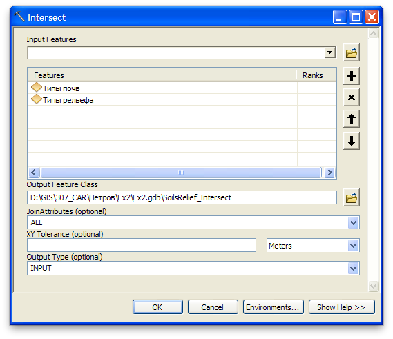Рис. 5. Диалог инструмента Intersect
Дождитесь, пока в таблицу содержания добавится слой SoilsRelief_Intersect и переименуйте его в Комбинации почвы-рельеф. Для этого выделите слой в таблице содержания и нажмите F2 на клавиатуре, либо найдите пункт Rename в контекстном меню.
Поместите полученный оверлеем слой между слоями типов почв и рельефа, и настройте его отображение в виде полигона без заливки с черной обводкой толщиной 4 пиксела. Там, где границы совпадают с контурами типов рельефа, они будут черного цвета, а там где они совпадают с контурами типов почв, будет красная линия с черной обводкой.
==✔︎ Какие поля содержатся в атрибутивной таблице полученного слоя? Сравните его границы с границами двух исходных слоев. Обсудите результат с преподавателем==
Слияние результатов пересечения с целью получения показателя пространственной связи
Поскольку каждый полигон в оверлейном слое содержит значение типа/подтипа почвы и типа рельефа, появляется возможность установить приуроченность типов и подтипов почв к определенным типам рельефа.
Чтобы подсчитать долю каждого типа рельефа в площади каждого подтипа почв, необходимо просуммировать площади каждой их уникальной комбинации. Например, дерново-карбонатные выщелоченные почвы (Д-в-к) на крутых эрозионных склонах встречаются в пределах Сатинского полигона в виде 6 разрозненных участков, имеющих некоторую суммарную площадь. Эта площадь, деленная на суммарную площадь почв подтипа Д-в-к даст вероятностный критерий приуроченности почв Д-в-к к крутым эрозионным склонам. То же самое касается остальных комбинаций подтипов почв и типов рельефа.
С точки зрения рабочих процессов ГИС, операцию следует разбить на 5 шагов:
подсчет суммарной площади каждой комбинации подтипа почв и типа рельефа;
подсчет суммарной площади каждого подтипа почв;
добавление поля, в которое будет записана процентная доля;
соединение таблиц комбинаций и подтипов почв по названию подтипа почв;
деление площади комбинации на площадь подтипа почв и запись результата в соответствующее поле.
Объединение разрозненных объектов, обладающих одинаковым набором атрибутов, осуществляется с помощью операции слияния (Dissolve). Причем, если объекты примыкают друг к другу, граница между ними будет стерта, а если объекты разнесены в пространстве, на выходе получится сложный составной объект (Multipart feature), состоящий из нескольких полигонов. Слияние — это один из методов генерализации.
Подсчет суммарной площади каждой комбинации подтипа почв и типа рельефа
Откройте в ArcToolbox инструмент геообработки Data Management Tools > Generalization > Dissolve. Изучите пояснительный рисунок в правой части окна интерфейса.
Выберите в качестве значения параметра Input Features слой Комбинации почвы-рельеф
В списке Dissolve Fields следует отметить поля SoilType, SoilSubtype и RelType, тем самым можно будет найти все уникальные комбинации подтипов почв и типов рельефа.
Поле SoilType необходимо отметить для того, чтобы в таблице результирующего слоя сохранилась информация о типах почв. Это не повлияет на сам результат, поскольку количество комбинаций типа и подтипа почв равно количеству самих подтипов.
Введите название выходного класса SoilsRelief_Intersect_Dissolve. Диалог инструмента Dissolve примет вид, аналогичный представленному на рисунке ниже.
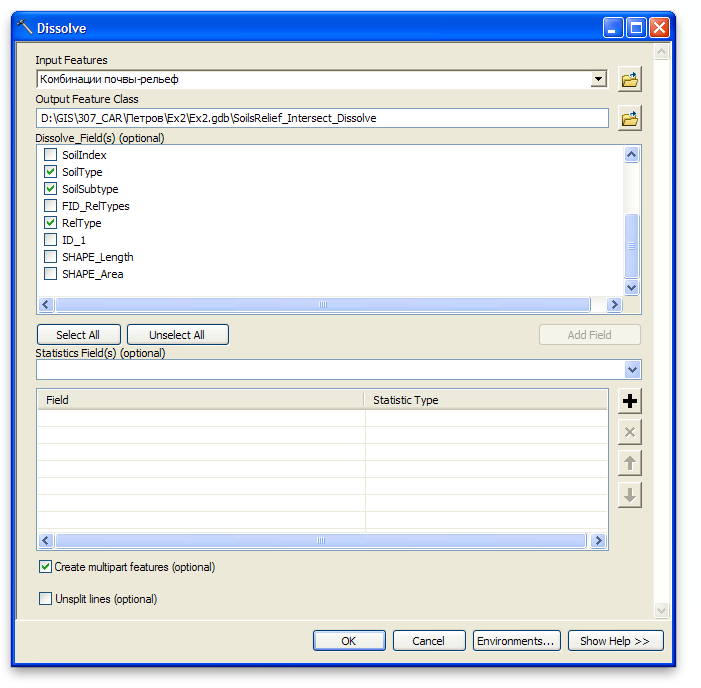Рис. 6. Инструмент Dissolve, выполняющий слияние объектов по набору атрибутов
Остальные параметры оставьте по умолчанию и нажмите ОК.
После того как результат появится в таблице содержания, назовите полученный слой Слияние комбинаций почвы-рельеф.
Выберите в качестве Input Features слой Типы почв.
В списке Dissolve fields выберите поля SoilType и SoilSubtype.
Введите название выходного класса SoilTypes_Dissolve.
Остальные параметры оставьте по умолчанию и нажмите ОК.
Назовите полученный слой Слияние подтипов почв. В данном слое в результате операции слияния каждый подтип почв будет представлен единственным объектом, а в его поле Shape_Area будет записана суммарная площадь данного подтипа
Отключите этот слой в таблице содержания.
Добавление нового поля для результирующих значений
Для расчета пространственной взаимосвязи необходимо поделить площадь каждой комбинации на площадь соответствующего подтипа почв. Эти площади находятся сейчас в разных таблицах — Слияние подтипов почв и Слияние комбинаций почвы-рельеф. Их можно соединить по полю Подтип.
Соединение таблиц (table join) — операция, в результате которой к одной таблице временно добавляются столбцы из другой таблицы. Чтобы установить соответствие между строками исходной и присоединяемой таблицы, необходимо иметь в каждой таблице поле с общими для них значениями. Например, это может быть числовой код объекта или, как в нашем случае, подтип почв.
Перейдите в контекстное меню слоя Слияние комбинаций почвы-рельеф и выполните команду Joins and Relates > Join. Внимательно изучите содержимое появившегося диалога.
Выберите Подтип в качестве поля 1, по которому будет делаться соединение:
Рис. 7. Диалог настройки соединения таблиц
Выберите Слияние подтипов почв в качестве присоединяемой таблицы 2.
Выберите Подтип в качестве поля, по которому будет присоединяться таблица Слияние подтипов почв.
Нажмите OK.
==✔︎ Что изменилось в атрибутивной таблице слоя Слияние комбинаций почвы-рельеф?==
Щелкните правой кнопкой мыши на заголовке поля Percent, вызовите Field Calculator и введите туда указанное ниже выражение для подсчета процента площади. Вы можете просто набрать 100 *, а затем дважды щелкнуть по названию каждого поля в списке, чтобы не вписывать их вручную:
Калькулятор поля (field calculator) используется для вычисления значений атрибутов. Вы можете, например, умножить значение одного поля на 100 и записать в другое, соединить несколько текстовых полей в одно предложение или просто скопировать значение одного поля в другое.
Нажмите ОК. Посмотрите получившиеся значения в поле Percent.
Удалите соединение таблиц через контекстное меню слоя Слияние комбинаций почвы-рельеф командой Joins and Relates > Remove Joins > Remove All joins.
В атрибутивной таблице слоя Слияние комбинаций почвы-рельеф щелкните на любом поле правой кнопкой мыши и выберите команду Advanced Sorting.
Выберите в качестве первого поля Подтип и установите порядок сортировки Ascending (в сторону увеличения).
Выберите в качестве второго поля Percent и порядок сортировки Descending (в сторону уменьшения).
Растяните таблицу таким образом, чтобы хорошо было видно поле типа почв, поле подтипа почв, поле типа рельефа и поле Percent.
Нажмите ОК.
Отключите оба слоя слияния в таблице содержания.
Сохраните документ карты.
Получившаяся таблица отображает для каждого подтипа почвы типы рельефа в порядке уменьшения их доли в площади. Первая строка для каждого подтипа почвы устанавливает наиболее вероятный тип рельефа.
==✔︎ Обсудите с преподавателем результаты анализа. Какие почвы показывают наибольшую связь с определенным типом рельефа?==
Отсортируйте таблицу только по убыванию значений в поле Percent (нажав дважды и еще раз дважды на нем) и выделите строки, в которых значение процента в поле Percent более 75.
Скомпонуйте окно приложения так, чтобы было видно целиком карту, а также выделенные в таблице строки, а также столбцы Тип, Подтип, Тип рельефа и поле Percent. Окно примет вид, аналогичный представленному на рисунке:
Рис. 8. Результаты оверлейного анализа
Снимок экрана №1 --- Окно карты и результирующая таблица
Заполните отчетный файл и положите его в сетевую папку для проверки преподавателем.
Выбор оптимального местоположения средствами растрового анализа
Введение
Цель — овладеть основами растрового анализа в ГИС на примере решения задачи поиска оптимального местоположения для размещения объектов.
Поток
Физический, Экономический
Теоретическая подготовка
Растровая модель пространственных данных, вычисление евклидова расстояния на плоскости, методы классификации числовых рядов, оверлей с весовыми коэффициентами (взвешенный оверлей).
Практическая подготовка
Знание основных компонент интерфейса ArcGIS Desktop (каталог, таблица содержания, карта). Инструменты геообработки. Работы с базой пространственных данных. Настройка символики и подписей объектов. Базовые технологии ГИС (пространственные и атрибутивные запросы, оверлей).
Исходные данные
База данных ГИС «Сатино».
Результат
Слой базы пространственных данных, содержащий участок с наиболее оптимальной суммой критериев
Ключевые слова
Классификация числовых рядов, растровая модель данных, взвешенный оверлей, евклидово расстояние.
Контрольный лист:
[x] Конвертировать слой землепользования в растровое представление
[x] Построить и классифицировать растр углов наклона рельефа
[x] Построить и классифицировать растры расстояний до водотоков и домов
[x] Конвертировать класс с максимальной суммой баллов в векторное представление и выбрать участок, удовлетворяющий критерию минимальной площади.
Аннотация
В первых заданиях вы познакомились с редактированием векторных данных. Для ряда практических задач более удобным оказывается растровое представление. Оно хорошо подходит для анализа географического пространства, которое обладает постоянно меняющимися характеристиками среды. Растровая модель топологически неразрывна, что позволяет моделировать различные поля и перенос вещества в пространстве из одной ячейки в другую. В силу своей регулярности растровая модель проста в обработке, поскольку все операции можно унифицировать, ориентируясь на матрицу ячеек. В частности, к растровым слоям удобно применять операции алгебры карт, такие как сложение, вычитание, суммирование --- что и используется данном задании.
Вам предстоит решить задачу выбора оптимального местоположения участка для строительства производственного объекта. Критерии выбора следующие:
оптимальные зоны для размещения — открытые пространства, такие как выгоны, пустыри, луга, вырубки и т.д;
предельный угол наклона рельефа — 12,5°;
участок должен располагаться в непосредственной близости от автомобильных дорог;
участок должен располагаться в непосредственной близости от крупных водотоков, поскольку требуется водоснабжение;
необходимая площадь участка — не менее 30 000 м2.
Таким образом, в анализе участвует 5 факторов: тип землепользования, углы наклона рельефа, расстояние до автодорог, расстояние до водотоков, площадь участка. Поскольку расстояния и углы наклона меняются в пространстве непрерывно, для их анализа удобно использовать растровое представление. К нему же необходимо привести типы землепользования, применив векторно-растровое преобразование. Каждый из полученных слоев далее следует классифицировать по балльной шкале от 1 до 10 и затем получить взвешенную сумму баллов по всей территории. Оптимальное местоположение будет соответствовать участкам с максимальной суммой баллов. Среди них необходимо удовлетворяющие критерию минимальной площади.
Для выполнения анализа и преобразований данных вы будете использовать инструменты геообработки.
Геообработка (geoprocessing) в терминологии ArcGIS — это анализ и преобразование пространственных данных. Инструменты геообработки находятся в ArcToolbox, где они сгруппированы по функциональному назначению.
Скопируйте папку Ex3 из каталога упражнений на сервере в свой локальный рабочий каталог на диске D с помощью Проводника. Раскройте ее после копирования на своем компьютере.
Откройте документ под названием Ex3_Selection.mxd.
Создайте новую базу геоданных. Для этого откройте окно ArcCatalog, правой кнопкой мыши щелкните вверху по вашей папке Ex3 и выберите New > File Geodatabase.
Назовите ее Ex3.gdb.
Щелкните по Ex3.gdb правой кнопкой мыши и выберите пункт Make Default Geodatabase. Эта команда указывает приложению, что все результаты автоматической обработки данных следует помещать в выбранную базу геоданных.
Преобразование слоя типов землепользования в растровое представление
Поскольку в анализе будут участвовать растровые слои с различными расстояниями и углами наклонов, необходимо и данные по землепользованию привести к растровому виду.
Найдите в базе геоданных Satino.gdb слой LandUse в группе Thematic и перенесите его в таблицу содержания карты.
Визуализируйте слой Землепользование способом категорий, используя поле Тип участка (Land_Type). Выбирать цвета не требуется, т.к. далее вы будете использовать растровый слой.
Диалоговое окно примет вид, аналогичный представленному на рисунке.
Рис. 1. Настройка способа изображения для типов землепользования
Нажмите ОК, чтобы завершить настройку способа изображения.
Откройте ArcToolbox с помощью кнопки на панели инструментов.
Запустите инструмент Conversion Tools > To Raster > Polygon to Raster.
Заполните его параметры следующим образом:
Параметр
Значение
Input Features
Землепользование
Value Field
Land_Type
Output Raster Dataset
<Фамилия>\Ex3\Ex3.gdb\LandUse_R
Cellsize
2,5
В поле Output point features вам потребуется заменить только название класса объектов (LandUse_R).
Диалог примет следующий вид:
После завершения работы инструмента конвертации в таблицу содержания добавится новый слой.
Выделите его, нажмите F2 и переименуйте в Землепользование (растр).
Дважды щелкните по созданному слою и перейдите на вкладку Symbology.
Смените поле отображения Value field на Land_type. В легенду автоматически подставятся все найденные значения. Присвойте классам подходящие цвета в соответствии с их типом.
Удалите векторный слой Землепользование из таблицы содержания. Далее в этом упражнении он не понадобится.
Нажмите ОК. Переместите растровый слой наверх и нажмите кнопку . Окно карты примет вид, аналогичный представленному на рисунке:
Рис. 3. Визуализация типов землепользования в растровом виде
Снимок экрана №1. Растровый слой типов землепользования
Увеличьте масштаб до величины порядка 1:2 000. Изучите отличия векторного и растрового слоя, поочередно отключая и включая векторный слой. Чем они отличаются?
Найдите слой DEM в базе геоданных Satino.gdb и перенесите его в таблицу содержания карты. Поместите его вниз таблицы содержания под слой Землепользование (растр).
Запустите инструмент вычисления углов наклона Spatial Analyst Tools > Surface > Slope и заполните его параметры следующим образом:
Параметр
Значение
Input Raster
DEM
Output Raster
<Фамилия>\Ex3\Ex3.gdb\Slope
Остальные параметры в диалоге оставьте по умолчанию. Его окно примет вид, аналогичный представленному на рисунке:
Рис. 6. Инструмент Slope для вычисления углов наклона
Нажмите ОК, чтобы запустить расчеты.
После того как слой углов наклона Slope добавится в таблицу содержания, переименуйте его в Углы наклона.
Обратите внимание на то, что значения углов были классифицированы на несколько интервалов, которым был присвоен цвет:
Эта классификация является динамической (то есть, применяется при визуализации слоя и никак не отражается на его хранении) и при желании ее можно поменять ее на вкладке Symbology в свойствах слоя.
Чтобы определить участки, наиболее подходящие с точки зрения транспортной доступности, можно построить растр, в каждой ячейке которого будет содержится расстояние (евклидово) до ближайшей дороги.
Добавьте на карту слой дорог General/Roads из базы геоданных Satino.
Откройте пункт меню Selection > Select by attributes, выберите для выборки слой Дороги и тропы и в конструктор запроса введите следующее выражение:
"Description" = 'Асфальтированные' OR "Description" = 'Проселочные'
Выборка позволит учитывать для при анализе только дороги (в слое также содержатся тропы). Окно запроса примет вид, аналогичный представленному на рисунке. Нажмите ОК:
Рис. 4. Выборка автомобильных дорог в диалоге атрибутивного запроса
Постройте растр расстояний для выбранных дорог. Для этого запустите инструмент Spatial Analyst Tools > Distance > Euclidian Distance.
Выберите в качестве параметра Input Raster or Feature слой Roads. Остальные параметры оставьте по умолчанию. Диалог примет следующий вид:
Нажмите ОК. Получившийся растр будет добавлен на карту. Переименуйте его в Расстояния до дорог.
Очистите выборку в слое дорог, нажав кнопку Clear Selected Features на панели инструментов Tools. Окно приложения примет следующий вид (обратите внимание на то, что расстояния были вычислены не для всех дорог, а только для выбранных):
Водотоки
Выполните расчет расстояний до водотоков самостоятельно, руководствуясь краткой схемой:
Добавить на карту слой General/WaterPolygon (Гидрография (Полигоны))
Выбрать вручную крупные реки (Протва, Исьма) с помощью инструмента Select Features By Rectangle на панели инструментов Tools. Чтобы выбрать последовательно несколько объектов, вы можете зажать клавишу Shift:
Запустить инструмент Euclidian Distance для слоя Гидрография (полигоны). Все параметры оставить по умолчанию.
Получившийся после расчетов слой переименовать в Расстояния до водотоков. Если все выполнено правильно, то результат должен быть примерно следующим:
Поскольку в анализе будет участвовать несколько факторов, необходимо привести их значения к общей балльной шкале от 1 до 10. Для этого используется классификация растра.
Запустите инструмент классификации Spatial Analyst Tools > Reclass > Reclassify.
Выберите в качестве Input raster слой Углы наклона.
Нажмите кнопку Classify..., чтобы настроить классы.
Раскройте список методов классификации вверху диалогового окна.
Какие методы классификации доступны в инструменте Reclass? Какие принципы в них заложены? Попробуйте выбрать разные методы классификации и посмотрите, как меняются границы классов.
Выберите режим естественных интервалов Natural Breaks (Jenks) и установите количество интервалов равным 10. Окно диалога примет вид, аналогичный представленному на рисунке.
Рис. 5. Классификация значений углов наклона методом естественных интервалов
Метод естественных интервалов минимизирует дисперсию внутри каждого класса и максимизирует отличия между классами
Нажмите ОК, чтобы завершить настройку метода классификации.
Нажмите кнопку Reverse new values, чтобы инвертировать значения классов (меньшие углы наклона должны иметь больший вес).
Остальные параметры оставьте по умолчанию. Окно диалога примет вид, аналогичный представленному на рисунке:
Рис. 6. Инструмент Reclassify
Нажмите ОК, чтобы запустить выполнение инструмента.
После того как в таблицу содержания будет добавлен слой классифицированных углов наклона, переименуйте его в Углы наклона (классы).
Через свойства слоя на вкладке Symbology присвойте классам шкалу от зеленого к красному, так чтобы класс 1 был красным, а класс 10 был зеленым. Если у вас получилось наоборот, нажмите мышкой на заголовке столбца Symbol и выберите в меню Flip Colors (сменить порядок цветов на противоположный):
Рис. 9. Функция Flip Colors
Нажмите ОК в диалоге свойств слоя, чтобы закрыть его. Изображение должно принять следующий вид:
Запустите инструмент Reclassify. Выберите в качестве Input raster слой Расстояния до дорог.
Нажмите кнопку Classify..., чтобы настроить классы.
Настройте метод классификации на Geometric Intervals, и установите число интервалов равным 10. Метод геометрических интервалов позволяет сконцентрировать зоны с высокими баллами на небольшом расстоянии от дорог. Диалог настройки классификации примет вид, аналогичный представленному на рисунке. Нажмите ОК:
Рис. 11. Классификация расстояний до дорог методом геометрических интервалов
Нажмите кнопку Reverse New Values, чтобы инвертировать номера классов и максимальный балл получили классы с малыми расстояниями.
Переименуйте выходной класс в Reclass_Euc_Roads. Остальные параметры оставьте по умолчанию. Диалог инструмента примет вид, аналогичный представленному на рисунке:
Рис. 12. Инструмент Reclassify для классификации расстояний до дорог
Запустите вычисления, нажав кнопку ОК.
После того, как классифицированный растр расстояний до дорог появится на карте, переименуйте его в Расстояния до дорог (классы).
Настройте отображение нового слоя на красно-зеленую шкалу, как обычно.
Удалите из таблицы содержания оригинальный слой Расстояния до дорог.
Водотоки
Выполните классификацию самостоятельно в соответствии со следующим планом:
Запустить инструмент Reclassify для слоя Расстояния до водотоков.
В качестве метода классификации выбрать Quantile (квантили), число классов — 10. Исправьте в столбце справа последнее значение на 2400, чтобы заведомо включить максимум.
Инвертировать номера классов
Переименовать выходной слой в Reclass_Euc_Water.
Получившийся слой назвать Расстояния до водотоков (классы) и раскрасить в стандартной зелено-красной шкале.
Удалить из таблицы содержания оригинальный слой Расстояния до водотоков.
Снять выборку с объектов гидрографии.
Сохранить карту.
Снимок экрана №3. Классифицированный растр расстояний до водотоков
Нахождение мест с наилучшей комбинацией факторов с помощью взвешенного оверлея
Наилучшие участки соответствуют территориям, где сумма баллов по всем факторам максимальна. Соединение значений (в том числе и сложение) по нескольким слоям, располагающимся друг над другом, осуществляется с помощью растрового оверлея.
Исправьте значения полей From, To и By на 1, 10 и 1, соответственно. Тем самым вы укажете, что необходимо полученные суммы ранжировать по баллам с 1 до 10 с шагом в 1 балл.
Щелкните на кнопке добавления слоя вверху диалога.
В появившемся диалоге выберите Углы наклона (классы) в списке Input Raster. Поле Input field поставьте по умолчанию. Нажмите ОК:
Рис. 13. Диалог выбора слоя для взвешенного оверлея
Обратите внимание на появившуюся таблицу: она выводит значения классов, взятые из слоя (столбец Field), и позволяет сменить их (столбец Scale Value) при выполнении оверлея.
Необходимо запретить строительство на участках с углами наклона более 12,5 градусов. Такие углы наклона возможны в классах 1-5 (в соответствии с проведенной классификацией).
Щелкните на ячейке поля Scale Value напротив 1 класса и выберите из списка значение Restricted (запрещен).
Повторите эту операцию для 2, 3, 4 и 5 класса. Диалог инструмента примет вид, аналогичный представленному на рисунке:
Рис. 14. Настройка параметров классов для слоя углов наклона рельефа
Добавьте в таблицу оверлея слои Расстояния до дорог (классы) и Расстояния до водоемов (классы) с помощью кнопки . Не меняйте значения классов в таблице.
Сверните таблицы классов, нажав кнопку в начале каждой строки. Диалог примет следующий вид:
Рис. 15. Диалог взвешенного оверлея после добавления первых трех слоев.
Добавьте в таблицу оверлея слой Землепользование (растр). Однако на этот раз выберите для него в качестве поля со значениями классов Land_Type:
Рис. 16. Добавление в таблицу оверлея слоя Землепользование (растр).
Присвойте различным классам земель веса соответственно Рис. 17. Обратите внимание на то, что больший вес имеют территории, более доступные для размещения площадки. Заболоченные земли и объекты гидрографии необходимо запретить для выбора, указав им класс Restricted. В эту же категорию попадают участки, где нет данных.
Рис. 17. Настройка значений класса пригодности для слоя Землепользование (растр)
Осталось определиться с тем, какие факторы будут иметь максимальный вес. Заказчик решил, что приоритет в наборе факторов следует отдать близости к автодорогам. Среди остальных факторов меньше внимания можно уделить углам наклона рельефа, поскольку они уже были ограничены параметром Restricted.
Заполните веса в колонке %Influence следующим образом:
Углы наклона — 15
Расстояния до дорог — 35
Расстояния до водоемов — 20
Землепользование — 30.
После заполнения весов диалог примет вид, аналогичный представленному на рисунке:
Рис. 18. Диалог инструмента Weighted Overlay после окончательной настройки параметров
Нажмите ОК, чтобы запустить вычисления.
После того, как результат оверлея будет добавлен в таблицу содержания, переименуйте слой в Комбинация факторов.
Примените к полученному слою стандартную красно-зеленую шкалу.
Изучите получившееся изображение. Насколько оно отвечает тем требованиям, которые выдвигались при анализе факторов? Отмечается ли близость темно-зеленых участков в дорогам, водоемам? Каким цветом закрашены участки с крутыми склонами?
В качестве потенциальных мест на размещение площадки следует выбрать 10-балльные участки. Затем можно конвертировать эти участки в векторный формат, чтобы получить границы.
Откройте атрибутивную таблицу слоя комбинаций и выделите строку со значением 10. Пикселы этого классы подсветятся на карте.
Запустите инструмент Conversion Tools > From Raster > Raster to Polygon.
Выберите в качестве входного слой Комбинация факторов и нажмите ОК.
Переименуйте получившийся слой в Потенциальные участки. Обратите внимание, что полигональные объекты были построены только для тех пикселов, которые вы выделили на экране.
Смените цвет выделенных полигонов на ярко-желтый и нажмите кнопку Full extent, чтобы вся карта поместилась на экран.
Выбор участков, имеющих необходимую площадь
Для выбора участков по площади следует использовать атрибутивный запрос
Откройте пункт меню Selection > Select by attributes, выберите для выборки слой Потенциальные участки.
В конструктор запроса введите следующее выражение:
"Shape_Area" > 30000
Нажмите ОК. Результат вашей работы должен быть похож на рисунок ниже:
Рис. 19. Результат анализа: ярко-желтые полигоны участков, оптимальные для строительства. Выделен полигон, имеющий необходимую площадь более 30 000 м2
Снимок экрана №4. Результат анализа: выбранный участок
Заполните отчетный файл и положите его в сетевую папку для проверки преподавателем.
Сетевой анализ
Введение
Цель --- научиться решать различные задачи логистики и оптимизации размещения с помощью сетевого анализа.
Поток
==Экономико-географический==
Теоретическая подготовка
Понятие о сетевой модели данных, граф дорожной сети, сетевой анализ и его основные задачи: кратчайший маршрут, зона обслуживания, ближайший пункт обслуживания, размещение-распределение, управление парком транспортных средств.
Практическая подготовка
Знание основных компонент интерфейса ArcGIS Desktop (каталог, таблица содержания, карта). Инструмент геообработки. Настройка символики и подписей объектов. Выделение объектов на карте. Пространственные и атрибутивные запросы. Оверлей. Инструменты ArcToolbox.
Исходные данные
Cлои картографической основы OpenStreetMap, граф дорожной сети на основе данных OpenStreetMap на территорию Москвы.
Результат
Маршрут до магазина. Зоны обслуживания магазина от 1 до 5 минут. Маршруты до ближайших магазинов. Результат размещения магазинов. Зонирование территории по принадлежности к магазинам. Проект карты зонирования с компоновкой
Ключевые слова
Сетевой анализ, граф дорожной сети, оптимизация размещения, логистика.
Контрольный лист
[x] Добавить на карту, слой улиц и слой зданий, граф дорожной сети
[x] Поставить точку магазина и точку потребителя, построить маршрут
[x] Поставить барьер на маршруте и перестроить маршрут с учетом барьера
[x] Рассчитать зоны обслуживания магазина от 1 до 5 минут движения на автомобиле
[x] Поставить еще одну точку магазина и 5 точек потребителя, рассчитать маршруты до ближайшего магазина
[x] Добавить на карту точки потребителей, расставить 7 точек потенциальных магазинов, выполнить анализ с выбором 4 мест из потенциальных
[x] Выполнить районирование территории по зонам обслуживания магазинов.
[x] Оформить карту с основными элементами компоновки (легенда, масштаб и т.д.)
Аннотация
Задание посвящено знакомству с сетевым анализом. Задачи, предлагаемые в задании, связаны с определением оптимальных маршрутов, построением зон обслуживания, определением ближайших сервисных точек, размещением сервисных точек. Данные задачи активно используются в логистике — оптимизации перевозок, а также в геомаркетинге и оптимизации местоположения пунктов обслуживания (магазинов, складов, пожарных депо и т.д.). В основе решения этих задач лежит сетевая модель данных, являющаяся частным случаем векторной модели. В сетевой модели дорожная сеть представляется в виде графа.
Подключитесь к базе геоданных Ex4.gdb в вашей папке Ex4.
Добавьте на карту слои Buildings (здания) и Streets (улицы).
Присвойте зданиям цвет серый (20%), уберите обводку (Outline Color — No Color).
Установите масштаб равным 1:10 000 для удобной работы с картой.
Включите подписи зданий со следующими параметрами:
Параметр
Значение
Поле подписи
A_HSNMBR
Цвет подписи
Серый 80%
Размер подписи
6 пунктов
Присвойте дорогам серый цвет (60%) и включите их подписи со следующими параметрами:
Параметр
Значение
Поле подписи
Name (tag value)
Цвет подписи
Черный
Размер подписи
8 пунктов
Начертание
Жирное
Добавьте на карту граф дорожной сети OSM, который находится в наборе данных OSM_nd базы геоданных Ex4. В появившемся диалоге скажите No (Нет), чтобы не добавлять на карту поворотные точки и прочие вспомогательные элементы графа.
Задайте линиям графа такой же символ как и дорогам.
Сохраните документ карты в свою директорию Ex4 под названием Ex4_Network.mxd.
Примерный результат должен выглядеть так:
Снимок экрана №1 Базовые слои: улицы, здания, граф дорожной сети
Включите модуль Network Analyst с помощью команды главного меню Customize—Extensions
Включите панель инструментов Network Analyst:
Если все правильно, в ниспадающем списке панели будет отображаться граф дорожной сети OSM_nd
Создайте слой вычисления маршрутов с помощью команды Network Analyst > New Route:
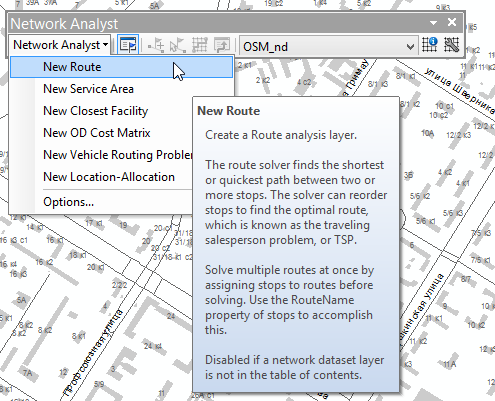
Откройте окно Network Analyst Window:
Предположим, что по адресу ул. Профсоюзная, д.9 находится магазин. Вы проживаете по адресу ул. Шверника, д. 19. Необходимо построить прямой и обратный автомобильный маршрут.
Выделите в списке набор Stops, и, используя инструмент Create Network Location, поставьте на графе дорожной сети 2 точки:
Рядом со зданием ул. Профсоюзная, д. 9
Рядом со зданием ул. Шверника, д. 19
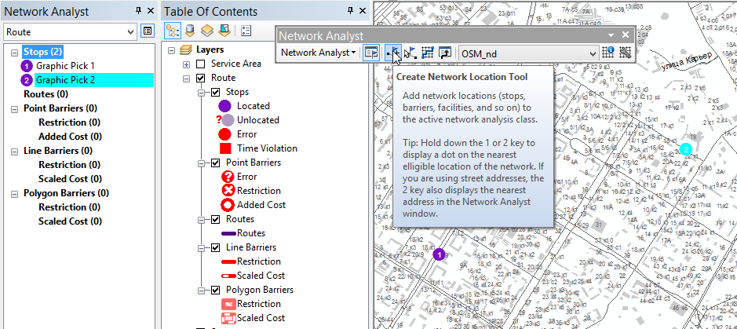
Нажмите Solve, чтобы построить прямой маршрут:
Снимок экрана №2. Прямой маршрут
Поменяйте точки местами в окне Network Analyst чтобы построить обратный маршрут. Для этого перетащите нижнюю точку вверх списка. Запустите еще раз Solve:
Снимок экрана №3 . Обратный маршрут
Допустим, по адресу проспект 60-летия Октября, д.29к1 ведутся ремонтные работы и движение перекрыто. Поставьте в этом месте барьер и перестройте маршрут. Для этого:
Выделите в окне Network Analyst пункт Point Barriers > Restriction и поставьте точку на граф рядом со зданием проспект 60-летия Октября, д.29к1.
Необходимо определить, какие здания попадают в зону доступности магазина в пределах 1-5 минут движения на автомобиле.
Отключите в таблице содержания слой Route (снимите галочку).
Создайте слой вычисления зон обслуживания с помощью команды Network Analyst > New Service Area.
Выделите в окне Network Analyst слой Facilities (пункты обслуживания) и используя тот же инструмент Create Network Location, поставьте точку по адресу ул. Профсоюзная, д. 2/22 (пересечение с ул. Дмитрия Ульянова).
Установите время езды до магазина равным 2 минуты. Для этого дважды щелкните на слое Service Area в таблице содержания, перейдите на вкладку Analysis Settings и поменяйте следующие настройки:
Параметр
Значение
Default Breaks
2
Direction
Towards Facility
Режим Towards Facility означает, что движение будет моделироваться от потребителя к точке обслуживания
Нажмите Solve на панели Network Analyst, чтобы построить зону обслуживания:
Снимок экрана №5. Зона обслуживания 2 мин
Постройте иерархию зон обслуживания от 1 до 5 минут. Для этого поменяйте значение параметра Breaks в настройках слоя Service Area на 1 2 3 4 5 (через пробелы):
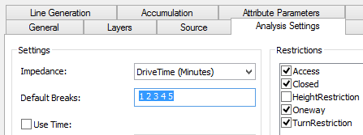
Перезапустите расчет зон обслуживания.
Примерный результат должен выглядеть следующим образом:
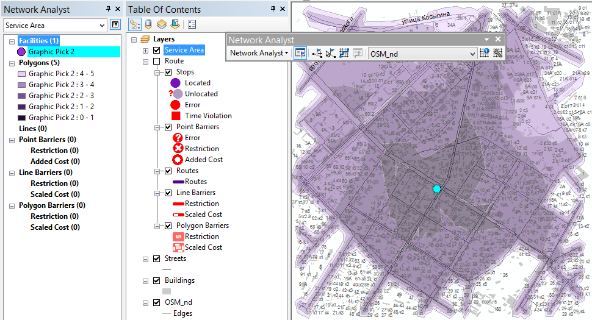
Снимок экрана №6 Иерархия зон обслуживания от 1 до 5 мин
Получив зоны обслуживания, вы можете выделить с их помощью здания и провести экономико-географический анализ. Для этого можно воспользоваться пространственной выборкой.
Раскройте список Polygons в окне Network Analyst, чтобы увидеть легенду слоя. Выберите зону Graphic Pick 1: 1 – 2, она соответствует интервалу движения от 1 до 2 минут до магазина. Соответствующий полигон подсветится на карте.
Откройте диалог пространственной выборки (Selection — Select By Location). Задайте в качестве целевого слоя (Target) Buildings, а в качестве слоя-источника (Source) — Polygons из группы Service Area. Отметьте галочкой Use selected features, чтобы пространственный запрос осуществлялся выбранной зоной. Диалог пространственной выборки примет следующий вид:
Нажмите ОК. На карте будут отобраны здания, попадающие в заданный интервал транспортной доступности:
Снимок экрана №7 Выборка зданий
Полученную выборку зданий вы можете далее использовать для проведения статистического и географического анализа.
Предположим, что есть 2 магазина и 5 семей, которые живут в разных районах. Необходимо определить, какой магазин является ближайшим для каждой семьи и построить маршрут.
Отключите слой Service Area в таблице содержания и снимите выборку со всех объектов.
Создайте слой определения ближайшего пункта обслуживания с помощью команды Network Analyst — New Closest Facility.
Используя навыки предыдущего анализа, поставьте два пункта обслуживания (Facilities) по адресам:
Ул. Вавилова д. 48
Ул. Новочеремушкинская, д. 23
Поставьте 5 пунктов потребления (Incidents) по адресам:
Ул Шверника, д. 19
Ленинский проспект, д. 44
Нахимовский проспект, д. 67
Проспект 60-летия Октября, д. 19
Ул. Кржижановского, д. 16к1
Нажмите Solve, чтобы запустить расчет маршрутов.
Инструмент выберет ближайшие пункты обслуживания (магазины) для каждого потребителя и построит маршруты:
Задача размещения—распределения (location-allocation) звучит следующим образом: есть N потенциальных точек для размещения пунктов обслуживания (магазины, кафе, пожарные станции, транспортные узлы, сервисные центры и т.д.), а также K точек потребления (обычно это здания, из которых выезжают люди за услугами, или к которым эти услуги поставляются). Необходимо из N точек обслуживания выбрать n ≤ N точек таким образом, чтобы минимизировать некую стоимостную функцию (например, суммарное время движения от каждого пункта потребления до ближайшего пункта обслуживания). После чего распределить точки по ближайшим пунктам обслуживания. Данный тип анализа позволяет также моделировать противостояние конкурирующих сетей обслуживания и подбирать оптимальные места размещения пунктов для максимального охвата рынка.
Отключите слой Closest Facility в таблице содержания
Создайте слой размещения—распределения с помощью команды Network Analyst > New Location-Allocation.
Расставьте потенциальные пункты обслуживания (Facilities) по следующим адресам:
Ул. Большая Черемушкинская, д.11к3
Ул. Дмитрия Ульянова, д. 42
Ул. Профсоюзная, д. 19
Ленинский проспект, д. 67
Ленинский проспект, д. 44
Проспект 60-летия Октября, д. 19к1
Ул. Дмитрия Ульянова, 26к1
Добавьте на карту слой Points из базы геоданных Ex4. Это слой центроидов зданий, необходимый для загрузки точек потребления.
Сделайте точки черного цвета диаметром 3 пункта
Изображение примет следующий вид:
Загрузите точки в пункты потребления. Для этого щелкните правой кнопкой мыши на строке Demand Points окна Network Analyst и выберите команду Load Locations:
В появившемся диалоге выберите в списке Load From слой Points и нажмите ОК. Потребуется некоторое время, чтобы точки привязались к графу дорожной сети. За процессом вы можете следить в строке состояния приложения (внизу).
Дважды щелкните на слое Location-Allocation в таблице содержания, чтобы изменить настройки анализа. Перейдите на вкладку Advanced Settings:
Попробуйте выбрать различные варианты решения задачи в списке Problem Type и прочитайте их описание. Подумайте, где можно применить такой анализ.
Выберите режим Minimize Impedance (минимизировать суммарное время движения от потребителей к ближайшим пунктам обслуживания).
Установите количество отбираемых кандидатов (Facilities to Choose) равное 4.
Установите направление движения Demand to Facility (потребитель к услугам) на вкладке Analysis Settings:
Нажмите ОК и запустите решение задачи на панели Network Analyst. Будут выбраны 4 наиболее оптимальных пункта обслуживания, а здания будут распределены между ними в виде веерной диаграммы. Программа выдаст предупреждение, что некоторые точки оказались непривязанными — проигнорируйте его. Это связано с тем, что некоторые здания по краям области транспортно недоступны, поскольку к ним требуется подъезд извне изучаемого района. Вы можете их видеть по отсутствию исходящих линий.
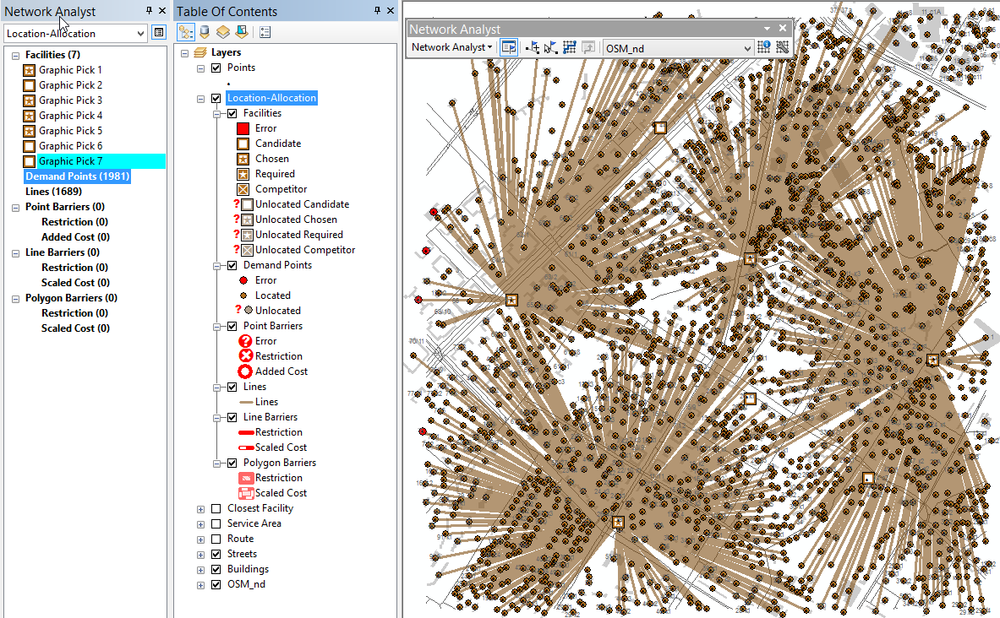
Снимок экрана №9 Результат размещения — распределения
На основе полученного распределения можно произвести районирования территории. Для этого вы построите диаграмму Вороного точек потребления и объедините полигоны, отнесенные к одному пункту обслуживания.
Исключите нераспределенные точки. Для этого дважды щелкните на слое Demand Points в таблице содержания, перейдите на вкладку Definition Query, нажмите Query Builder и введите следующий запрос:
"FacilityID" IS NOT NULL
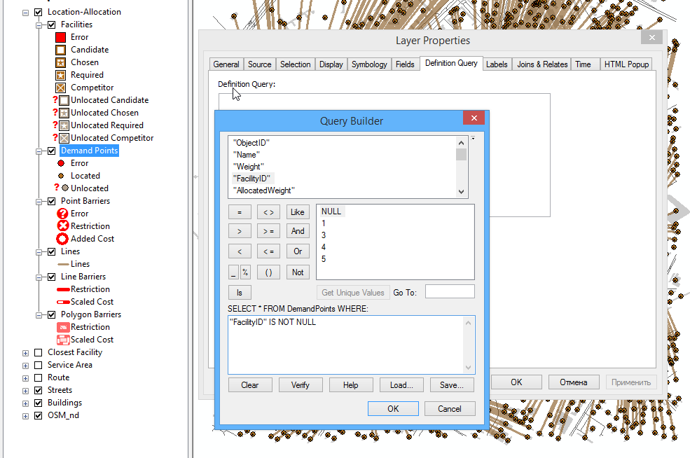
Создайте в вашем каталоге Ex4 базу геоданных Regions.gdb и назначьте ее базой данных по умолчанию:
Откройте ArcToolbox.
Запустите инструмент геообработки Analysis Tools > Proximity > Create Thiessen Polygons и заполните его параметры следующим образом:
Параметр
Значение
Input Features
Location-Allocation\Demand Points
Output Features
…\Ex4\Regions.gdb\DemandPoints_Voronoy
Output Fields
ALL
Запустите инструмент. Полученный слой будет добавлен на карту и будет иметь следующую структуру:
Диаграмма Вороного обладает следующим свойством: какую бы точку мы не взяли внутри каждого полигона, она будет ближе к центроиду этого полигона, чем к любому другому центроиду.
Объединив полигоны Вороного, точки которых отнесены к одному и тому же пункту обслуживания, вы получите районирование территории по зонам обслуживания. Для этого:
Запустите инструмент Data Management Tools > Generalization > Dissolve и заполните его параметры следующим образом:
Параметр
Значение
Input Features
DemandPoints_Voronoy
Output Feature Class
…\Ex4\Regions.gdb\Regions
Dissolve Field (s)
FacilityID
Остальные параметры оставьте по умолчанию. Диалог инструмента примет следующий вид:
Нажмите ОК. После обработки слой районирования будет добавлен на карту.
Отключите слои диаграммы Вороного, а также точек зданий.
Переместите слой Regions под слои зданий и дорог.
Измените оформление слоя Regions следующим образом:
Способ изображения Categories — Unique Values
Поле отображения Facility ID
Цвета отображения спокойные, пастельные, одинаковые по насыщенности.
Обводка полигонов отсутствует. Чтобы убрать обводку сразу у всех плашек, щелкните на заголовке столбца Symbol, выберите пункт Properties for All Symbols и установите параметр Outline Color в положение No Color.
Примерный вид диалога свойств слоя Regions выглядит следующим образом:
Нажмите ОК, чтобы завершить оформление
В слое Location-Allocation оставьте включенным только слой Facilities.
Выгрузите отобранные пункты в отдельный слой. Для этого в окне Network Analyst выделите в списке Facilities пункты, помеченные звездочками (зажав клавишу Ctrl). Далее в контекстном меню слоя Facilities выберите команду Export Data.
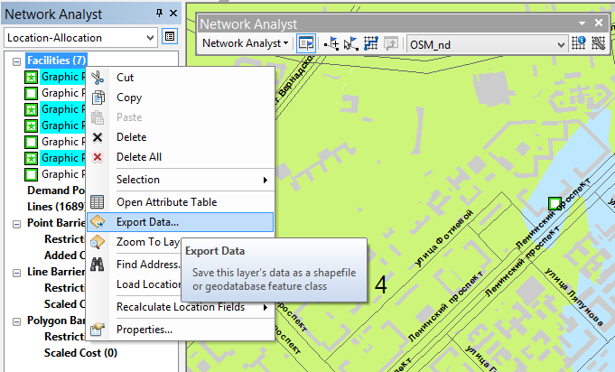
Сохраните выборку в базу геоданных Regions.gdb под названием Selected:
На вопрос добавить ли созданный слой на карту, ответьте утвердительно. Переименуйте слой в «Пункты обслуживания». Визуализируйте слой методом категорий (Categories — Unique Values) по полю Name. В качестве символа используйте кружки диаметром 16 пунктов. Цвет кружков приведите в соответствии с цветом зоны, но сделайте его более ярким и насыщенным.
Проделайте аналогичную операцию для не выбранных пунктов обслуживания, выделив их в списке. Сохраните их в базу геоданных под названием Rejected. Полученный слой на карте назовите «Не выбранные пункты обслуживания» Присвойте полученному слою единый символ в виде темно-серого кружка диаметром 12 пунктов.
Включите подписи номеров районов по полю FacilityID (размер шрифта 18)
Заполните отчетный файл и положите его в сетевую папку для проверки преподавателем.
Геометрическое моделирование речной сети
Введение
Цель задания --- научиться моделировать речную сеть с помощью геометрических методов.
Параметр
Значение
Поток
Гидрометпоток
Теоретическая подготовка
Сетевая модель данных, сетевой анализ, определение кратчайшего маршрута.
Практическая подготовка
Знание основных компонент интерфейса ArcGIS Desktop (каталог, таблица содержания, карта). Работы с базой пространственных данных. Настройка символики и подписей объектов.
Исходные данные
База данных ГИС “Сатино”.
Результат
Набор данных геометрической сети в базе пространственных данных. Результаты сетевого анализа
Ключевые слова
Геометрические сети, сетевой анализ
Контрольный лист
[x] Добавить на карту слои линейной и площадной гидрографии
[x] Разрезать линейный слой гидрографии в узлах сочленения водотоков
[x] Построить геометрическую сеть на основе полученного линейного слоя
[x] Выполнить упражнения по анализу построенной геометрической сети
Аннотация
Речные системы, транспортные и инженерные коммуникации — это примеры пространственных сетей. Сети играют огромную роль в географическом пространстве, их можно найти практически на любой карте, они учитываются в виде факторов во многих географических задачах. Основная функция сетей — перенос вещества и данных. Отличительной особенностью сетей является направленность линейных отрезков и их топологическая связность в местах сочленения, таких как слияния рек, перекрестки дорог, разветвления трубопроводов.
В этом задании вы приобретете навыки по созданию и редактированию линейных и точечных объектов, построите геометрическую сеть речной системы на их основе и научитесь делать простой сетевой анализ — построение маршрутов, трассировка водотоков вверх по течению. Полученные навыки пригодятся при изучении сетей других типов: инженерных и транспортных.
Сохраните карту через команду меню File > Save в вашей директории Ex13 под именем Ex13_Реки.mxd. Это необходимо для того, чтобы у вас появилась домашняя директория в окне каталога.
Откройте окно Каталога. Найдите вверху домашнюю директорию Home — это каталог Ex13, куда вы сохранили документ карты.
Добавьте на карту слои WaterPolygon и WaterLine из базы Satino.gdb.
Перед вами два представления речной сети: линейное и площадное. Подумайте, в каких задачах необходимо одно представление, а в каких — другое?
Чтобы обеспечить связность гидрографической сети, следует преобразовать площадное представление крупных водотоков в линейное. Для этого необходимо вручную оцифровать осевую линию реки, притянуть устья притоков к этой осевой линии, а затем разрезать осевую линию в узлах пересечения (в дальнейшем это позволит при трассировке «сворачивать» с одного водотока на другой).
Щелкните правой кнопкой мыши по домашнему каталогу (Home) и выберите New > File Geodatabase для того, чтобы создать новую базу геоданных.
Назовите ее Ex13.
Щелкните по Ex13.gdb правой кнопкой мыши и выберите пункт Make Default Geodatabase. Эта команда указывает системе, что все результаты обработки данных следует помещать в выбранную базу геоданных.
Добавьте в базу геоданных Ex13.gdb новый набор данных Hydro. Для этого щелкните правой кнопкой мыши на названии базы геоданных и в контекстном меню выберите New > Feature Dataset (Рис. 1).
Рис. 1. Создание нового набора данных (Feature Dataset)
В появившемся окне введите название набора данных Hydro.
В следующем окне вам просят задать проекцию. Щелкните на кнопке Add Coordinate System и в ниспадающем меню выберите команду Import. Найдите слой Border базе геоданных Satino.gdb и дважды кликните на нем. Параметры проекции автоматически подставятся из созданного ранее слоя. Убедитесь, что проекция называется WGS_1984_UTM_Zone_37N.
Нажмите Далее и во всех оставшихся диалогах оставьте параметры по умолчанию.
Создайте новый класс пространственных объектов Streams внутри набора данных Hydro. Для этого щелкните правой кнопкой мыши по набору данных Hydro и в контекстном меню выберите пункт New—Feature Class.
В первом диалоге введите название класса Streams, его псевдоним (alias) Водотоки и из ниспадающего списка выберите тип класса Line Features (Рис. 2). Нажмите Далее два раза, чтобы пропустить второй диалог.
Рис. 2. Диалог создания линейного класса пространственных объектов
В появившемся (третьем) диалоге (Рис. 3) вас просят определить состав атрибутивных полей для слоя. Здесь можно сделать это вручную, однако мы воспользуемся импортом.
Рис. 3. Определение атрибутивных полей для класса Streams
Нажмите кнопку Import и найдите класс WaterLine в базе геоданных Satino.gdb, дважды щелкните на нем. Названия и типы полей автоматически подставятся в список (Рис. 3).
Нажмите Finish. Проверьте, чтобы в вашей таблице содержания было 3 слоя: Водотоки, Гидрография (линии) и Гидрография (полигоны).
Для того чтобы собрать речную сеть, можно скопировать уже существующие линейные водотоки в созданный вами слой, а затем оцифровать недостающие водотоки (Протва и Исьма).
Цифрование — это процесс получения векторных объектов на основе изображения. При ручной оцифровке пользователь ГИС самостоятельно рисует линии, обводит полигоны, расставляет точки поверх растрового изображения, в котором эти объекты нарисованы. Существуют также методы цифрования, которые решают эту задачу в полуавтоматическом режиме, когда система пытается самостоятельно распознать и векторизовать объекты, а пользователь затем исправляет ошибки и недочеты в результатах цифрования. Типичный пример — перевод отсканированной бумажной топографической карты в набор векторных слоев базы пространственных данных.
Щелкните правой кнопкой мыши на слое Водотоки и выберите пункт меню Edit Features > Start Editing, чтобы начать редактирование.
Выделите все водотоки из слоя Гидрография (линии). Для этого щелкните правой кнопкой мыши по слою Гидрография (линии) и в контекстном меню выберите пункт Selection > Select All. Скопируйте выделенные водотоки в буфер обмена через команду главного меню Edit > Copy.
Вставьте скопированные объекты в слой Водотоки. Для этого воспользуйтесь стандартной командой главного меню Edit > Paste и в появившемся диалоге выберите в качестве целевого слой Водотоки.
Снимите выделение с водотоков, нажав кнопку Clear Selected Features на панели инструментов Tools.
Удалите слой Гидрография (линии) из таблицы содержания. В этом задании он больше вам не понадобится.
Переключитесь в окно Create Features c помощью кнопки на панели Tools (Рис. 4) и выберите Водотоки в списке цифруемых объектов:
Рис. 4. Панель Create Features
Приблизьтесь к верховьям Протвы в западной части карты. Для навигации используйте колесико мыши (масштабирование) и кнопку C на клавиатуре (перемещение). Рекомендуемый диапазон масштабов для цифрования — 1:1 500–1:2000. Вы можете его отслеживать вверху окна.
Щелкните посередине полигона в месте начала реки и начните цифровать линию примерно по осевой линии полигона с определенным интервалом. Щелкните мышью в месте, где вы хотите поставить точку, затем переместите курсор к месту следующей точки, щелкните еще раз, и так далее. Не увлекайтесь и не расставляйте точки слишком часто. Оцифруйте осевую линию Протвы целиком с запада на восток — это займет у вас некоторое время.
Когда линия будет полностью оцифрована, щелкните дважды мышью в последней точке, или нажмите F2.
Рис. 5. Оцифровка осевой линии реки и окно Create Features
Советы по цифрованию:
Если вам мешает плавающее окно дополнительных функций, нажмите клавишу TAB.
Если ваш курсор подошел к границе окна, зажмите клавишу C на клавиатуре и переместите карту. Отпустите клавишу C и продолжайте цифрование.
Если вы поставили точку не в том месте, где хотели, нажмите Ctrl + Z, чтобы отменить действие.
Если вы случайно завершили цифрование раньше, чем требуется, начните с последней точки. Ничего страшного, если у вас получится 2-3, а не одна линия — их всегда можно объединить.
Если вы хотите сдвинуть вершину, выберите стрелку на панели редактирования и дважды щелкните на линии — появятся вершины. После того, как сдвинете нужные точки, щелкните курсором на пустом месте карты.
Если курсор в узком месте назойливо притягивается к границе реки, попробуйте увеличить масштаб изображения.
Повторите операцию цифрования для реки Исьмы от ее верховья до устья. Последнюю точку поставьте на осевой линии Протвы.
Сохраните изменения, выбрав на панели Editor команду Editor > Save Edits.
Снимите выделение с водотоков, нажав кнопку Clear Selected Features на панели инструментов Tools.
Нажмите глобус Full extent, чтобы все объекты поместились на экране.
Притягивание (снэппинг) притоков и разрезание осевой линии основных рек
Вы помните, что ранее оцифрованные притоки Протвы и Исьмы были пристыкованы к полигональной границе реки. Возникает вопрос: сохранился ли этот характер соседства после того, как вы заменили полигональное представление рек на линейное?
Найдите устье реки Межиловки при впадении в Протву (западная часть полигона) и увеличьтесь так, чтобы было хорошо видно место впадения.
Какая топологическая ошибка может быть замечена в месте впадения ручья в Протву?
Возьмите стрелку на панели Editor и дважды щелкните на линии ручья. Должны появиться вершины. Потяните за последнюю вершину и пристыкуйте ее к линии реки (Рис. 6). Щелкните на пустом месте, чтобы завершить редактирование.
Повторите операцию для всех остальных ручьев. Перемещайтесь по карте, используя клавишу C. Не забудьте также про Исьму. Сохраните изменения, выбрав команду Editor > Save Edits
Помимо сохранения связности для геометрической сети очень важно, чтобы линии были разрезаны на сегменты между пересечениями. Это необходимо для того чтобы отличать реальные узлы от перекрытий (сравните обычный перекресток и эстакаду!).
Выделите на карте Протву и приблизьтесь к месту впадения в нее реки Межиловки.
Найдите на панели Editor инструмент разрезания линии и щелкните мышью в месте впадения ручья в Протву. Линия Протвы разобьется этой точкой на 2 части.
Повторите процедуру с выделением Протвы и разрезанием для всех остальных притоков.
Разрежьте аналогичным образом остальные водотоки.
Сохраните изменения, выбрав команду Editor > Save Edits. Завершите редактирование, выбрав команду Editor > Stop Editing.
Подготовленных вами данных уже достаточно для того, чтобы построить геометрическую сеть. Однако в общем случае сеть является двунаправленной (например, транспортная), а наша сеть имеет вполне определенное направление — вниз по течению. Чтобы задать это направление, необходимо создать новый точечный слой и поставить в нем одну точку, расположенную ниже всего по течению.
Перейдите в окно Каталога, щелкните правой кнопкой мыши по набору данных Hydro и выберите пункт New > Feature Class.
Задайте классу имя Sink и точечный тип Point Features. Остальные параметры оставьте по умолчанию.
Смените символ слоя Sink на кружок голубого цвета диаметром 10 пикселов.
Включите режим редактирования с помощью команды Edit Features > Start Editing, в окне Create Features выберите Sink и поставьте точку на восточной оконечности реки Протвы (правый край карты).
Сохраните изменения и завершите режим редактирования.
Добавьте на карту слой горизонталей ContoursBasic из базы данных Satino.gdb и смените цвет линий на бледно-серый. Переместите его вниз в качестве основы.
Отключите слой Гидрография (полигоны) и нажмите кнопку Full extent, чтобы вся территория полигона поместилась на экране.
Рис. 7. Линейный слой водотоков, горизонтали и точка стока
Снимок экрана №1. Линейный слой водотоков, горизонтали и точка стока
Ваши данные полностью готовы к тому, чтобы построить на их основе геометрическую сеть.
Перейдите в окно Каталога, щелкните правой кнопкой мыши по набору данных Hydro и выберите пункт New > Geometric Network.
Оставьте Hydro_Net в качестве имени по умолчанию и установите расстояние принудительного снэппинга линий равным 1 м (Рис. 8). Эта опция будет полезна, если вы где-то не дотянули устье притока до реки. Оно дотянется автоматически. Нажмите Далее.
Рис. 8. Имя геометрической сети и параметры снэппинга
В следующем окне нажмите Select All, чтобы выбрать слои, участвующие в построении сети (Рис. 9). Нажмите Далее.
Рис. 9. Выбор слоев, участвующих в построении сети
Перед вами окажется диалог настройки ролей. Junction — это узел, Edge — это ребро. Для слоя Sink установите значение параметра Sources & Sinks равным Yes. Система будет знать, что этот слой содержит точки, являющиеся истоками либо стоками (Рис. 10). Нажмите Далее.
Рис. 10. Установка ролей слоев в геометрической сети
Во всех остальных диалогах оставьте параметры по умолчанию. Нажмите Finish в последнем диалоге, чтобы завершить создание сети.
После того как будет построена геометрическая сеть, в таблицу содержания добавятся 3 новых слоя: Водотоки (ребра сети), Hydro_Net_Junctions (сочленения в сети) и Sink (точка стока). Удалите новые слои Водотоки и Sink, поскольку они дублируют старые
Включите режим редактирования и откройте таблицу атрибутов слоя Sink.
Установите для единственной точки в этом слое поле AncillaryRole равным 2 (Sink). Если список не отображается, просто введите в ячейку 2. Обратите внимание на то, что есть и противоположный вариант — Source (исток).
Рис. 11. Установка роли точки стока
Сохраните изменения, выбрав пункт меню Editor > Save Edits.
Щелкните правой кнопкой мыши на пустом поле вверху окна и откройте панель инструментов Utility Network Analyst, предназначенную для работы с геометрической сетью (Рис. 12).
Рис. 12. Панель инструментов Utility Network Analyst для работы с геометрическими сетями
Выберите в меню пункт Flow > Display Arrows для того чтобы система автоматически показала направление течения. Вдоль отрезков будут показаны кружки, означающие, что направление еще не задано (Рис. 13).
Рис. 13. Неопределенное направление течения в геометрической сети
Нажмите кнопку Set Flow Direction. Кружки должны смениться стрелочками, указывающими направление течения. Просмотрите разные части карты и убедитесь в том, что направление течения задано одинаково верно для всех водотоков (Рис. 14).
Рис. 14. Определенное направление течения в геометрической сети
Снимок экрана №2. Геометрическая сеть с определенным направлением течения
Завершите сеанс редактирования, выбрав на панели Editor пункт меню Editing > Stop Editing. В появившемся диалоге нажмите Да.
Вы закончили подготовку и настройку геометрической сети. Теперь она доступна для анализа и редактирования.
Самое интересное в сетевых моделях — это возможность их анализа. Например, если зафиксирована точка прорыва на трубопроводе, можно определить все расположенные далее сегменты и ответвления сети, которые пострадают в результате аварии. Для замыкающего створа на реке можно определить все притоки, расположенные выше по течению или быстро трассировать путь воды вниз по течению вплоть до устья основной реки бассейна. При анализе транспортных сетей часто решается задача прокладки кратчайшего маршрута, расчета зон доступности и управления парком транспортных средств.
При анализе геометрических сетей в ArcGIS используются флаги и барьеры. Флаг — это точка, относительно которой осуществляется трассировка сети. Барьер — это точка, запрещающая проход по ребру графа или его вершине.
Откройте меню флагов и барьеров на панели инструментов Utility Network Analyst и выберите флаг для вершины (первая иконка на Рис. 15).
Рис. 15. Меню флагов и барьеров
Поставьте флажок в месте впадения реки Межиловки в Протву.
В списке Trace Task выберите задачу Trace Upstream (трассировать вверх по течению) и нажмите кнопку Solve.
Инструмент анализа выделит водотоки, расположенные выше по течению относительно заданной точки. Весь их сток в конечном счете попадает в данную точку (Рис. 16).
Рис. 16. Трассировка водотоков, расположенных выше по течению
Снимок экрана №3. Водотоки выше по течению относительно заданной точки
Смените задачу на Trace Downstream и опять нажмите кнопку Solve.
Инструмент анализа построит маршрут вниз по течению
Поставьте еще один флажок в верховьях ручья Язвицы и запустите анализ в режиме Find Path. Будет построен маршрут между двумя точками (Рис. 17).
Рис. 17. Маршрут между двумя точками
Снимок экрана №4. Маршрут между двумя точками
Поставьте точечный барьер (вторая справа иконка на Рис. 15) в месте впадения Исьмы в Протву и попробуйте еще раз рассчитать маршрут.
Что произошло с расчетом маршрута после того, как вы поставили барьер?
Очистите флаги и барьеры, выбрав Analysis > Clear Flags и Analysis > Clear Barriers.
Попробуйте поэкспериментировать с разными режимами расчетов в меню Trace Task и расстановкой флагов и барьеров.
Геометрическая сеть отличается также тем, что это топологический формат хранения данных — она хранит связность ребер и вершин, что бывает удобно при редактировании и совершенно необходимо при анализе.
Включите режим редактирования снова и приблизьтесь к месту впадения любого ручья в Протву.
Выделите узел сочленения и переместите его в сторону.
Что происходит при перемещении узла сети? Остаются ли ребра на своих местах?**
Ответьте на вопросы в отчетном файле. После окончания положите ваш отчет в сетевую папку для проверки преподавателем.
Картографирование на основе адресных данных
Введение
Цель --- научиться выполнять геокодирование по адресным данным, строить поля непрерывного распределения показателя по точкам.
Поток
==Экономпоток==
Теоретическая подготовка
Геокодирование, адресные локаторы и их типы, интерполяция по данным в нерегулярно расположенных точках, методы интерполяции.
Практическая подготовка
Знание основных компонент интерфейса ArcGIS Desktop (каталог, таблица содержания, карта). Настройка символики и подписей объектов. Выделение объектов на карте. Пространственные и атрибутивные запросы. Оверлей. Инструменты геообработки.
Исходные данные
Таблица адресов ресторанов McDonald’s на территорию Манхэттена (Нью-Йорк) с данными о средней посещаемости. Картографический сервис Esri Streets. Сервис геокодирования NYSGIS.
Результат
Геокодированные точки адресов. Визуализация точек значками разного диаметра в соответствии с посещаемостью. Поле посещаемости, построенное по точечным данным. Проект карты с элементами компоновки (легенда, масштаб).
Ключевые слова
Геокодирование, адресный локатор, интерполяция данных.
[x] Добавить на карту таблицу с адресами и геокодировать их в автоматическом режиме
[x] Исправить вручную несопоставленные точки
[x] Визуализировать точки значками разного диаметра в соответствии с числом посетителей
[x] Построить по точкам поле посещаемости методом естественных соседов (Natural Neighbor).
[x] Оформить итоговую карту распределения
Аннотация
Задание посвящено знакомству с геокодированием и построением непрерывных полей на основе точечных данных. Геокодирование — это определение координат объектов по их географическим текстовым описаниям, которые, как правило, выражены в виде адресов и/или почтовых кодов.
На основе точечных данных часто восстанавливают поле распределения некоторого показателя. В случае социально-экономических показателей это такие поля являются абстрактными и показываются псевдоизолиниями. Несмотря на то, что признак может не иметь истинно непрерывного распределения (как в случае этого задания — посещаемость ресторанов), показ с помощью изолиний бывает наглядным, дает лучшее представление о дифференциации территории, чем просто значки.
В работе вам предлагается совместно использовать эти 2 метода.
==! ВНИМАНИЕ: для выполнения задания необходимо подключение к сети Интернет.==
Добавьте на карту в качестве основы картографический сервис Esri Streets. Его можно выбрать, используя команду Add Basemap на главной панели инструментов:
В появившемся диалоге выберите Streets:
Если подключение произошло корректно, появится картографическое изображение.
Увеличьте масштаб карты таким образом, чтобы был хорошо виден Манхэттен:
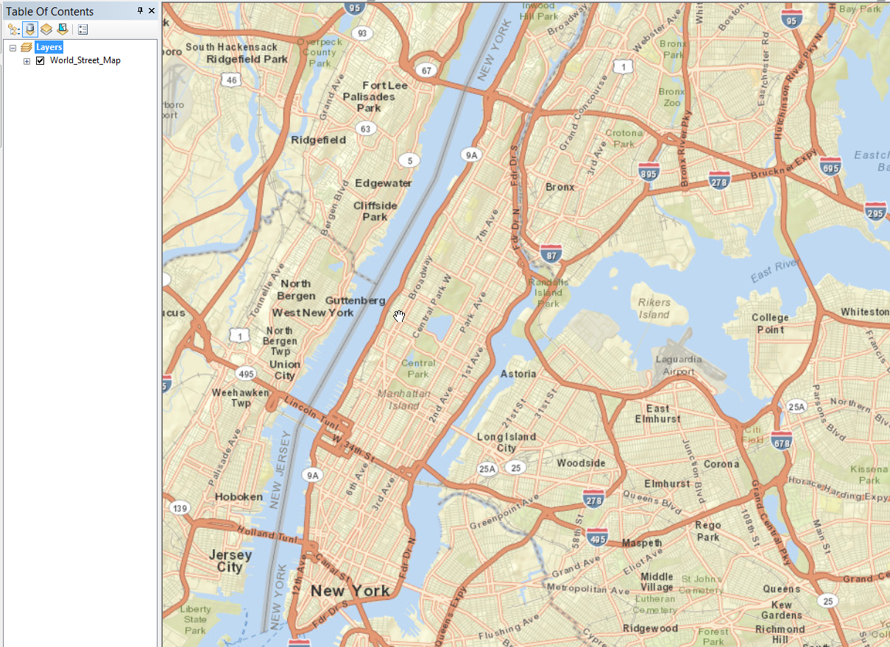
Подключитесь к ГИС-серверу официального портала штата Нью-Йорк. Для этого в окне каталога выберите команду GIS Servers > Add ArcGIS Server и в появившемся диалоге выберите Use GIS Services (использовать ГИС-сервисы), нажмите Далее:
В следующем диалоге в параметр Server URL скопируйте и вставьте следующий адрес и нажмите Finish (имя пользователя и пароль вводить не надо):
Если соединение прошло удачно, в списке ГИС-серверов появится новое подключение к ГИС-серверу. Внутри него среди прочих сервисов должен располагаться адресный локатор Street_and_Address_Composite:
Подключитесь в окне Каталога к вашей папке Ex5 и создайте в ней новую базу геоданных под названием Ex5. Назначьте ее базой данных по умолчанию.
В окне Каталога раскройте таблицу NYMcDonalds.xlx и перетащите ее первый лист на карту:
Откройте таблицу, чтобы просмотреть ее содержимое. В ней есть несколько полей, отвечающих за адрес, а также поле Visitors, хранящее информацию о среднем числе посетителей, обслуживаемых за один час:
Выберите в контекстном меню таблицы опцию Geocode Addresses, чтобы приступить к геокодированию:
В появившемся диалоге необходимо добавить сервис геокодирования, к которому вы осуществили подключение ранее.
Нажмите Add... и, используя навигацию по папкам, перейдите в каталог GIS Servers и найдите сервис геокодирования Street_and_Address_Composite. Выделите его и нажмите Add:
Далее выделите его и нажмите ОК:
В появившемся диалоге настроек геокодирования необходимо выбрать поля атрибутивной таблицы, из которых будет браться адресная информация. Заполните его следующим образом:
Параметр
Значение
Street or Intersection
Address
City or Placename
City
State
State
Output Shapefile or Feature Class *
…\Ex5\Ex5.gdb\NYMcDonalds
* Выберите в поле Save as Type фильтр «File and Personal Geodatabase Feature Class»
Остальные параметры оставьте по умолчанию и нажмите ОК. После выполнения геокодирования появится диалог, сообщающий процент удачно геокодированных адресов (Matched). Нажмите Rematch, чтобы приступить к исправлению ошибок:
Появится диалог сопоставления адресов, а на карту будет добавлены удачно геокодированные точки. Выберите в списке Show Results режим Unmatched Addresses. Не закрывая диалог, увеличьте изображение таким образом, чтобы точки было хорошо видно:
Снимок экрана №1. Автоматически геокодированные точки на карте и список негеокодированных точек
Возникшие проблемы сопоставления адресов почти во всех случаях обусловлены тем, что для зданий на перекрестках указано сразу 2 адреса (427 10TH AVE & 34TH). Такая форма адреса не соответствует требованиям геокодера. Исключение составляет адрес «139TH & ADAM CLAYTON POWELL», в котором не указан номер дома ни по одной из улиц. Его вы обработаете отдельно.
Для разрешения неоднозначности выполните следующие действия:
Выделите строку с идентификатором «10» в таблице. В поле Street or Intersection в нижней левой части окна сотрите знак & и все что после него. Строка «154 W 14TH ST & 7TH AVE» должна превратиться в строку «154 W 14TH ST»: | | | |---|---|
Нажмите Search. Среди полученных вариантов выберите имеющий ранг Score равный 100 (полное совпадение). Если таких адресов несколько, следует выбрать тот, что имеет заполненное поле House (дом).
Нажмите Match, чтобы сопоставить адрес. Результат должен выглядеть следующим образом:
Повторите эту последовательность действий для всех оставшихся строк.
Для кафе, располагающегося на перекрестке 139TH & ADAM CLAYTON POWELL вам необходимо узнать точный адрес по одной из этих улиц. Найдите этот адрес, используя поисковые возможности сети Интернет и введите его полностью (включая номер дома и полное название улицы) в поле Street or Intersection.
После выполнения правок все адреса должны быть сопоставлены и диалог примет следующий вид:
Снимок экрана №2. Результат ручного сопоставления адресов
Нажмите Close, чтобы завершить геокодирование.
Сохраните документ карты в свою папку Ex5 под названием Ex5_Geocoding.mxd.
Визуализируйте слой полученных точек методом значков. Выберите способ изображения Quantities — Graduated Symbols и задайте следующие параметры:
Параметр
Значение
Поле отображения
Visitors
Классификация
С равным интервалом через 100
Размеры кружков
От 8 до 24
Цвет кружков
Голубой
Диалог настройки свойств слоя примет следующий вид:
Установите прозрачность значков на вкладке Display равной 50%.
Переименуйте слой в «Рестораны McDonalds», а значение подписи показателя в заголовке легенды измените на «чел/час». Картографическое изображение примет следующий вид:
Откройте панель инструментов Labeling и включите механизм Maplex, чтобы получить доступ к расширенным настройкам подписей.
Включите подписи точек по полю Address. Установите размер шрифта равным 7.
Чтобы полученные надписи не загораживали значки, необходимо установить значкам высокий вес при размещении подписей.
Нажмите кнопку Label Weight Ranking на панели Labeling:
В открывшемся диалоге установите значение веса точек равным 1000:
Нажмите ОК. После выполнения этих действий подписи будут размещены в стороне от значков:
Снимок экрана №3. Градуированные значки с подписями
Наглядность представления пространственного распределения можно повысить, построив по точкам непрерывное поле и отобразив его методом послойной окраски. Восстановление поля по точечным данным делается с помощью интерполяции. Методы интерполяции расположены в группе инструментов Spatial Analyst Tools > Interpolation.
Запустите инструмент интерполяции данных Spatial Analyst Tools > Interpolation > Natural Neighbor (метод естественного соседа) и заполните его параметры следующим образом:
Параметр
Значение
Input Point Features
Рестораны McDonalds
Z Value Field
Visitors
Output Raster
…\Ex5\Ex5.gdb\Visitors
Output Cell Size
50
Метод естественного соседа осуществляет интерполяцию на основе диаграммы Вороного точек. Полученный растр будет добавлен на экран. Переименуйте его в «Посещаемость»:
Дважды щелкните на растре, перейдите на вкладку Symbology и измените параметры его отображения следующим образом:
Параметр
Значение
Способ отображения
Classified
Классификация
С равным интервалом через 100
Шкала
От желтого к темно-красному
Диалог настройки слоя примет следующий вид:
Перейдите на вкладку Display и установите параметр прозрачности (Transparency) равным 20%, чтобы сделать послойную окраску полупрозрачной. Нажмите ОК. Картографическое изображение примет следующий вид:
Переключитесь в режим компоновки и установите масштаб карты равным 1:100 000. Оформите карту в соответствии с нижеприведенным образцов, экспортируйте ее в графический файл и вставьте в отчет.
Заполните отчетный файл и положите его в сетевую папку для проверки преподавателем.
Анализ плотности пространственного распределения
Введение
Цель задания --- научиться определять плотность распределения (густоту) линейных объектов с помощью метода плавающего окна.
Параметр
Значение
Поток
Экономический
Теоретическая подготовка
Растровая модель пространственных данных, фильтрация растра, ядерное сглаживание, оценка плотности распределения.
Практическая подготовка
Знание основных компонент интерфейса ArcGIS Desktop (каталог, таблица содержания, карта). Настройка символики и подписей объектов. Инструменты геообработки
Исходные данные
База данных цифровой топографической карты 1:1 000 000 на территорию России
Результат
Растры густоты дорожной сети, полученные методом простого подсчета длины линий и путем ядерного сглаживания с разным радиусом влияния. Карта густоты дорожной сети с компоновкой.
Ключевые слова
Пространственный анализ, плотность распределения, фильтрация растра, ядерное сглаживание.
Контрольный лист
[x] Построить растры плотности и плотности ядер для линий
[x] Исследовать влияние радиуса вычислений на гладкость поверхности.
[x] Вырезать фрагмент результирующего растра на территорию России. Умножить значение плотности на 10, чтобы компенсировать эффект масштаба
[x] Подготовить проект карты густоты дорожной сети
Аннотация
Задание посвящено знакомству с анализом плотности размещения объектов на примере густоты дорожной сети. Анализ густоты является одним из фундаментальных методов исследования географических закономерностей размещения объектов, который позволяет выявить неравномерности и связать их с географическими условиями и соседством.
Для анализа густоты дорожной сети вами будет использована фильтрация данных. Подсчет густоты основан на принципе скользящего окна: поверх исходного слоя строится растровая поверхность и в заданном радиусе относительно каждой ячейки растра подсчитывается суммарная длина линий. При использовании ядерного сглаживания (кернфункции) полученное значение густоты сглаживается.
Создайте в директории Ex15 новую файловую базу геоданных и назовите ее Analysis
Назначьте созданную базу данных базой данных по умолчанию:
Добавьте на карту слой Roads из базы данных MapData.gdb в папке Ex15. Это дороги на территорию России, оцифрованные по картам масштаба 1:1 000 000.
Используя команду меню Cutomize > Extensions, включите модуль Spatial Analyst
Откройте ArcToolbox
Запустите инструмент Spatial Analyst Tools > Density > Line Density и заполните его параметры следующим образом:
Параметр
Значение
Input polyline features
Roads
Output cell size
10000
Output raster
<путь к базе данных>/line_dens_100
Search radius
100000
Area units
SQUARE_KILOMETERS
Диалог примет следующий вид:
Нажмите ОК, чтобы запустить инструмент. Когда вычисления закончатся, созданная поверхность будет добавлена на карту.
Отключите слой roads и установите передискретизацию слоя line_dens_100 в режим Cubic Convolution.
Примените к растру цветовую шкалу от синего к красному.
Результат:
Запустите инструмент Spatial Analyst Tools > Density > Kernel Density и заполните его параметры аналогично предыдущему инструменту. Назовите выходную поверхность kernel_dens_100:
Примените к получившемуся слою такую же цветовую шкалу, как и предыдущему
Установите режиме передискретизации результирующего слоя Cubic Convolution
Сделайте слой дорог черного цвета и установите ему прозрачность70%.
Сравните растры, полученные методами Line Density (простой подсчет длины линий в пределах плавающего окна) и Kernel Density (подсчет с использованием кернфункции). Какой тип оператора дает более ровную поверхность?
Создайте методом Kernel Density еще два растра густоты дорожной сети с радиусом поиска (Search radius) 200 000 и 400 000 м соответственно и разрешением (Output cell size) равным 20000 м. Назовите их kernel_dens_200 и kernel_dens_400 соответственно.
Примените к полученным растрам настройки отображения по аналогии с предыдущими результатами.
Оцените влияние радиуса поиска на сглаженность поверхности:
Сохраните карту в каталог Ex15 под названием Roads.mxd
Полученные растры отражают искаженное значение плотности, поскольку исходный слой дорог содержит не все дороги. Их количество преуменьшено примерно в 10 раз (карта масштаба 1:1 000 000. Чтобы привести значение густоты к должно величине, необходимо умножить растр на 10.
Запустите инструмент Spatial Analyst > Math > Times
Заполните его параметры в соответствии со следующим диалогом и запустите:
Оставьте включенным только слой kernel_dens_100_x10
Добавьте на карту слой countries из базы данных MapData.gdb
Уберите у него заливку, а обводку установите черной, толщиной 1,5 пиксела.
Выделите на карте полигон России.
Запустите инструмент Spatial Analyst > Extraction > Extract by Mask, чтобы обрезать растр по границе России. Заполните его параметры в соответствии со следующим диалогом:
Примените к полученному растру следующие настройки отображения:
Параметр
Значение
Метод отображения
Classified
Метод классификации
Natural Breaks (Jenks)
Число классов
9
Шкала
От синего к красному
Округлите значения полученных границ классов в столбце Label до одного-двух знаков после запятой и отсортируйте классы по убыванию значений.
Результат:
Переименуйте слой в «Густота дорожной сети», а заголовок показателя в «км/кв.км»
Выделите полигоны России, Аральского и Каспийского морей в слое Countries
Инвертируйте выборку.
Создайте новый слой на основе выборки и назовите его «Страны». Присвойте ему символ с белой заливкой и черной обводкой толщиной 1,5 пункта.
Переименуйте исходный слой Countries в “Границы”
Установите заливку фрейма данных голубого цвета
Результат:
Добавьте на карту слой Cities, примените к нему символ черного кружка диаметром 3 пункта и включите подписи по полю Name_normal шрифтом Tahoma 8 кегля.
Оформите компоновку карты в соответствии со следующим образцом:
Ответьте на вопросы в отчетном файле. После окончания положите ваш отчет в сетевую папку для проверки преподавателем.
Интерполяция и картографирование гидрометеорологических полей
Введение
Цель --- научиться на основе точечных данных восстанавливать поля распределения непрерывных показателей различными способами. Осуществлять визуализацию методом изолиний с послойной окраской, строить профили по полученным поверхностям.
Поток
==Гидрометпоток==
Теоретическая подготовка
Построение растровых поверхностей. Интерполяция по данным в нерегулярно расположенных точках. Методы интерполяции: обратно взвешенных расстояний, естественного соседа, тренда, сплайнов, кригинга.
Практическая подготовка
Знание основных компонент интерфейса ArcGIS Desktop (каталог, таблица содержания, карта). Настройка символики и подписей объектов. Пространственные и атрибутивные запросы, оверлей. Создание базы геоданных и классов пространственных объектов. Редактирование классов пространственных объектов. Инструменты геообработки ArcToolbox. Создание компоновки карты: название легенда, масштаб, градусная сетка.
Исходные данные
Данные дрейфующих буев ARGO на акваторию Северной Атлантики, границы стран мелкомасштабной картографической основы.
Результат
Поверхности температуры за 30.01.2011, построенные различными методами; поверхность кригинга, полученная после обработки фильтром 3х3; изолинии по данной поверхности с шагом 2,5 градуса; профиль температуры по меридиану 38° з.д.; карта с названием, легендой, масштабом и профилем
[x] Добавить на карту границы стран и точки наблюдений, оформить в соответствии с указаниями
[x] Оценить максимально возможное разрешение растра
[x] Построить поверхность методом обратно взвешенных расстояний
[x] Построить поверхность методом естественного соседа
[x] Построить поверхность методом сплайнов с натяжением
[x] Построить поверхности методом полиномиального тренда со степенями 1,2,3,4,5
[x] Построить поверхность методом кригинга
[x] Сгладить данную поверхность фильтром с плавающим окном размера 3х3
[x] Построить изолинии по данной поверхности
[x] Построить профиль по меридиану 38° з.д.
[x] Оформить карту с легендой и масштабом
Аннотация
Моделирование физических полей --- основа гидрометеорологического картографирования. Типичный рабочий процесс при создании карт температуры, давления, скорости ветра и прочих непрерывных в пространстве явлений заключается в восстановлении поверхности на основе точечных измерений (или модельных значений). Полученные поверхности можно визуализировать, выполнять их анализ, строить профили и разрезы.
В задании предлагается восстановить поле температуры в Северной Атлантике по данным дрейфующих буев ARGO; проанализировать отличия поверхностей, полученных разными методами. В заключении работы необходимо построить профиль и оформить карту в режиме компоновки.
Для оценки минимально необходимого разрешения растра следует вычислить для массива исходных точек среднее расстояние до ближайшего соседа (Nearest Neighbor Distance, NND), которое дает оценку пространственной частоты. Согласно теореме Котельникова, потерь данных можно избежать, если частота дискретизации будет вдвое больше максимальной пространственной частоты. Данная частота дискретизации именуется частотой Найквиста. Интерпретируя это утверждение в терминах растрового анализа, можно сказать, что разрешение растра R должно быть по крайней мере в 2 раза мельче, чем среднее расстояние до ближайшего соседа.
Запустите инструмент геообработки Analysis Tools > Proximity > Near и задайте его параметры следующим образом:
Параметр
Значение
Input Features
ArgoBuoys
Near Features
ArgoBuoys
Нажмите ОК:
После завершения работы инструмента откройте атрибутивную таблицу слоя ArgoBuoys и в контекстном меню заголовка поля Near_DIST выберите команду Statistics, чтобы открыть диалог со статистикой поля.
Найдите в диалоговом окне строку Mean (среднее значение), разделите его пополам и округлите полученное значение в меньшую сторону до ближайшего числа, кратного 0,5. Если все сделано правильно, то в результате должно получиться разрешение 2,5 градуса.
Используя инструменты геообработки, находящиеся в ArcToolbox в группе Spatial Analyst Tools > Interpolation, постройте растровые поверхности нижеуказанными методами:
==✔︎ Используя гиперссылки в таблице, вы можете перейти на страницу справки и изучить принципы работы каждого из методов интерполяции.==
Для всех инструментов будут общими следующие параметры:
Параметр
Значение
Input Point Features
ArgoBuoys
Z value field
Temp
Output Cell Size
2,5
Если все выполнено верно, то в вашей базе геоданных и таблице содержания должно появиться 9 новых растров, отражающих поверхность распределения температуры:
Для того чтобы поверхности можно было сравнивать, необходимо визуализировать их в единой цветовой шкале и с одинаковым шагом температуры. Рассмотрим последовательность действий на примере растра, полученного методом кригинга:
Убедитесь, что в свойствах слоя Temp_Kriging на вкладке Symbology включен режим отображения Classified. Нажмите на этой же вкладке кнопку Classify…
В появившемся диалоге выберите метод классификации Defined (заданный интервал), установите интервал равным 2,5 метра и нажмите ОК:
Выберите сине-бело-красную шкалу для отображения температуры. Диалог свойств слоя примет следующий вид:
Нажмите ОК. Картографическое изображение примет следующий вид:
Снимок экрана №3. Поле температуры методом кригинга
Повторите эту операцию для оставшихся растров.
Поочередно включая только нужный растр (так чтобы на карте был виден именно он) сделайте снимки экрана:
Снимок экрана №4. Поле температуры методом обратно взвешенных расстояний
Снимок экрана №5. Поле температуры методом естественного соседа
Снимок экрана №6. Поле температуры методом сплайнов
Снимок экрана №7. Поле температуры методом тренда 1 степени
Снимок экрана №8. Поле температуры методом тренда 2 степени
Снимок экрана №9. Поле температуры методом тренда 3 степени
Снимок экрана №10. Поле температуры методом тренда 4 степени
Снимок экрана №11. Поле температуры методом тренда 5 степени
Сглаживание поверхности, полученной методом кригинга
Мелкие неровности поверхности, обусловленные методом интерполяции, можно устранить с помощью сглаживания. Для этого часто используется фильтрация с помощью плавающего окна.
Отключите все растры кроме построенного методом кригинга.
Запустите инструмент Spatial Analyst Tools > Neighborhood > Focal Statistics и настройте его параметры следующим образом:
Параметр
Значение
Input Raster
Temp_Kriging
Output Raster
.../Ex4/Argo.gdb/Temp_Kriging_3x3
Остальные параметры (включая размер окна 3×3) оставьте по умолчанию. Нажмите ОК. После выполнения сглаженный растр будет добавлен в таблицу содержания:
Обратите внимание на размер ячейки.
Визуализируйте сглаженный растр аналогично созданным ранее растрам. Для этого вам потребуется сменить способ его отображения на Classified.
Нажмите ОК. Изображение примет цветной, но по прежнему пикселизованный вид:
Дважды щелкните на слое Temp_Kriging_3x3, перейдите на вкладку Display и установите режим передискретизации слоя Сubic Convolution (кубическая свертка):
Нажмите ОК. Изображение примет более привычный гладкий вид непрерывной поверхности:
Снимок экрана №12. Сглаженная поверхность поля температуры
Распространенная задача при анализе полей температуры, солености, давление — построение профилей или разрезов. Вам предлагается построить профиль температуры по меридиану 38°з.д.
Создайте в базе геоданных Argo линейный класс пространственных объектов c названием Profile и системой координат WGS84 из группы Geographic Coordinate Systems > World.
Добавьте этот слой на карту и смените его символ на линию черного цвета.
Включите режим редактирования.
Выберите в окне Create Features слой Profiles и щелкните правой кнопкой мыши на карте. В появившемся диалоге выберите команду Absolute X,Y чтобы задать координаты первой точки профиля:
В появившемся мини-диалоге введите значения для долготы и широты соответственно -38 и 0 и нажмите на клавиатуре Enter.
Повторите эту операцию для ввода конечной точки профиля (координаты -38 и 63 соответственно)
Нажмите на клавиатуре F2, чтобы завершить создание линии:
Завершите сеанс редактирования, выбрав на панели Editor команду Editor > Stop Editing.
Для построения профиля вдоль созданной линии необходимо перенести величины температур с поверхности на узлы линии профиля. Для этого можно воспользоваться функцией интерполяции объектов.
Интерполяция объектов позволяет перенести информацию с поверхности на перекрывающиеся с ней объекты. В частности, при интерполяции линии каждый ее узел получит значение, интерполированное в той же точке с поверхности растра.
Запустите инструмент 3D Analyst Tools > Functional Surface > Interpolate Shape и заполните его параметры следующим образом:
Параметр
Значение
Input Surface
Temp_Kriging_3x3
Input Feature Class
Profile
Output Feature Class
.../Ex4/Argo.gdb/Profile_Temp
Остальные параметры оставьте по умолчанию и нажмите ОК.
Для корректного отображения широты коневертируйте линию в точки. Для этого запустите инструмент Data Management Tools > Features > Feature Vertices to Points. Назовите выходной класс Profile_Temp_Pts.
Добавьте в точки значения широты, долготы и температуры. Для этого воспользуйтесь инструментом Data Management Tools > Features > Add XY Coordinates.
Откройте атрибутивную таблицу получившегося слоя. Она должна иметь следующий вид:
Выберите команду меню View > Graphs > Create Graph:
Настройте параметры графика следующим образом:
Параметр
Значение
Graph Type
Vertical Line
Layer/Table
Profile_Temp_Pts
Y Field
POINT_Z
X Field
POINT_Y
Add to Legend
Отключено
Диалог примет следующий вид:
Нажмите Next и настройте отображение графика следующим образом:
Параметр
Значение
Title
Профиль температуры по меридиану 38° з.д.
Axis Properties > Left
Температура, °С
Axis Properties > Bottom
Широта, °
Диалог примет следующий вид:
Нажмите Finish. Построенный профиль будет добавлен в окно приложения:
Щелкните на профиле правой кнопкой мыши и выберите команду Add To Layout, чтобы добавить его на страницу компоновки.
Оформите карту в соответствии с нижеприведенным изображением. Добавьте на нее название, легенду и численный масштаб:
Для установки нулевого расстояния между плашками цветовой шкалы дважды щелкните на легенде, перейдите на вкладку Layout и установите параметр Vertical Patch Gap равным 0 pt:
Экспортируйте изображение в файл формата PNG и вставьте его в отчет.
Заполните отчетный файл и положите его в сетевую папку для проверки преподавателем.
Гидрологический анализ цифровой модели рельефа
Введение
Цель — научиться на основе цифровой модели рельефа выделять водотоки и их водосборные бассейны в автоматическом режиме. Осуществлять расчет статистики по высотам в рамках выделенных бассейнов
Поток
==Физпоток==, ==Гидрометпоток==
Теоретическая подготовка
Растровая модель пространственных данных. Цифровые модели рельефа (ЦМР) и их типы, построение ЦМР, построение производных поверхностей (углы наклона, направление тока, площадь водосбора). Гидрологический анализ ЦМР и его принципы.
Практическая подготовка
Знание основных компонент интерфейса ArcGIS Desktop (каталог, таблица содержания, карта). Настройка символики и подписей объектов. Создание базы геоданных и классов пространственных объектов. Инструменты геообработки ArcToolbox. Создание компоновки карты: название легенда, масштаб, градусная сетка.
Исходные данные
Цифровая модель рельефа по данным топографической карты масштаба 1:200 000.
Результат
Карта водотоков и их водосборных бассейнов, построенная по ЦМР, с указанием средней высотой каждого бассейна.
Ключевые слова
Цифровая модель рельефа, гидрологический анализ ЦМР.
Контрольный список:
[x] Добавить на карту цифровую модель рельефа и визуализировать ее методом послойной окраски
[x] Построить растр направлений тока
[x] Построить растр площади водосбора
[x] Выделить тальвеги путем запроса
[x] Присвоить тальвегам порядок по методу Стралера
[x] Векторизовать тальвеги
[x] Получить устья тальвегов
[x] Разделить устья впадающих водотоков
[x] Привязать полученные точки к растру аккумуляции тока
[x] Построить водосборные бассейны
[x] Конвертировать полученные бассейны в векторный вид
[x] Рассчитать статистику по высотам в пределах бассейнов
[x] Привязать рассчитанную статистику к площадям бассейнов
[x] Подписать бассейны по значению средней высоты
[x] Завершить оформление карты в режиме компоновки
Аннотация
Цифровые модели рельефа играют важную роль в гидрологическом и геоморфологическом анализе. Одно из основных приложений ЦМР, позволивших значительно упростить анализ речных систем, — это автоматизированное построение водосборов и расчет их морфометрических характеристик.
В задании вам предстоит автоматически выделить тальвеги и водосборы по цифровой модели рельефа. Тальвеги будут классифицированы вами согласно их порядкам, а для каждого бассейна определена средняя высота. Задание завершается оформлением карты в режиме компоновки.
Подключитесь в окне каталога к вашей папке Ex5. Убедитесь, что в ней находится база геоданных Ex5.gdb.
Используя контекстное меню базы данных, назначьте ее базой данных по умолчанию.
Добавьте на карту слой dem. Это цифровая модель рельефа в растровом формате.
Измените оформление слоя следующим образом:
Параметр
Значение
Способ отображения
Classified
Интервал
С равным шагом (Defined Interval), сечение 20 м.
Цветовая шкала
Scale_termo2:
Диалог примет следующий вид:
Измените красный цвет шкалы на оранжевый. Для этого в контекстном меню цветовой шкалы выберите команду Properties.... В появившемся диалоге дважды щелкните на бело-красном градиенте и замените красный цвет на оранжевый Electron Gold:
Завершите настройку шкалы, нажав ОК и еще раз ОК.
Измените сортировку значений на вкладке Symbology таким образом, чтобы вверху оказались самые большие высоты. Нажмите ОК, чтобы закрыть диалог настройки слоя.
Измените название слоя dem на «Послойная окраска».
Дополнительно к послойной окраске постройте горизонтали, чтобы усилить пластику рельефа. Для этого запустите инструмент геообработки Spatial Analyst Tools > Surface > Contour и заполните его параметры следующим образом:
Параметр
Значение
Input Raster
Послойная окраска
Output Polyline Features
…\Ex5\Ex5.gdb\contours
Contour interval
20
Величина сечения рельефа указывается в параметре Contour Interval. Остальные параметры оставьте по умолчанию и нажмите ОК. Полученный слой будет добавлен на карту.
Переименуйте слой в «Горизонтали» и измените его оформление следующим образом:
Цвет линии
Черный
Толщина линии
0,2
Прозрачность
90%
Изображение примет следующий вид:
Снимок экрана №1. Изображение рельефа методом горизонталей с послойной окраской
Сохраните документ карты в свою папку Ex5 под именем Ex5_DemAnalysis.mxd.
Растр направления тока показывает в каждой ячейке направление максимального уклона. Он необходим для построения водосборных бассейнов и прочих задач гидрологического и морфометрического анализа.
Для построения растра направлений тока запустите инструмент Spatial Analyst Tools > Hydrology > Flow Direction и заполните его параметры следующим образом:
Параметр
Значение
Input Raster
Послойная окраска
Output flow direction raster
…\Ex5\Ex5.gdb\dir
Нажмите ОК. Полученный слой будет добавлен на карту:
Растр аккумуляции тока в каждой ячейке хранит количество ячеек, дренируемых выше по склону. Фактически, это число показывает площадь водосбора для каждой ячейки. Площадь водосбора необходима для автоматического выделения водотоков (тальвегов) по цифровой модели рельефа.
Для построения растра аккмуляции тока запустите инструмент Spatial Analyst Tools > Hydrology > Flow Accumulation и заполните его параметры следующим образом:
Параметр
Значение
Input Raster
dir
Output flow accumulation raster
…\Ex5\Ex5.gdb\acc
Нажмите ОК. Полученный слой будет добавлен на карту.
Чтобы сделать отображение растра аккумуляции тока более наглядным, откройте его свойства и на вкладке Symbology измените растяжку гистограммы на метод Histogram Equalize (Выравнивание гистограммы):
Картографическое изображение примет следующий вид:
Выделение тальвегов осуществляется на основе растра аккумуляции тока. Вы просто задаете запрос следующего вида: «Водотокам принадлежат те пикселы, в которых значение аккумуляции тока больше заданной величины. Остальные пикселы сделать пустыми».
Для реализации этого запроса используйте инструмент Spatial Analyst > Conditional > Set Null со следующими параметрами:
Параметр
Значение
Input Conditional Raster
acc
Expression
Value < 2000
Input false raster or constant value
1
Output raster
…\Ex5\Ex5.gdb\str
По результатам выполнения данного инструмента будут выделены все водотоки, в которых значение аккумуляции тока более 2000.
Измените цвет полученных пикселов на белый, чтобы они были хорошо видны. Изображение примет следующий вид:
Снимок экрана №4. Водотоки, полученные по растру аккумуляции тока
Полученные водотоки можно ранжировать по порядкам.
При упорядочении водотоков методом Стралера номер порядка увеличивается только в том случае, когда встречаются водотоки одного порядка. Водотоки, которые не имеют притоков, имеют порядок равный 1.
Запустите инструмент Spatial Analyst Tools > Hydrology > Stream Order и заполните его параметры следующим образом:
Параметр
Значение
Input Stream Raster
str
Input Flow Direction Raster
dir
Output raster
…\Ex5\Ex5.gdb\strorder
Method of Stream Ordering
STRAHLER
Нажмите ОК, чтобы запустить инструмент. Растр классифицированных водотоков будет добавлен на экран. Если все выполнено верно, расцветка водотоков должна соответствовать их порядкам от 1 до 4.
Снимок экрана №5. Водотоки, классифицированные методом Стралера
Для получения векторных линий водотоков воспользуйтесь инструментом Spatial Analyst Tools > Hydrology > Stream to Feature и заполните его параметры согласно следующей таблице:
Параметр
Значение
Input Stream Raster
strorder
Input Flow Direction Raster
dir
Output Polyline Features
…\Ex5\Ex5.gdb\streams
Simplify Polylines
Да
После запуска инструмента в таблицу содержания будут добавлены векторные линии водотоков.
Переименуйте полученный слой в Водотоки.
Визуализируйте водотоки в соответствии с их порядками от 1 до 4. Для этого настройте отображение слоя следующим образом:
Параметр
Значение
Способ отображения
Категории (Categories—Unique Values)
Поле отображения (Value Field)
grid_code (в нем хранится порядок водотока после векторизации)
Цвет линий
Steel Blue
Толщина линий
1, 1.5, 2 и 3 пункта
Диалог настройки отображения слоя должен выглядеть примерно следующим образом:
Нажмите ОК, чтобы применить настройки символики.
Измените название поля классификации в легенде с grid_code на «Порядок».
Отключите все слои, кроме слоев Водотоки, Горизонтали и Послойная окраска.
У вас должно получиться следующее картографическое изображение:
Снимок экрана №6. Классифицированные векторные линии водотоков
Водосборный бассейн в рабочем процессе гидрологического анализа ЦМР строится для одной точки. Если в качестве точки выбрать устье реки, то полученный бассейн будет соответствовать бассейну всей реки. Однако если устье является точкой слияния двух водотоков, будет построен бассейн, общий для обоих водотоков. Проблему можно решить, немного сдвинув конечные точки водотоков выше по течению. Для этого можно использовать следующую последовательность действий:
Получить конечные точки водотоков (устья)
Построить вокруг точек небольшие буферные зоны радиусом в 2R, где R — размер ячейки растра ЦМР (разрешение ЦМР)
Полученными зонами обрезать исходные линии водотоков, таким образом их несколько укоротив
Получить обновленные конечные точки водотоков, которые не совпадают для каждой пары сливающихся притоков.
Приведенная последовательность действий является классическим примером интерпретации задачи в терминах инструментов ГИС-анализа.
Запустите инструмент Data Management Tools > Features > Feature Vertices to Points со следующими параметрами:
Параметр
Значение
Input Features
Водотоки
Output Feature Class
…\Ex5\Ex5.gdb\streams_ends
Point Type
END (конечные точки)
Приблизьтесь к одной из точек слияния водотоков, пока не станут видны отдельные пикселы, чтобы внимательно наблюдать за тем, что будет происходить дальше.
Запустите инструмент Analysis Tools > Proximity > Buffer, который отвечает за построение буферных зон. Заполните его параметры следующим образом:
Параметр
Значение
Input Features
streams_ends
Output Feature Class
…\Ex5\Ex5.gdb\streams_ends_Buffer
Distance (Linear Unit)
200
В таблицу содержания будут добавлены буферные зона вокруг устьев водотоков:
Обрежьте водотоки с помощью инструмента Analysis Tools > Overlay > Erase. Разберитесь самостоятельно, какие слои следует подставить в параметры Input Features и Erase Features. Назовите выходной слой streams_Erase.
Отключите временно слои Водотоки и streams_ends_Buffer, результат будет выглядеть следующим образом:
Воспользовавшись снова инструментом Data Management Tools > Features > Feature Vertices to Points, постройте конечные точки для обрезанных водотоков. Будьте внимательны при выборе типа точек (параметр Point type). Назовите выходной класс streams_Erase_ends.
Результат должен выглядеть примерно следующим образом:
Снимок экрана №7. Точки слияния, смещенные выше по течению
Построение водосборных бассейнов состоит из трех операций: * привязка точек устья к растру аккумуляции тока, * проведение границ водосборов в растровом режиме, * векторизация бассейнов.
Запустите инструмент Spatial Analyst Tools > Hydrology > Snap Pour Point и заполните его параметры следующим образом:
Параметр
Значение
Input raster
streams_Erase_ends
Input accumulation raster
acc
Output raster
…\Ex5\Ex5.gdb\pour
Snap Distance
100
Остальные параметры оставьте по умолчанию. Параметр Snap distance указывает радиус поиска, в пределах которого вокруг каждой заданной точки устья будет искаться ячейка с максимальной аккумуляцией тока. В данном случае он равен 100 метрам — разрешению ЦМР.
После выполнения инструмента в окрестности каждой точки появится привязанный пиксел:
Для построения границ водосборных бассейнов запустите инструмент Spatial Analyst Tools > Hydrology > Watershed и заполните его параметры следующим образом:
Параметр
Значение
Input flow direction raster
dir
Input raster or feature pour point data
pour
Pour point field
Value
Output raster
…\Ex5\Ex5.gdb\wsh
Полученный растр будет добавлен на экран, вы можете его расцветить в уникальных цветах, чтобы границы бассейнов хорошо читались:
Конвертируйте полученные бассейны в векторные полигоны. Для этого запустите инструмент Conversion Tools > From Raster > Raster to Polygon со следующими параметрами:
Параметр
Значение
Input raster
wsh
Field
Value
Output polygon features
…\Ex5\Ex5.gdb\watersheds
Simplify polygons
Да
Переименуйте полученный слой в «Водосборные бассейны» и измените его символ на тонкую красную линию без заливки.
Оставьте включенными следующие слои:
Водотоки
Водосборные бассейны
Горизонтали
Послойная окраска
Установите масштаб равным 1:400 000. Картографическое изображение примет следующий вид:
В пределах границ водосборных бассейнов возможно рассчитать различную статистику по данным ЦМР. Вам предлагается рассчитать статистику по высотам. Далее эту статистику необходимо присоединить к исходному слою бассейнов.
Запустите инструмент Spatial Analyst Tools > Zonal > Zonal Statistics as Table со следующими параметрами:
Параметр
Значение
Input raster or feature zone data
Водосборные бассейны
Zone Field
Id
Input Value Raster
Послойная окраска
Output Table
…\Ex5\Ex5.gdb\stats
Statistics Type
ALL
Откройте полученную таблицу, чтобы ознакомиться с ее содержимым:
Снимок экрана №10. Таблица статистики высот по водосборным бассейнам
Присоедините статистические данные к исходному слою с помощью инструмента Data Management Tools > Joins > Join Field со следующими параметрами:
Параметр
Значение
Input table
Водосборные бассейны
Input join field
Id
Join table
stats
Output join field
ID
Join fields
Выделите все поля (кнопка Select All)
Диалог инструмента примет следующий вид:
Нажмите ОК, чтобы запустить соединение таблиц. После выполнения инструмента, откройте атрибутивную таблицу слоя Водосборные бассейны, чтобы убедиться, что расчетные столбцы были добавлены:
Включите подписи слоя Водосборные бассейны по полю MEAN (средняя высота в пределах бассейна)
Чтобы избавиться от лишних значащих цифр, откройте таблицу слоя Водосборные бассейны и выберите в контекстном меню заголовка столбца MEAN команду Properties (свойства поля):
В открывшемся диалоге нажмите кнопку Numeric… и установите в окне Number Format округление до 1 знака после запятой:
Если все выполнено верно, на карте должны быть подписаны средние высоты по каждому бассейну:
Снимок экрана №11. Средние высоты водосборных бассейнов
Заполните отчетный файл и положите его в сетевую папку для проверки преподавателем.
Трехмерное моделирование
Введение
Цель задания --- знакомство с трехмерными моделями данных, трехмерной визуализацией и анализом в ГИС
Параметр
Значение
Поток
Физический, экономический, гидрометеорологический
Теоретическая подготовка
Трехмерные модели данных, виртуальное моделирование, анализ цифровых моделей рельефа, построение зон видимости.
Практическая подготовка
Знание основных компонент интерфейса ArcGIS Desktop (каталог, таблица содержания, карта). Настройка символики и подписей объектов. Создание базы геоданных и классов пространственных объектов. Инструменты геообработки ArcToolbox. Создание компоновки карты: название легенда, масштаб, градусная сетка.
Исходные данные
База данных ГИС “Сатино”, аэрофотоснимок сверхвысокого разрешения.
Результат
Трехмерная модель Сатинского учебного полигона, зоны видимости и линии небосвода для двух обзорных точек
Ключевые слова
Трехмерный анализ и моделирование, цифровые модели рельефа (ЦМР), драпировка снимка
Контрольный лист
[x] Добавить на карту ЦМР и отобразить ее методом горизонталей с послойной окраской.
[x] Подготовить вспомогательные объекты для учета препятствий.
[x] Преобразовать растровые данные в триангуляционные.
[x] Визуализировать данные в трехмерной среде (приложение ArcScene).
[x] Выполнить анализ зоны видимости наблюдательного пункта при разных положениях его высоты.
Аннотация
Трехмерные модели играют важную роль в географических исследованиях. Изучение рельефа и его морфометрических характеристик; моделирование полей распределения физических и химических показателей в океане, атмосфере и почвах; моделирование городской среды и транспортных коммуникаций; моделирование поверхностей небесных тел; имитация чрезвычайных ситуаций и военных действий — это лишь краткий список тех задач, которые решаются с помощью анализа и визуализации 3D-моделей.
Задание посвящено знакомству с трехмерным ГИС-моделированием. Географическая задача, которую вам предстоит решить — это определение зоны видимости в точке с учетом рельефа и физических препятствий, таких как дома и лесные массивы. Анализ зон видимости позволяет определить охват территории доступный для визуального наблюдения.
Зона видимости ограничивается трехмерной линией небосвода (skyline). Чем круче угол направления между точкой наблюдателя и линией небосвода, тем меньше будет открытость небосвода по данному направлению. Общая открытость небосвода характеризует долю видимой части небесной полусферы. Это важный топоклиматический параметр, накладывающий ограничение на объем поступающей прямой солнечной радиации. Как следствие, открытость небосвода учитывается при расчетах таяния снега, моделировании городского климата, оценке пригодности земель для сельского хозяйства.
В процессе занятия вы научитесь работать с растровыми и триангуляционными моделями рельефа, управлять отображением слоев в виртуальной 3D-среде и использовать снимки в качестве текстуры трехмерных моделей, определять зону видимости и визуализировать ее.
Для того чтобы полноценно моделировать видимость в трехмерном пространстве, необходимо иметь в наличии цифровую модель рельефа, а также и объекты, расположенные на поверхности.
Раскройте в домашнем каталоге базу геоданных Satino.gdb и перенесите на карту следующие слои из группы General:
WaterPolygon (площадная гидрография);
WaterLine (линейная гидрография);
Contours (горизонтали);
DEM (цифровая модель рельефа);
Разместите слои именно в том порядке, в котором они указаны выше.
Дважды щелкните на слое Горизонтали. Перейдите на вкладку Display и установите значение прозрачности равным 80% (Рис. 1).
Рис. 1. Установка прозрачности слоя
Перейдите на вкладку Symbology и поменяйте цвет горизонталей на черный. Нажмите ОК.
Смените символ слоя Гидрография (линии) на ярко-голубую линию толщиной 1.5 пиксела.
Смените цвет объектов слоя Гидрография (полигоны) на ярко-голубой.
Переименуйте слой DEM в таблице содержания в ЦМР.
Дважды щелкните на слое ЦМР, перейдите на вкладку Symbology и нажмите Classify…, чтобы сменить метод классификации.
В появившемся диалоге выберите режим Defined Interval (заданный вручную интервал) и установите величину интервала равной 4 метрам. Окно классификации примет вид, аналогичный Рис. 2.
Рис. 2. Классификация высот для послойной окраски методом заданного интервала
Нажмите ОК чтобы закрыть диалог классификации высот.
Выберите цветовую шкалу, близкую по гамме к гипсометрической. Окно карты примет вид, аналогичный представленному на Рис. 3.
Рис. 3. Цифровая модель рельефа долины реки Протвы
Снимок экрана №1. Цифровая модель рельефа долины реки Протвы
Подготовка вспомогательных цифровых моделей для учета препятствий
При расчете зоны видимости важно учитывать, что на поверхности расположены разные объекты, в том числе здания и растительность. Чтобы учесть объект в качестве препятствия, есть два пути: представить его в виде трехмерного тела, либо внедрить в качестве неровности в цифровую модель рельефа. Для растительности вам предлагается воспользоваться вторым вариантом. Алгоритм состоит из двух шагов:
преобразовать слой растительности в растр, каждый пиксел которого хранит значение высоты растительности;
прибавить полученный растр к растру ЦМР; там, где леса нет, высота ЦМР сохранится; на залесенных участках к ней прибавится высота растительного покрова.
Найдите слой VegTypes в базе данных Satino.gdb и добавьте его на карту.
Дважды щелкните на слое Растительность и перейдите на вкладку Symbology.
Выберите тип отображение Quantities > Graduated Colors. В качестве поля отображения укажите поле Высота. Выберите шкалу от светло-зеленого к темно-зеленому. Диалог примет вид, аналогичный представленному на Рис. 4:
Рис. 4. Визуализация слоя по численному показателю методом количественного фона
Нажмите ОК. Окно карты примет следующий вид (Рис. 5):
Рис. 5. Количественный фон по высоте растительности
Откройте ArcToolbox и запустите инструмент Conversion Tools > To Raster > Polygon to Raster.
Выберите в качестве входных данных Input Features слой Растительность.
В списке Field выберите поле Height — значение, хранящееся в нем, будет присвоено каждой ячейке растра.
Установите параметр Cell size равным 2,5 метра. Остальные параметры оставьте по умолчанию. Диалог инструмента примет вид, аналогичный представленному на Рис. 6:
Рис. 6. Преобразование полигона лесного массива в растровое представление с помощью инструмента Polygon to Raster
Нажмите ОК, чтобы запустить выполнение инструмента.
Полученный слой переименуйте в Высота растительности.
До этого момента вы использовали растровые модели, которые удобны для вычислений. Их также можно использовать и в трехмерной среде. Однако, чтобы обеспечить максимальную производительность и качество визуализации, растровые модели желательно преобразовать в триангуляционные, поскольку именно на них основаны методы трехмерной визуализации.
Запустите инструмент геообработки 3D Analyst Tools > Conversion > From Raster > Raster to TIN.
В качестве Input Raster выберите ЦМР.
В поле Output TIN назовите выходной слой tin.
Параметр допуска по высоте Z Tolerance установите равным 0,25 метров.
Параметр Z Tolerance управляет чувствительностью триангуляционной модели к неровностям поверхности. Если величина неровности больше, чем указанный порог, она будет выражена в виде набора треугольников. В нашем случае сечение исходных горизонталей было 2 метра, а вспомогательных горизонталей — 1 м. Точность положения горизонталей — ¼ сечения. Следовательно, значение порога, равное 0,25 метра позволит сохранить все нюансы поверхности.
Максимальное количество точек Maximum Number Of Points увеличьте до 3 000 000 (три миллиона). Это значение подобрано для вас эмпирически.
Множитель по высоте Z factor оставьте равным 1. Окно инструмента примет вид, аналогичный представленному на Рис. 9.
Рис. 9. Инструмент Raster to TIN для преобразования растровых моделей в триангуляционные
Нажмите ОК, чтобы запустить преобразование.
Повторите процедуру преобразования для слоя ЦМР+. В диалоге инструмента назовите выходной слой tin+.
Полученный слой tin+ поместите в таблице содержания так, чтобы он был под слоями гидрографии. Все слои, кроме tin+ и гидрографии отключите.
Дважды щелкните на слое tin+ и перейдите на вкладку Symbology.
Выберите в списке слева метод отображения Edge Types — он отвечает за показ ребер триангуляции.
Щелкните внизу на кнопку Add All Values, чтобы добавить к отображению все типы ребер.
Исправьте цвет стандартного ребра Regular Edge на черный и нажмите ОК.
Приблизьтесь к лесному массиву в центральной части карты к северу от Протвы. Окно карты примет вид, аналогичный представленному на (Рис. 10).
Рис. 10. Триангуляционная модель рельефа с лесным массивом
Проанализируйте свойства триангуляционной модели. Является ли плотность треугольников и их размеры постоянными? Обратите внимание, как сгущается сетка на участках с большой кривизной поверхности.
Сохраните документ карты и сверните окно.
Снимок экрана №2. Триангуляционная модель рельефа долины реки Протвы с лесным массивом
Визуализация данных в трехмерной среде и знакомство с приложением ArcScene
Несмотря на то, что анализ зон видимости можно проводить и в традиционной двумерной среде, более наглядно результат выглядит в трехмерной сцене, особенно когда есть несколько местоположений наблюдателя с разными высотами.
Для работы в трехмерной среде в ArcGIS используется приложение ArcScene. Это инструмент визуализации, анализа и редактирования трехмерных данных.
Сохраните сразу же документ сцены в свой каталог Ex18 под названием Ex18_3D.sxd.
Раскройте домашнюю директорию в окне Каталога, щелкните правой кнопкой мыши на базе геоданных Ex18.gdb и выберите пункт Make Default Geodatabase, чтобы назначить ее базой геоданных по умолчанию, если это еще не сделано.
Откройте панель инструментов Tools и обратите внимание на то, что она несколько отличается от привычной вам панели инструментов в Аркмапе. Самый первый инструмент используется для вращения сцены.
Рис. 11. Панель инструментов Tools в ArcScene
Добавьте на карту слой PhotoPlan из базы геоданных Satino.
Обратите внимание на то, что снимок отображается плоским. Системе известна лишь информация о цвете каждого пиксела, но не о его высоте.
Откройте свойства слоя и перейдите на вкладку Base Heights (базовые высоты).
Установите параметр Elevation from surfaces в положение Floating on a custom surface.
Нажмите кнопку обзора каталогов и укажите модель tin+ в качестве источника высот.
На вкладке Symbology в группе Stretch установите параметр Type равным None. Этот параметр отвечает за растяжку гистограммы, которая в случае фотоснимка не нужна.
Перейдите на вкладку Display и установите параметр Resample during display using равным Cubic Convolution (кубическая свертка). В этом режиме изображение будет всегда сглаживаться независимо от масштаба сцены.
Перейдите на вкладку Rendering поставьте галочку Shade areal features relative to the scene’s light position. В этом режиме снимок на снимок будет накладываться тень в соответствии с параметрами освещения сцены.
На той же вкладке в группе настроек Optimize переместите ползунок Quality enhancement for raster images в крайнее правое положение для того чтобы снимок отображался в максимальном качестве. Диалог настройки слоя примет вид, аналогичный представленному на Рис. 12.
Рис. 12. Настройка параметров рендеринга для аэрофотоснимка
Нажмите ОК в настройках слоя. Вам придется подождать некоторое время, пока снимок драпируется на поверхность модели.
Добавьте на карту слои WaterLine и WaterPolygon из базы геоданных Satino и переместите их наверх таблицы содержания.
Откройте свойства слоя Гидрография (полигоны) двойным щелчком.
Перейдите на вкладку Symbology и смените цвет заливки на ярко-голубой, и уберите обводку (поставьте No Color).
Перейдите на вкладку Display и установите прозрачность слоя (Transparency) равной 30%.
Перейдите на вкладку Base Heights и установите параметр Elevation from surfaces в положение Floating on a custom surface. Нажмите кнопку обзора каталогов и укажите в качестве источника модель tin.
Нажмите ОК в свойствах слоя.
Настройте аналогичным образом слой Гидрография (линии), сменив цвет линии на голубой и включив опцию Floating on a custom surface.
Полученная сцена имеет один недостаток: необходимо увеличить масштаб по высоте, чтобы изображение стало более наглядным.
Дважды щелкните в таблице содержания на заголовке Scene Layers и установите параметр Vertical Exxageration равным 3. Нажмите ОК.
Окно приложения примет вид, аналогичный представленному на Рис. 13.
Рис. 13. Снимок, драпированный поверх ЦМР с высотами растительности
Что изменилось в сцене после установки параметра Vertical Exxageration? Как он влияет на отображение слоев?
Визуализация трехмерных объектов: геодезические пункты и здания
В сцену необходимо добавить здания, которые играют роль дополнительных препятствий и геодезические пункты, с которых производятся наблюдения. До этого момента вы пользовались функцией драпировки объектов на поверхность. Здания и геодезические пункты, напротив, хранятся в базе данных как трехмерные объекты.
Добавьте на карту слой Geopoints_3D из базы данных Satino.
Дважды щелкните на слое Геодезические пункты 3D в таблице содержания и на вкладке Symbology щелкните на кнопку с изображением символа.
В открывшемся диалоге нажмите кнопку Style References, чтобы подгрузить дополнительные символы.
Отметьте в списке набор символов 3D Industrial (Рис. 14) и нажмите ОК.
Рис. 14. Подключение набора символов через Symbol Selector
Найдите в таблице символ WatchTower 1, выберите его и установите размер 40 пикселов. Диалог настройки символа примет вид, аналогичный представленному на Рис. 15.
Рис. 15. Выбор символа для геодезического пункта (Watch Tower 1)
Нажмите ОК, чтобы завершить настройку символа для геодезического пункта.
Добавьте на карту слой Buildings_3D из базы данных Satino. Это трехмерные объекты типа Multipatch, у которых была заранее определена высота.
Приблизьтесь к участку поймы между деревнями Дедюевка и Рыжково. Окно приложения примет вид, аналогичный представленному на Рис. 16.
Рис. 16. Трехмерные данные для анализа зон видимости и открытости небосвода
Снимок экрана №3. Визуализация исходных данных для анализа зон видимости: рельеф, снимок, геодезические пункты и трехмерные здания
Зона видимости строится для определенной точки в трехмерном пространстве. В качестве наблюдательных точек удобно использовать геодезические пункты. Сначала вы определите зону видимости с точки, расположенной на земле, а затем приподнимете ее на несколько метров, чтобы понять, как изменится зона видимости.
Откройте атрибутивную таблицу слоя Геодезические пункты 3D и выделите строку с геодезическим пунктом Старое русло. Строка должна выделиться ярко-голубым цветом.
Запустите инструмент геообработки 3D Analyst Tools > Visibility > Skyline, который строит линию небосвода.
В качестве слоя точек наблюдений Input Observer Point Features выберите Геодезические пункты 3D. Поскольку вы выделили объект в таблице этого слоя, линия небосвода будет рассчитана только для него, а не для всех объектов.
В поле Input Surface выберите поверхность tin+ с помощью обзора каталогов.
Из списка препятствий Input Features выберите слой Здания 3D. Диалог инструмента и окно приложения примут вид, аналогичный представленному на Рис. 17.
Нажмите ОК, чтобы запустить расчеты.
Рис. 17. Инструмент Skyline для построения линии небосвода
После того, как результат будет добавлен в таблицу содержания, смените его название на Линия небосвода (Старое русло) и смените символ на ярко-желтую линию.
Запустите инструмент 3D Analyst Tools > Visibility > Skyline Barrier, который строит трехмерную зону видимости на основе линии небосвода.
Выберите в качестве Input Observer Point Features слой Геодезические пункты 3D.
В качестве Input Features выберите слой Линия небосвода (Старое русло).
Установите галочку Closed, чтобы сформировать боковые стенки зоны видимости.
Остальные параметры оставьте по умолчанию.
Нажмите ОК, чтобы запустить расчеты.
После того, как результат добавится в таблицу содержания, переименуйте его в Зона видимости (Старое русло).
Смените цвет слоя зоны видимости на ярко-желтый и установите прозрачность слоя равной 50%. Окно приложения примет вид, аналогичный представленному на Рис. 18.:
Рис. 18. Результат расчета зоны видимости для пункта Старое русло
Снимок экрана №4. Результат расчета зоны видимости пункта Старое русло
Проанализируйте результат. Приблизьтесь поближе, чтобы рассмотреть полученные границы. Как ведет себя линия горизонта при встрече с препятствиями?


 --- слои векторных данных (классы пространственных объектов),
--- слои векторных данных (классы пространственных объектов), — слои растровых данных;
— слои растровых данных; — обычные таблицы;
— обычные таблицы; .
.


 --- слои векторных данных (классы пространственных объектов),
--- слои векторных данных (классы пространственных объектов), — слои растровых данных;
— слои растровых данных; — обычные таблицы;
— обычные таблицы;


. Максимальную границу оставьте прежней:


. Подгоните размер фрейма данных таким образом, чтобы он был слегка больше контура России. Для этого используйте стрелку 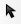 на панели Tools. Разместите его в правом верхнем углу карты.
 на панели Tools.
на панели Tools.


.

 на панели инструментов.
на панели инструментов.
 .
. Satino.gdb — это база пространственных данных, созданная в формате File Geodatabase (файловая база геоданных).
Satino.gdb — это база пространственных данных, созданная в формате File Geodatabase (файловая база геоданных).General (общегеографические данные) и


 --- слои векторных данных (классы пространственных объектов),
--- слои векторных данных (классы пространственных объектов), — слои растровых данных;
— слои растровых данных; — обычные таблицы;
— обычные таблицы; Identify и щелкните мышью на любом объекте, либо растяните прямоугольник вокруг объектов.
Identify и щелкните мышью на любом объекте, либо растяните прямоугольник вокруг объектов.


 Table Options — Add Field....
Table Options — Add Field....

 --- слои векторных данных (классы пространственных объектов),
--- слои векторных данных (классы пространственных объектов), — слои растровых данных;
— слои растровых данных;


 на панели Tools.
на панели Tools.


 на главной панели инструментов.
на главной панели инструментов.


слоям Places и Routes:


.


.


 на панели инструментов.
на панели инструментов.


 Satino.gdb в своем каталоге Ex04 и перенесите на карту два тематических слоя:
Satino.gdb в своем каталоге Ex04 и перенесите на карту два тематических слоя:  SoilTypes (Типы почв) и
SoilTypes (Типы почв) и 

 и щелкните в пределах карты на любом полигоне.
и щелкните в пределах карты на любом полигоне.
 на панели инструментов.
на панели инструментов. Table Options > Add Field…
Table Options > Add Field…


 на панели инструментов.
на панели инструментов.
 . Окно карты примет вид, аналогичный представленному на рисунке:
. Окно карты примет вид, аналогичный представленному на рисунке:


 Clear Selected Features на панели инструментов Tools. Окно приложения примет следующий вид (обратите внимание на то, что расстояния были вычислены не для всех дорог, а только для выбранных):
Clear Selected Features на панели инструментов Tools. Окно приложения примет следующий вид (обратите внимание на то, что расстояния были вычислены не для всех дорог, а только для выбранных):
 Select Features By Rectangle на панели инструментов Tools. Чтобы выбрать последовательно несколько объектов, вы можете зажать клавишу Shift:
Select Features By Rectangle на панели инструментов Tools. Чтобы выбрать последовательно несколько объектов, вы можете зажать клавишу Shift:


 добавления слоя вверху диалога.
добавления слоя вверху диалога.

 в начале каждой строки. Диалог примет следующий вид:
в начале каждой строки. Диалог примет следующий вид:


 Каталога. Найдите вверху домашнюю директорию Home — это каталог Ex13, куда вы сохранили документ карты.
Каталога. Найдите вверху домашнюю директорию Home — это каталог Ex13, куда вы сохранили документ карты. WaterPolygon и
WaterPolygon и  WaterLine из базы
WaterLine из базы  Satino.gdb.
Satino.gdb.
 Add Coordinate System и в ниспадающем меню выберите команду Import. Найдите слой Border базе геоданных Satino.gdb и дважды кликните на нем. Параметры проекции автоматически подставятся из созданного ранее слоя. Убедитесь, что проекция называется WGS_1984_UTM_Zone_37N.
Add Coordinate System и в ниспадающем меню выберите команду Import. Найдите слой Border базе геоданных Satino.gdb и дважды кликните на нем. Параметры проекции автоматически подставятся из созданного ранее слоя. Убедитесь, что проекция называется WGS_1984_UTM_Zone_37N.

 Clear Selected Features на панели инструментов Tools.
Clear Selected Features на панели инструментов Tools. на панели Tools (Рис. 4) и выберите Водотоки в списке цифруемых объектов:
на панели Tools (Рис. 4) и выберите Водотоки в списке цифруемых объектов:

 Full extent, чтобы все объекты поместились на экране.
Full extent, чтобы все объекты поместились на экране. на панели Editor и дважды щелкните на линии ручья. Должны появиться вершины. Потяните за последнюю вершину и пристыкуйте ее к линии реки (Рис. 6). Щелкните на пустом месте, чтобы завершить редактирование.
на панели Editor и дважды щелкните на линии ручья. Должны появиться вершины. Потяните за последнюю вершину и пристыкуйте ее к линии реки (Рис. 6). Щелкните на пустом месте, чтобы завершить редактирование.

 и щелкните мышью в месте впадения ручья в Протву. Линия Протвы разобьется этой точкой на 2 части.
и щелкните мышью в месте впадения ручья в Протву. Линия Протвы разобьется этой точкой на 2 части.


 Set Flow Direction. Кружки должны смениться стрелочками, указывающими направление течения. Просмотрите разные части карты и убедитесь в том, что направление течения задано одинаково верно для всех водотоков (Рис. 14).
Set Flow Direction. Кружки должны смениться стрелочками, указывающими направление течения. Просмотрите разные части карты и убедитесь в том, что направление течения задано одинаково верно для всех водотоков (Рис. 14).

 Solve.
Solve.


 и укажите модель tin+ в качестве источника высот.
и укажите модель tin+ в качестве источника высот.